| 幻葬神話のドレッドノート | |
| 鳥羽 徹 | |
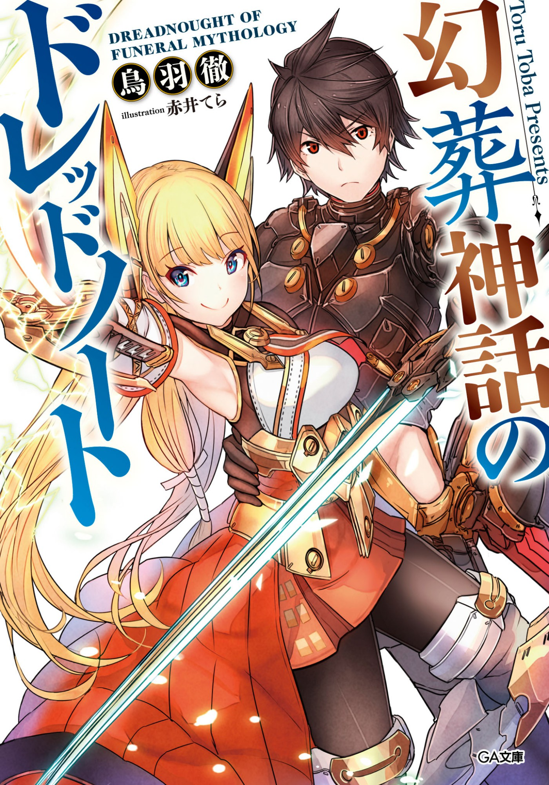

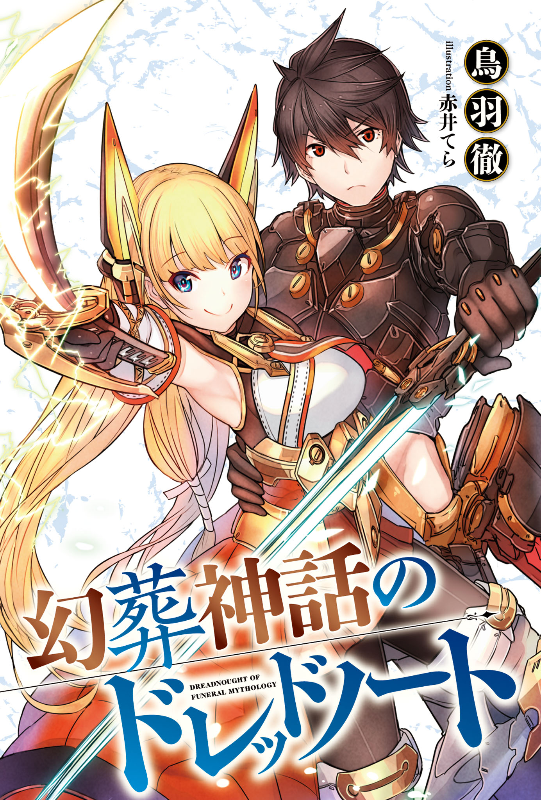
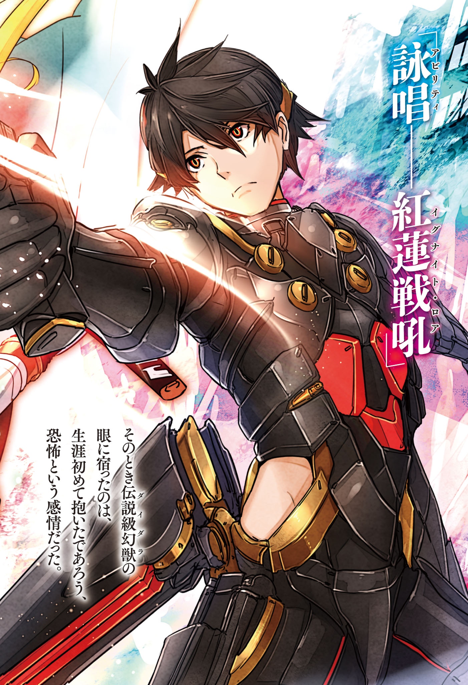
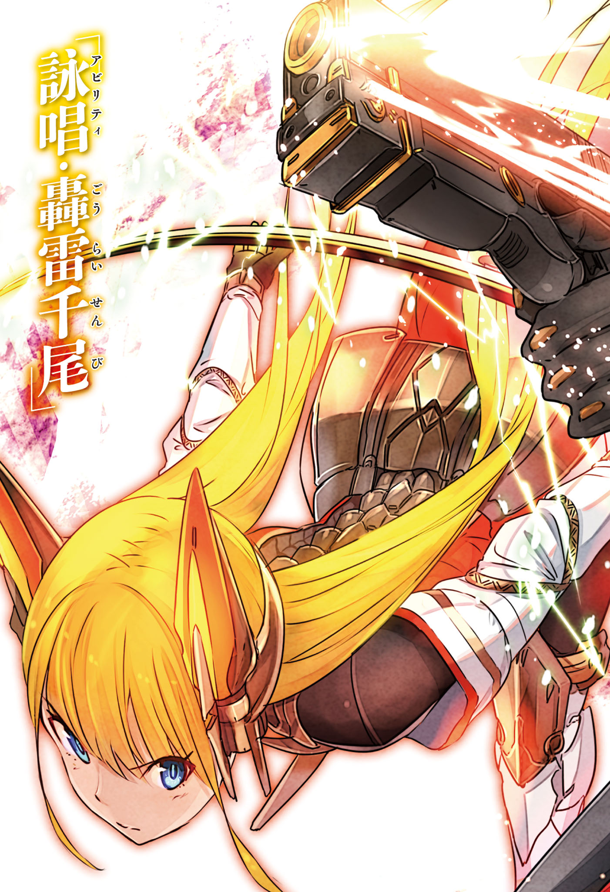
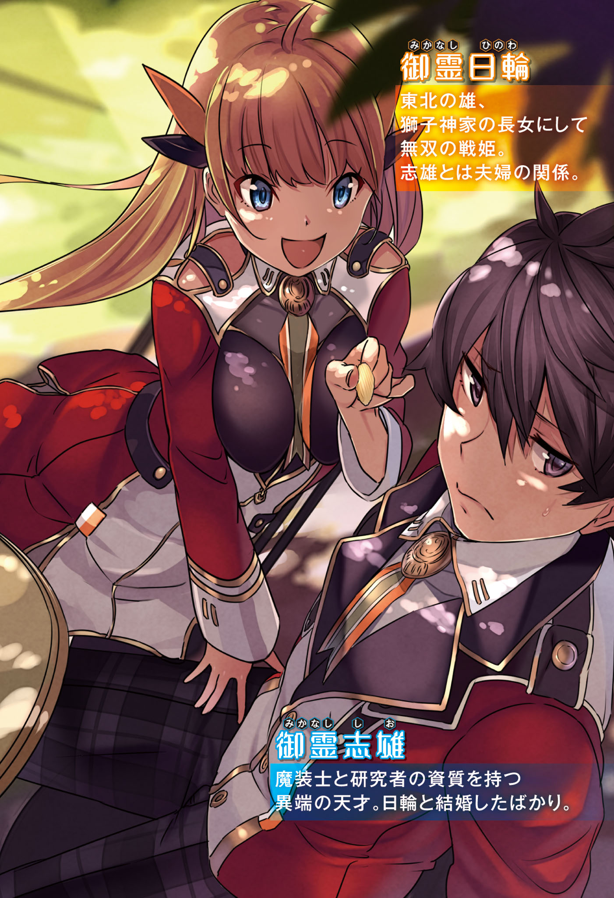
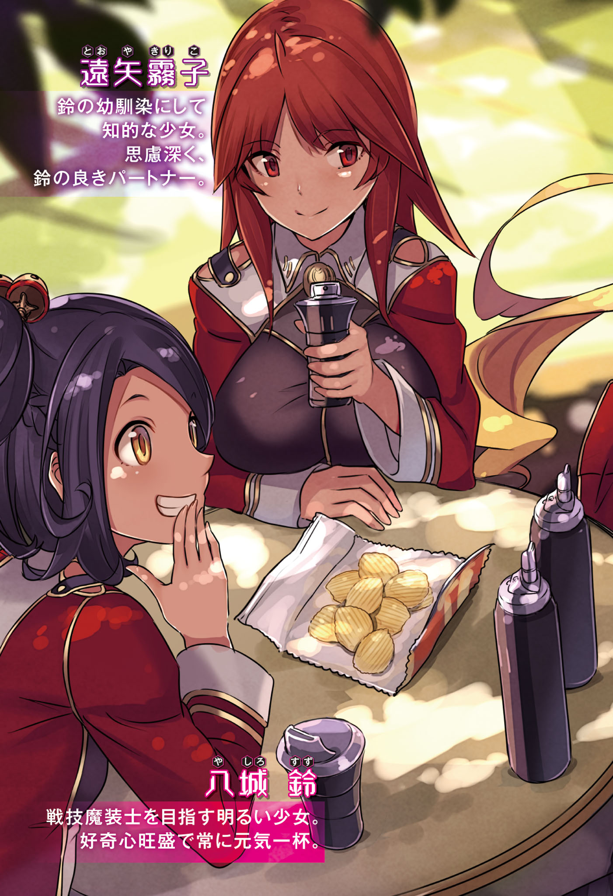
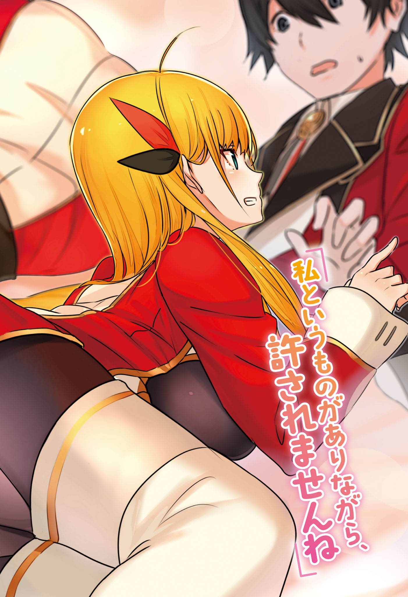
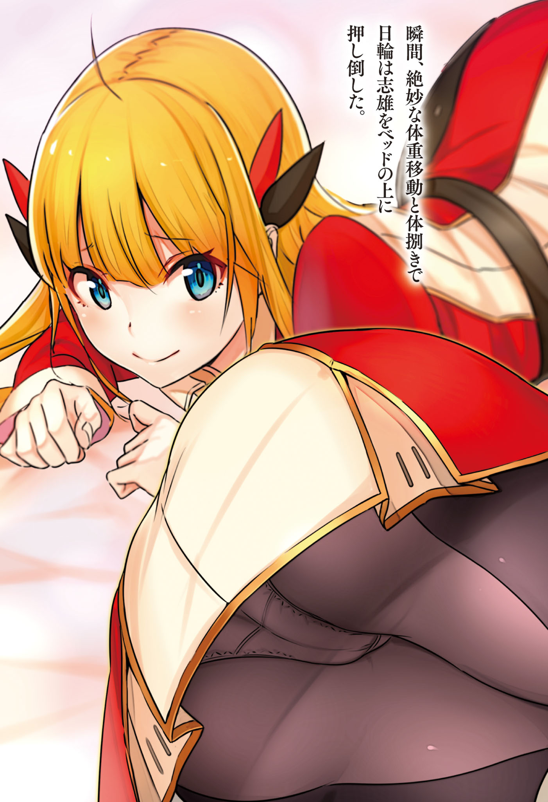
幻葬神話のドレッドノート
鳥羽 徹

本書に掲載されているコンテンツの著作権等の知的財産権およびその他すべての権利は、ＳＢクリエイティブ株式会社または正当な権利を有する第三者に帰属します。
本書の内容を権利者の許諾なく複製・複写・翻案・放送・出版・データ配信（送信可能化を含む）などすることはできません。
カバー・口絵 本文イラスト
赤井てら
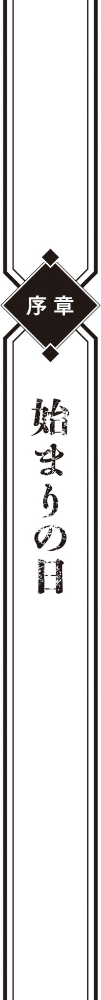
剣戟の音が響く。
飛び交う怒号と空気を震わす衝撃。
壁と天井が壊され、床には瓦礫と機器が散らばるその広間で、今、戦いが繰り広げられていた。
「距離を取って回り込め！ こいつの正面に立つな！」
広間を駆けまわるのは数人の男たち。その身には装甲を纏い、手には剣や銃を構えている。彼らの視線が向けられるのは広間の中心。そこに君臨するのは──巨大な異形の怪物だった。
「オオオオオオオオオオ！」
凄絶な威容の怪物だった。部屋を押し潰すかのように広がる巨大な羽。長い首と尻尾は強で、鈍色の鱗で覆われた胴体は鉄壁のごとく。両足からは鋭い爪が伸び、蛇に似た、それでいて蛇よりも禍々しい頭部と凶眼。喉奥から発せられる切り裂くような咆哮は、それだけで人の心を恐怖に凍りつかせるだろう。
「この───！」
怪物の背後を取った男が手にした剣で斬りかかる。しかし白刃は怪物の鱗の前にあえなく弾かれ、同時に振りぬかれた丸太のような獣尾が男を吹き飛ばす。ならばと別の男が銃を構えるが、次の瞬間、凄惨な牙が並ぶ口蓋の奥から赤熱が溢れ出し、紅蓮の炎が辺り一面に吐き出された。
「くっ、これでは......！」
瀑布のごとき炎に煽られ、誰もが攻撃できずにたたらを踏む。そんな男たちに向かって怪物はさらに炎を放つべく深く息を吸い──
「──ワイバーンごときに、何を手間取っているのですか」
凛とした声とともに、剣閃が炎を切り裂いた。
炎の奥の怪物が驚愕に眼を見張る中、雷光のごとく駆け抜けた人影が怪物と馳せ違い──次の瞬間、両断された異形の首が弧を描いて宙を舞った。
「おお......！」
男たちが感嘆の声をあげ、眼を人影へ向ける。その視線を背に浴び、倒れ伏す怪物の傍らで刀を鞘に納めるのは、一人の少女だった。
「お嬢様、お怪我は」
「ありません。負傷者の救助を」
少女の指示に従い、男たちはすぐさま負傷者に駆け寄る。それを見届けてから少女は改めて足元に転がる怪物の死骸を見た。
「やはりこの研究所が幻獣に襲撃されたのは間違いありませんね......」
破壊された機器や散乱する瓦礫。炎の残滓が揺らめく中で香る戦いと血の臭い。それは今の怪物との戦闘より前に生まれたものだ。
「生存者がいれば良いのですが」
呟きながら辺りを見渡す。すると少女は荒れ果てた室内の一角に眼を留めた。瓦礫に隠れているが、そこには奥へと続く通路が一つ。
「お嬢様？」
声に応じることなく、少女は通路を覗きこんだ。強い血の臭い。少女は眉をしかめながらも瓦礫の隙間から通路に踏み込んだ。
「............」
進むにつれ血の臭いが一層濃くなる。そして死臭も。少女は腰元の刀に手を置き、やがて出口に到達した。
「これは......」
そこにあったのは、おびただしい数の怪物の死骸だった。先ほど少女が倒した怪物に似たものや、あるいはまるで違う外見のものなど。十や二十ではない。その数倍の怪物たちが何重にも重なりながら血に塗れ、息絶えている。
あまりに凄惨な光景に少女は思わず慄き──捉える。視線の先。積み上げられた死骸の頂点。全身に傷を負いながら、怪物に突き刺した青い剣を支えに、微動だにせず立ち尽くすのは──一人の少年。
（生存者......！）
急いで駆け寄ろうと踏み出したその時、少年の肩が僅かに揺れた。
瞬間、彼の姿が少女の視界から搔き消えた。
「ッ────!?」
衝撃音が鳴り響いた。一瞬にして間合いを詰めた少年の剣と、咄嗟に抜き放たれた少女の刀が嚙みあい火花を散らす。なにを──言葉を口にしようとして、気づく。少年がもはや意識を失っていることを。その赤い瞳から意志の光が失われてなお、忘我の域で剣を振るっていることを。
「くっ......！」
剣を止めている刀が押し返される。恐るべき膂力。刃が首筋にまで到達し、裂かれた薄皮から血の玉が滲む。焦燥が少女の胸中を駆け抜け──不意に、剣から伝わる圧力が消失した。
突然のことに虚を突かれた少女の前で、少年の手から青い剣が滑り落ちる。つられるようにして彼の体も膝から崩れ落ちようとし、咄嗟に少女は少年の体を抱き留めた。
限界だったのだろう。凍りついたかのように冷たい少年の肉体を感じながら少女はそう思った。同時に背を震わせる。少年の見せた剣筋は怪物たちの死骸に刻まれたそれと一致する。間違いなく、彼がこの光景を作り上げたのだ。
「............」
背後から多くの人が向かってくる音と声を感じながら、少女は腕の中にある少年を見た。憔悴しきった横顔は、筆舌に尽くしがたい地獄がここにあったことを如実に表している。
次に目覚めた時、この少年はどうなるのだろうか。
少女は答えの出ない問いに思いを馳せながら、より強く少年の体を抱きしめた。
平地が有害物質である幻素に覆われておよそ四百年。
幻素の届かない山上に逃げ延びた人類は、資源の枯渇や技術の喪失、そして幻素に覆われた大地より現れる変異した生物──幻獣の脅威によって、緩やかに滅亡へと向かっていた。
しかし【魔力】と【魔術】の発見が、その絶望的な状況を覆す。
いつ頃からか、一部の人間が体内に宿すようになった特殊なエネルギーである【魔力】。そして魔力を物理現象へ変換する技術体系である【魔術】。この二つにより、人類はエネルギー不足や幻獣の脅威など、多くの問題に対応できるようになったのだ。
そして魔術の担い手たる人々は魔装士と名付けられ、魔装士の中でも戦いに従事する者は戦技魔装士と呼ばれるようになり、人類の支柱として活躍するようになる。
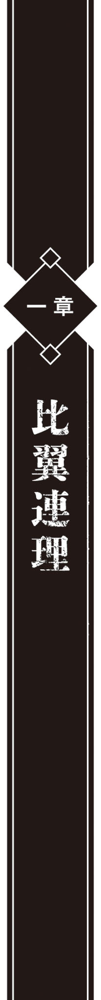
「だーかーらー、その値段は高いって！」
まだ年若い少年の声が、街並みの一角で張りあげられた。
「いくら【大災禍】前の寄木細工だからって、キズもついてて状態はよくないでしょ。せいぜい七千が妥当だよ」
木製の箱を手にそう口にするのは、黒髪の少年だった。年齢は十代半ばを過ぎた辺りか。細身な体格だが虚弱な様子は一切感じられず、しなやかな若木を思わせる風貌だ。
彼の背後では踏み固められた路上を人々が行き来し、足音や世間話が濁流のように流れている。そんな中で少年が足を止めて対峙しているのは、路傍で開かれている露店だった。
「確かに外見はちとあれだが、磨けば十分光るはずだ。一万三千だ」
露天商が周囲の雑音に呑まれないよう声をあげ、少年も負けじと応える。
「でも磨くのはこっちがやることでしょ？ 九千」
「一万二千！ 出すところに出せば一万七千は固い品だぞ」
「そこに出せないからここに並んでるんじゃないか。一万！」
「一万一千！ それより下なら店じまいだ」
少年と露天商はしばしにらみ合って火花を散らし、やがて少年が根負けしたように息を吐いた。
「じゃあさ、何か一つおまけしてよ、その辺のでいいから」
少年が指差したのは露天商が座るシートの隅に積まれた品々。見るからに扱いは雑で、事実として積まれている物はガラクタとしか言いようがない物ばかりだった。
「ああん？ ......まあ、その辺ならいいか。好きなの一つ持ってきな」
許可を得た少年はしばしガラクタの山を眺め、やがて取り出したのは小さな金属塊。所々破損し、くすんでいるが、それはオルゴールだった。
「これをもらおうかな」
「俺は構わねえが、それ錆びてる上にピンは抜けてるしゼンマイも壊れてるぞ？」
「修理するよ。手先は器用だしね。箱を開くとこれが鳴るようにしようかな」
「そうかい。じゃ、商談成立だ」
少年は代金を支払うと木製の箱とオルゴールを受け取る、
「ところで坊主、その制服着てるってことは八槍校の訓練生かい？」
「ああ、今年から入学するんだ」
「なるほどねぇ......もしも幻海で面白いもん拾ったら持ってこいよ。買い取るぜ」
「買いたたくの間違いじゃないの？」
「それは坊主次第だな」
少年と露天商は笑いあった。
そんな折、少年の背中に声が届いた。
「志雄、こんなところにいましたか」
「あ、日輪」
少年が振り向くと、そこにいたのは一人の少女だった。年の頃は少年と同じ。透き通るような白い肌と、その上を滑る金色の長髪。宝石のような碧い瞳は、まるでこの世ならざる造形物。一見すると冷たさすら感じさせるその美貌だが、彼を見つめる彼女の顔には温かみが浮かんでいた。
「探しましたよ。いつの間にかいなくなって」
「いやごめん。街並みを見てたらついふらふらとね。さすが中央は賑わってる」
「心地よい活気があるのは認めますが、また妙なものを買って......木箱とオルゴールですか？」
「ああ。どちらも数百年前の品物だよ。かつて人が作った物が、長い時間を超えて僕の手元に......ロマンがあると思わない？」
「ロマンを語るのは結構ですが、随分と傷んでいるように見えますね。いくらの値で入手を？」
「え、あー、いや、それは」
目をそらす少年──志雄の背後で、露天商が笑いながら言った。
「一万一千だよ、お嬢ちゃん」
「あ、ちょっと!?」
「ほう、これに一万以上の値を......」
「いや日輪、これには事情があってね。ロマンと実利は得てして同居しにくいというかもが」
言い訳の途中で少女──日輪の手が志雄の頰を引っ張った。彼女の穏やかな温もりが頰に伝わり、さらに真っ直ぐに覗き込む碧い瞳の輝きが眼に映る。
「ふむ、やはり少し冷えていますね」
「もがもが」
標高にして千五百メートル地点という高度は、草木が芽吹く春先でも肌寒い。今も時折冷たい風が思い出したように街中を通り過ぎている。値下げに熱中しているうちに体温を奪われていたらしい。
「しばらくこうしているのも良いですが、丁度良い物があります」
志雄の頰をむにむにとこね回しながら日輪がバッグから取り出したのは、紙に包まれた二つの饅頭だった。作りたてのようで、食欲をそそる香りが鼻孔をくすぐった。
「目についたので買ってしまいましたが、ロマンと違ってこちらはお腹が膨れますからね。さあ志雄」
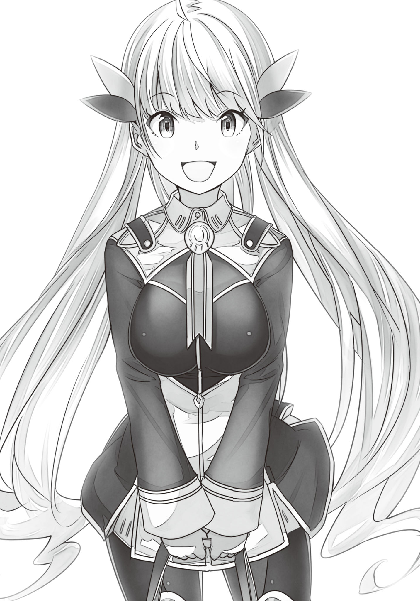
「ああ、ありがと──」
受け取ろうと手を伸ばしたところで、つい、と躱される。そして日輪はにんまりと笑って言った。
「あーんしてください」
「......いや自分で食べれるから」
「あーん」
「だから自分で」
「あーん」
「......あーん」
志雄は観念して口を開いた。道行く人々から視線が刺さるのを感じながら、口の中に入れられた饅頭を一口食べる。作りたての熱と柔らかな触感が口の中に広がった。思ったよりも熱いと感じなかったのは、気恥ずかしさで先に顔が熱を帯びていたゆえか。
「どうですか志雄、温まりますか？」
「......お陰様で」
「それは良かった」
満足げに微笑む日輪。華やぐその横顔はとても可愛らしく、何か仕返ししてやろうかと思っていた気持ちがみるみるうちにしぼんでいく。いやしかし、やられっ放しでは沽券に係わる。何か無いかと考えて──思いついた。
「それじゃ、僕もお返ししなきゃね。はい、日輪」
「え？」
もう片方の饅頭を手に取り、日輪の口元に差し出す。
「いえ、私は自分で」
「あーん」
「その、人目もありますし」
「あーん」
「......あーん」
日輪は一度周りを見渡した後、覚悟を決めた様子でおずおずと口を開き、むようにして一口食べた。
「美味しい？」
「......味が解りません」
にっこりと問いかけると、そっぽを向きながら日輪は答えた。その頰はほんのり赤みがかっている。そんな彼女の姿を見て心が満たされるのを感じていると、おもむろに伸びた日輪の手が志雄の持っていた饅頭を奪い、逆に日輪も持っていた饅頭を押しつけるように志雄に渡した。
そして志雄の前で瞬く間に饅頭を平らげると、大仰な仕草で髪を払い、日輪は言った。
「......ふっ、さすがは志雄ですね。今回は引き分けにしておきましょう」
「今の勝負だったのか」
「ですが勝敗は兵家の常。故郷を離れたここならば、誰憚りなくこうして志雄とイチャイチャできます。いずれ私が完全なる勝利を摑む日も来るでしょう」
「誰憚りなくって言っても、向こうにいた頃とあんまり変わってないような......」
「つまりこの程度では手ぬるいと志雄は言いたいわけですね？」
我が意を得たとばかりに日輪は自信に満ちた目を輝かせる。
「よろしい、その挑戦を受けましょう。志雄が音をあげるほど甘々な体験させて差しあげますよ」
志雄は少しだけ考えて、
「......いやあ、それは難しいんじゃないかな」
「私では不足だと？」
「そうじゃなくてさ」
不満げな日輪に志雄は言った。
「それがどんな内容にせよ、日輪と過ごすことで僕が音をあげることはないでしょ」
たとえ天地がひっくり返ろうが、それだけはありえない。そんなことは解りきっていることだ。が──なぜか日輪は耳まで赤くして俯いていた。
「あれ、どうかした？」
「......知りません。戦略的撤退です。いいからそれを食べちゃってください」
よく解らなかったが、不機嫌になったわけではなさそうだ。それに安心しつつ促されるまま素直に齧りつくと、肉の味が口内に広がった。
「あ、これ肉まんだったのか」
「豚肉百パーセントだそうですよ」
「んー......一割も入ってないね」
味は悪くないが、明らかに偽装である。とはいえ、
「屋台で売っていた物ですから、そんなところでしょう」
俯きながらの日輪の言葉に志雄は頷いた。今時純粋な豚肉や牛肉など、よほどの場所でなければお目にかかれない代物だ。その辺の屋台で売っているようなものでなく、買う方も、混じり物の無い肉を食べている気持ちを味わうために買っているのだ。
「まあ食事は何を食べるかよりも誰と食べるか、って言うしね」
そう呟くと、気を取り直した様子で日輪が顔を上げた。
「となれば、志雄とならば霞もご馳走になりえるわけですね」
「かもね。今度一緒に食べてみる？」
「幸いいつでも食べられるものですから。今際の際まで取っておきましょう」
「......お二人さんよ。まだ続けるつもりなら余所でやってくれねえかい」
うんざりした様子で露天商がそう言うと、言われてみれば、と日輪が言った。
「長話が過ぎましたね。志雄、そろそろ学校に向かいましょう。入学式に遅れます」
「あっと、もうそんな時間か」
志雄と日輪の視線が道をずっと進んだ先の、街外れの山肌に向けられた。
そこに、巨大な学舎が存在していた。
時計塔が特徴的な、見る者を威圧するかのように頑強な石壁で形作られた施設の名は、八槍校。八槍砦と呼ばれるこの山塊において唯一の、日本全体でも四カ所しか存在しない、魔装士専門の養成機関。二人は今日、あの学校に入学する予定だった。
「学校か。楽しみだな、どんなところだろ」
志雄にとって学校という公共機関に通うのは初めての体験だ。伝聞では色々と知っているが、やはり直に体験するのとでは大きな違いがあるだろう。
「友達百人できるかな、だっけ。学校といえば」
「数百年前に浸透していたとされるフレーズですね。ですがそれは凡夫の目標。どうせならばもっと高い場所を見据えるべきでしょう」
「なら千人でも目指してみる？」
「いえ、無暗に数を増やすのは二流の所業。──ここはライバル百人叩き潰せるかな、でどうでしょうか」
「殺伐とした学校生活になりそうだ......」
「ご心配には及びません。私が志雄の傍にいる限り、いかな荒涼の大地だろうと花を咲かせて彩りましょう」
「血の花じゃないことを祈っておくよ。──さ、行こうか」
二人は頷き合い、学校へ向かって歩き出した。
◆◇◆
「魔装士とは、人類の支柱である」
国営魔装士養成学校、八槍校。
数十人の新入生が並ぶ講堂において、教官にして〝銀杖〟の等級を持つ戦技魔装士である土方一真は声を張り上げた。
「数百年前、世界中に発生した幻素による混乱──俗にいう【大災禍】により、人類は山上に追いやられ、滅びに瀕した。それを覆したのが魔装士になるわけだが──」
新入生の一人として講堂に並んでいた志雄は、滔々と続く教官の演説を耳にしながらそれとなく周りを見渡した。
新入生たちは年若く、自分と同年代のようだ。ここに立っている以上全員が魔装士──教官の言葉を借りるのならば、人類の支柱──になる素質を持っているということである。とはいえ、緊張した面持ちの彼らからは、まだまだ頼りなさが目立っているが。
（......ん？）
不意に左隣に立つ黒髪の少女が目に入った。
見るからに快活そうな風貌の少女だ。教官の演説が続く中、緊張するより先に直立不動でいることに飽いている様子で、前を向きながらもそわそわしている。志雄は何となく、昔資料で見た小動物を思い出した。
（今は絶滅したんだっけな......）
【大災禍】では人類のみならず多くの生物が死に絶え、生き残ったとしても大きく変異した。もはや資料の中でのみ語られる生物は少なくない。そんなことを考えていると、視線に気づいたのか、少女と目があった。
「話、長いね」
こっそりと囁く少女に志雄は苦笑して頷いた。
「きっと眠気を誘うことで緊張を解そうとしてるんだよ」
少女は小さく噴き出し、それから悪戯の同士を見つけたかのようににっこり笑い──志雄は右脇腹に突き刺すような痛みを感じた。
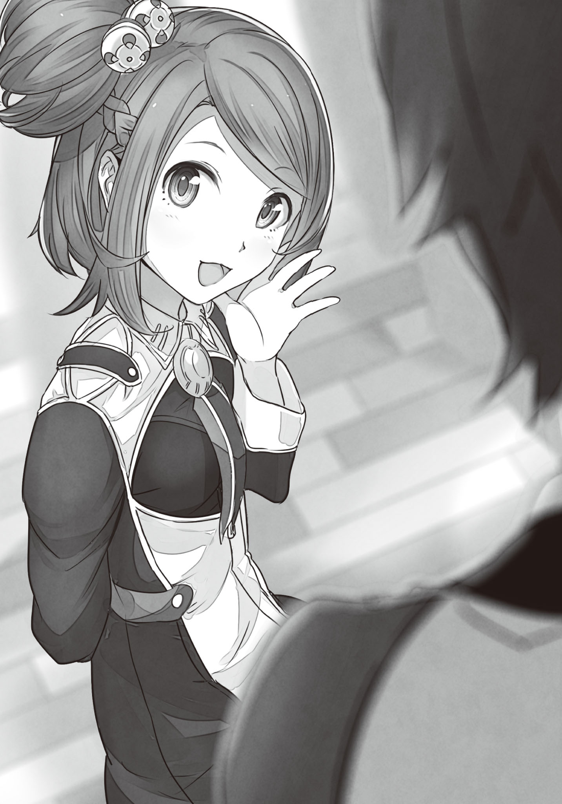
「......っ」
「どうかした？」
「い、いやなんでもないよ」
少女に答えながら右隣に振り向けば、そこには物言いたげな目の日輪。志雄の脇腹を突いた指を小さく動かし、前を示す。ちゃんと話を聞いてなさい、ということらしい。渋々従うと、ちょうど話が締めに入ったところのようだ。
「この学校に入学するにあたって、魔装士の卵たる君たちには多くの恩恵が与えられる。しかしそれらは全て、君たちが一人前の魔装士として人類に貢献することを期待してのことだ。それを裏切ることなく、日々尽力するように。──以上だ」
教官の一真が語り終えると同時に、新入生たちの間に漂う空気が僅かに緩んだ。それに乗じるように、さて、と一真は切り替える。
「君たちにとってここにいる全員がライバルであり、また仲間でもある。積極的に交流するといいだろう。──ではこれより、一名ずつ名前を読み上げる。呼ばれた者は返事を」
そう言うと一真は名簿から名前を読み上げ始めた。講堂の中に、淡々と名前を口にする一真の声と、それに返事をする訓練生の声が木霊する。
しかし名前の読み上げが志雄に至ったところで、異変が起きた。
「御霊志雄」
「はい」
「御霊──」
そこで、一真の声が止まった。
名簿から顔をあげ、志雄──の横にいる日輪を見る。
「......御霊日輪」
「はい」
端的に応える日輪をしばし見つめた後、一真は言った。
「確認しておくが......出願時から姓が変わったか？」
「ええ、獅子神は旧姓になりました」
「ちょ」
獅子神。悠然と日輪がその名を口にした途端、彼女の横に立つ志雄は思わず声をあげる。同時に、ざわり、と小波のような動揺が訓練生の間に広がった。
「獅子神？ 獅子神って確か──」
「北部の桜翼城砦を実質的に支配してるっていう」
「特殊な魔術を代々継承してるとか──」
「いやそれより旧姓って」
「日輪、予定と違──」
訓練生は揃って困惑の表情を浮かべ、好奇の視線が日輪と志雄に向けられる中、流れを止めようと一真が声をあげようとして──
「──この度、彼と結婚しましたので」
日輪がそう口にすると同時に、
彼女の手が志雄の頰に添えられ、あ、と誰もが見守る中で、日輪の唇が志雄のそれと重なった。
「────」
ざわめきが爆発した。
訓練生たちは最早統制を失い、講堂の中を縦横無尽に言葉が投げ交わされる。一真はお手上げとばかりに眉間を押さえた。
そして唇を離し、誰よりも満足げな表情を浮かべる日輪の横で、真っ赤になった志雄が頭を抱えていた。
◆◇◆
「予想以上の反応でしたね」
あてがわれた寮室の中、ベッドの端に腰掛けながら日輪は優雅に言った。
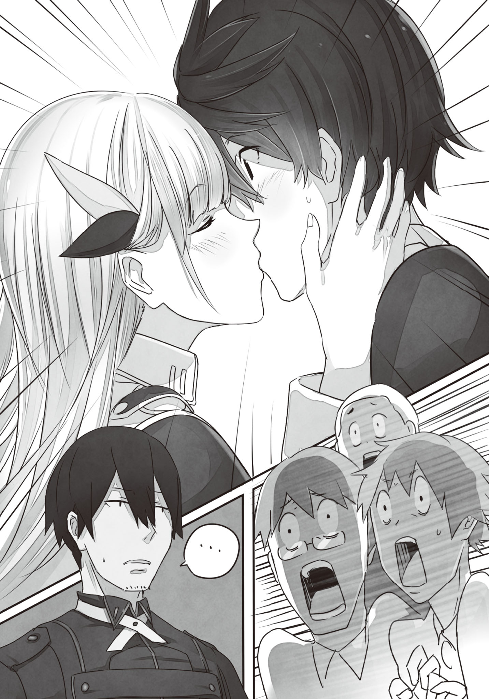
あれからどうにか教官が騒ぎを落ち着かせ、点呼が終わった後、簡単な校舎内部の説明や今後のスケジュールを説明し、訓練生は解散。ただし志雄と日輪は教官に呼び出され、ひとしきり怒られた後、割り振られた寮室に戻っていた。
「あの様子では、しばらくは私たちのことで持ちきりでもがもが」
「ひーのーわー......！」
悠然としている日輪の頰を志雄は両手でつまんだ。
「事前の予定じゃ、あんな大々的に宣言するはずじゃなかったよね......!?」
「確かにその手筈でしたが、人の口に戸は立てられぬもの。こうして同じ寮室であることもいずれ露見すると思えば、先に公言してしまう方が後腐れもないかと思い立ちましたので」
「本当のところは？」
「御霊日輪と呼ばれることでテンションが上がってつい」
むにー、と志雄は日輪の頰を引っ張った。
しばし引っ張られ続けた後に解放され、日輪は赤みを帯びた頰を撫でながら言った。
「仕方ないではありませんか。いいですか志雄、御霊日輪ですよ？ 御霊日輪。み・か・な・し・ひ・の・わ！ 即ちこの私が！ 御霊志雄の！ 妻たる証明！ それを口にされることに、どうして高揚せずにいられましょうか！」
「だからって皆の前でキスはやりすぎじゃないかな!?」
「そんな......私はただ、志雄と私の夫婦の絆の強さを示そうとしただけで......」
日輪は顔を手で覆って俯いた。その指先の隙間から、透明な滴が零れおちる。
「日輪......」
そんな日輪に志雄はバツが悪そうに言った。
「──目薬見えてる」
「あっと、失礼」
日輪はあっさりと顔をあげ、ポケットから覗いていた目薬を奥に押し込んだ。
そんな様子に、志雄は苦笑して息を吐いた。それから日輪の横に腰掛ける。
「まあいいや。日輪に悪気があったわけじゃないだろうしね。それに──」
「それに？」
「......いや、なんでもない」
死ぬほど恥ずかしかったけど悪い気分ではなかった──などと言った日には、日輪が調子に乗りに乗りきることは解りきっているので、志雄はこのことは一生秘めようと心に決めた。
「ともかくもう過ぎたことだし、秘密を抱える必要が無くなったと前向きに考えよう」
「そうです、そうしましょう。それにこうして目立つことで恐らく私たちを快く思わない連中が生じます。場合によっては戦いを挑んでくるでしょう。素晴らしいことです。早速見えてきましたよ、ライバル百人斬りの道筋が」
「うん、もう少し日輪に対して怒ってもいい気がしてきたな......！」
日輪の頰を引っ張ると、冗談です、と日輪は言って立ち上がった。
「とりあえず、何か飲んで人心地つきましょうか。──志雄、水とお茶、どちらがいいですか？」
「あれ......お茶があるの？」
「茶葉を茶器と一緒に実家から持ってきましたので」
それに、と日輪は部屋の奥を示す。
「小さいですがキッチンなどもありますから。一介の訓練生の部屋にこれだけの設備とは、さすが政府直轄の施設ですね」
「教官の言っていた恩恵って奴だね。──まあ今は水をもらえるかな」
日輪から水が入ったコップを受け取り、唇を湿らせる。冷たい水が臓腑に染みこんで心地よい。
「志雄、この後はどうしますか？ 荷物の整理も必要ですが」
「そうだな......せっかくだし学校を探検してもいいかな。それと積極的に交流しろって教官も言ってたし、他の生徒と話すのも」
「──そういえば、忘れていました」
ぎしり、とベッドが軋んだ。
目をやれば、すぐ横に笑顔の日輪。志雄はその笑みの奥に言い知れない迫力を感じた。
「志雄、講堂の件で私からも少々お話が」
「よし早速学校探検に出ようそうしよう今しよう」
「お待ちを」
立ち上がろうとしたところで肩をガシッと摑まれる。万力に挟まれたかのような錯覚を抱きつつ日輪をみれば、彼女は笑みを崩さないまま顔を近づけ言った。
「先ほどの講堂で、見知らぬ女性と楽しそうにしていましたね」
「い、いや、あれはなんていうかたまたま目が合っただけで」
「何も含むところはないと？」
「もちろん、あるわけないじゃないか。僕のパートナーは日輪を置いて他にないよ」
「可愛い女の子だなー、なんて思ったりしなかったと？」
「いやそれは思った」
「──とう」
「おわっ!?」
間髪いれず放たれた日輪の貫手を、志雄はすんでのところで回避した。
「私というものがありながら、許されませんね」
「だからといって攻撃してくるのは許されるのかな......!?」
「あの口づけには牽制の意図もあったのですが、正解でしたね。志雄がそういう行動をするのならば、私も考えがあります」
瞬間、絶妙な体重移動と体捌きで日輪は志雄をベッドの上に押し倒した。
「ちょ、日輪!?」
「さて、では次に上着を脱いでと」
「待った待った待った！」
迷いなく己の上着のボタンを外そうとする日輪を止めるべく、志雄は慌てて手を伸ばし──
ふにっ、とその右手が彼女の胸に触れた。
「あ、ごめっ」
「えい」
反射的に引っ込めようとした右手が、可愛らしい掛け声と裏腹に恐るべき瞬発力で動いた日輪の左手によって摑まれ、あろうことかさらに胸に押し付けられた。
「もう、いけませんね志雄。こんな時間から積極的で......最高です」
「くおおおおっ!? 手が、手が離れない......!?」
「どうですか、私の胸の感触は。しっかりとした張りがありながらむにゅんとしていて、我が乳房ながらなかなかの一級品と自画自賛しているのですが」
「た、確かに柔らかくて弾力があって──って違う！ とう！」
「あっ」
一瞬の隙を突いて摑まれていた手を引き抜き、さらに滑るようにして日輪の下から脱出すると、素早く彼女の両手首を押さえ込んで志雄は言った。
「日輪、ここに来る前に僕らは散々話し合ったよね......!?」
「ええ。六時間もの議論の結果、二人で同じ部屋にしてもらうことにしましたね。申請の際、男女が同じ部屋ということで渋られましたが、実家の権力を使えば造作もないことです」
備え付けられた二段ベッド。簡素とはいえ用意されている調度品やキッチン。それでいてスペース的にはまだ余裕がある。どう見ても個人用の部屋ではない。
「ただ、同室になってもそういうことはまだしない、とも決めたよね！」
「もちろん理解しています。──ですが、志雄と私は夫と妻。比翼連理の間柄。その片割れが他の女性に現を抜かすのならば話は別です」
「だから抜かしてないってば！」
などと、二人は言い合いながらベッドの上で七転八倒を繰り広げる。
その時、部屋の扉がノックされた。
「......」
「......」
二人は示し合わせたように動きを止め、一度視線を重ねる。それから日輪は若干不機嫌そうに、志雄は安堵した様子で軽く咳払いをした後、お互いに乱れた衣服を整え、日輪が扉を開けた。
するとそこには二人の少女が立っていた。そのうちの片方は、先ほど講堂で志雄と目があった彼女だった。
「やっほ、急にごめ」
「この泥棒猫！」
「いきなりどゆこと!?」
「いえ、お気になさらず。言っておくべきかと判断しただけですので」
「そ、そうなんだ」
少女は目を白黒させながら曖昧に頷き──部屋の中にいる志雄に気が付いた。
「同室って聞いてたけど、本当に彼もいるんだ」
「当然です。なにせ私たちは結婚していますからね」
殊更結婚の部分を強調し、日輪は続けた。
「ところで、本日はどんな御用でしょうか」
「あ、ええっとその、何ていうか──」
「要は貴方たちについて気になるから探りにきたのよ」
「ち、ちょっと霧子！」
隣の少女──霧子という名らしい──からの不意打ちに少女は慌てた。しかし日輪はむしろ興味を抱いた。
「入学早々探りを入れに来るとは、見上げた精神です。情報を制することの重要さを理解しているようですね。確か名前は──八城鈴さんと遠矢霧子さんでしたか」
「あ、覚えててくれたんだ......って違う。そんな大層なことじゃないよ。ただ、結婚してるっていう二人がどんな人なのかなって思ってさ」
「だ、そうですが」
日輪は振り向いて志雄を見た。どうしますか、という問いかけ。あそこまで大々的に宣言したのだ、今更露見を恐れるようなことなど何もない。志雄は小さく頷いた。
「良いですよ。志雄も構わないそうです」
「ほんと？ それじゃせっかくだし中庭で話そうよ。ゆっくりできそうな場所見つけたんだ」
そうして少女──鈴に先導される形で、四人は外へ向かった。
校舎の探検は大方済んだと語る鈴に案内されたのは、学舎と宿舎の間にある中庭だ。周囲に木々が植えられた静かな場所であり、休憩所も設けられている。訓練生のための憩いの場として用意されたものなのだろう。
その一角で、四人はテーブルを挟み、椅子に座って向かい合っていた。
「それで改めて聞くんだけどさ、本当に志雄君と日輪さんの二人は結婚してるの？」
口火を切ったのはやはり鈴だった。
「私のことは日輪でいいですよ。──もちろん。私と志雄は正真正銘の夫婦です。ね、志雄」
「結婚したのはついこの間だけどね」
「ほへー......あ、私たちのことも鈴と霧子って呼んでくれていいからね」
感嘆の吐息を漏らす鈴。その横に座る霧子が落ち着いた様子で口を開く。
「経緯を聞いても構わないかしら？」
「あ、そうだよそれ聞かなきゃ！」
勢い込んで食いつく鈴に苦笑しつつ日輪は答えた。
「私たちが結婚したのは家のしきたりの一環ですよ」
「家の？」
「──獅子神、だったわよね、貴女の旧姓。あの桜翼城砦の獅子神ということでいいのかしら？」
「ええ、ご明察です」
桜翼城砦とは、本州北部から関東にまで伸びる長大な山脈のことだ。かつて奥羽山脈と呼ばれていたそこには幾つもの人類の拠点が築かれ、またとある一族が強い影響力を持っていることで有名である。
一族の名を獅子神。幻素の発生によって生じた混乱──【大災禍】後に生まれ、世界的混乱の最中で急激に勢力を広げ、今や無数の分家を従える日本でも有数の一族だった。
「僕の家である御霊だけどね、これは獅子神の分家筋の一つなんだ。そして獅子神本家の子は血を保つために、僕らぐらいの年齢になったら分家から丁度よさそうな相手を見繕って結婚するんだよ」
「そして私が選んだのは志雄だった、というわけです」
「へえー、今時そんなしきたりなんてあるんだ」
感嘆したように呟いてから、ふと鈴は首を傾げた。
「でもそれならなんで御霊なの？ そういうのって志雄君の方が婿入りするんじゃ」
「鈴」
鋭い横やりが霧子から放たれた。
さすがに踏み込みすぎだと告げる視線に鈴は慌てて口を噤む。
「ご、ごめんね。つい」
「いえ、大丈夫ですよ。大したことではありません」
微笑む日輪。その横で志雄は鈴と霧子を見ながら良い関係だなと思った。明るく元気だが時に暴走しそうな鈴と、一歩下がった視点でそれを補佐する霧子の二人。なかなかバランスが取れている。
「理由としては私に弟がいるため、本家の跡継ぎは問題ないこと。御霊には志雄しかいないので、志雄が婿入りすると御霊が途絶えること。私も志雄も本家を継ぐ意思がなかったこともそうですね」
「じゃあ反対とかもなく、スムーズに結婚できたんだ」
「いえ、散々反対されましたよ」
えぇー、という顔をする鈴に日輪は言った。
「特に私と結婚して婿入りを狙っていた分家は大慌てでしたね。相手が志雄ということでさらに反対の嵐です」
「御霊......というより、僕は他の分家から人気がなくてね」
その時のことを思い出せば浮かぶのは苦笑い。敵意の視線ですめばまだマシな方。中には臆面もなく罵詈雑言を並べる者もいたほどだ。
「でも最終的に志雄君と結婚したんだよね？」
「ええ。志雄が頑張りましたから。愛の力です」
「危うく入学が遅れそうになったけどね」
「私としてはもう少し、志雄と二人きりの新婚生活を楽しみたくはありましたけどね。戦技魔装士になるのも大事なことですから、仕方ありませんが」
すると鈴が興味を宿した声音で言った。
「あ、やっぱり戦技魔装士を目指すんだ。二人とも？」
「その予定です。幻獣対策局に入るためにも、できれば在学中に〝銀杖〟の等級ぐらいは得たいところですが」
幻獣対策局。その名の通り、幻獣と戦うために政府が設した組織だ。時折人類領域に出現する危険な幻獣の討伐や、幻海の調査などを主な任務としている。
また戦技魔装士はその功績に応じて順に〝錫杖〟、〝鉄杖〟、〝銅杖〟、〝銀杖〟、〝金杖〟の等級を与えられるが、戦いのスペシャリストが集う幻獣対策局に入るには、最低でも〝銅杖〟の等級が必要とされている。
「在学中に〝銀杖〟......さすがの自信ね。獅子神には凄腕の戦技魔装士が多くいると聞いているけれど、貴女も入学前から鍛えられているってことかしら」
「確かに幼少の頃から鍛錬は積んでいますが──少々誤解があるようですね。獅子神には戦技魔装士は僅かしかいませんよ。幻獣と戦える人は数多いですが」
「どゆこと？」
首を傾げる鈴に志雄が言った。
「戦技魔装士を含めて、魔装士は資格制だからね。獅子神には資格を持ってないけれど、戦技魔装士と同じように戦える人たちが多いんだ」
公的に魔装士を名乗るには、養成校に入学して卒業するしかない。しかし資格がなくとも素質と然るべき道具があれば魔術を行使することは可能なのだ。
もちろん資格を得ることでアドバンテージはあるが、同時に多くの規則に縛られるのも事実であり──束縛されたくない者や、政府を敵視している者など、資格を持たないまま魔術を扱う人間も少なくない。
「ですが、たとえ資格がなくとも獅子神に集う面々は対幻獣における専門家であり、その実力は本物です。強者を尊ぶのが獅子神の家訓ですからね」
「なるほどねー。それじゃ同期だけど先輩みたいなものだね」
「ちなみに、八城さんと遠矢さんは僕らと同じく戦技魔装士に？」
志雄の問いに鈴と霧子は頷いた。
「うん、二人と同じく戦技魔装士を目指すつもりだよ。ほら、魔装士の花形といえば戦技魔装士でしょ？ それに戦技魔装士って一攫千金も夢じゃないっていうし」
「鈴、またそんなこと言って」
「なによう、お金はあるに越したことはないでしょ。日輪と志雄君もそう思うよね？」
諌める霧子に鈴は唇を尖らせ、視線を志雄たちに向ける。
「いいと思うよ。備えあれば憂いなしっていうしね。お金を貯めて悪いことしたいってわけじゃないのなら、目的としてはむしろ健全さ」
「高潔な動機であれ世俗に塗れた野心であれ、それが苦難に挑む理由になりえるのならば、何を掲げるかは些細なことです」
「ほら霧子、二人もこう言ってるじゃん」
「まったく、あまり鈴を甘やかさないでほしいわね」
息を吐く霧子に志雄が言った。
「そういう霧子さんはどうして戦技魔装士に？」
「鈴を放っておいたら死にそうだからよ」
「なるほど、道理だ」
「ちょっとー！ なんでそこで納得しちゃうの！」
声を張りあげる鈴の前で、志雄と日輪は小さく笑いあった。
それから、ですが、と日輪は続ける。
「気心の知れた仲間とともに活動するのは理に適っていますよ。戦技魔装士は大きな富を得られる可能性がありますが、同時に危険も多い。凶悪な幻獣と戦わなくてはいけませんからね」
「うっ......そうなんだよね。幻獣と戦うのってどんな感じなんだろ。本当にできるのかな」
「きちんと訓練を積めば大丈夫だよ。それにどうしてもダメだって時は、他の魔装士になればいいさ」
志雄の言葉に日輪も頷く。
「農業、鉱業、建設、製造、通運、医療、それに幻獣に対する武力。魔装士が必要とされる場所は枚挙に暇がありませんからね。一年時は魔装士としての基礎を学び、二年時以降にそれぞれ選択した専門分野の学習を始めるそうですから、まずは自分の適性を調べることからですね」
「それがいいわね。──とはいえ、どれを選択するにしても、ある程度の戦い方は一年の頃から叩きこまれるそうだけど」
「資格を持っている魔装士は、緊急事態の際は戦力として駆り出されることになっていますからね。滅多にそんなことはありませんが」
鈴は憂いを帯びた息を吐いた。
「スケジュール見たら、三日後には幻海で実地訓練もあるみたいなんだよねー。うーん、無事にこなせるかちょっと不安」
「仕方ないわ。魔装士の人数はまだ少ないもの。それに、ここに入学した見返りは大きいでしょ」
これとか、と霧子は自らの制服の裾をつまんだ。制服は支給された品だが、着心地はよく、機能的で動きやすい。かなりの高級品なのは間違いないだろう。
「あー、確かに凄いよねここ。制服とか初めて着たよ。それにデザインも可愛いし。志雄君もそう思わない？」
「それには同意するよ」
志雄は頷いた。鈴の言葉通り、支給された制服のデザインはなかなかに洗練されており、特に女子の物は非常に可愛らしい。
などと思っていると、袖を引っ張られる感触。視線を向けると、いつのまにか立ち上がっていた日輪が、くるりとその場で一回転。スカートが僅かに舞い上がる。そして、どうですか、と視線で問われたので、志雄は親指を立てた。
「志雄君、志雄君」
日輪が満足げな表情で席に戻ろうとしている中、鈴の呼びかけに前を向いた。するとおもむろに席を立った鈴が、日輪と同じようにくるりと一回転した挙げ句、扇情的なポーズで志雄にウインクをした。志雄は迷わず親指を立てた。
「──とう」
「うおぅ!?」
突如として延髄に振り降ろされた日輪の手刀を志雄はすんでのとこで回避した。
「やはり志雄とは一度話し合うべきな気がしますね」
「話し合うという割に手が先に動いてるのはどういうことかな......！」
「肉体言語が得意分野ですので」
「ええっと、あれって止めた方がいいのかな」
「ほっときなさい。犬も食わない類のものよ」
そういうものだろうか、と鈴は二人のやり取りを見つめながら席に戻る。
「制服以外にも、部屋の設備も充実してるわよね。照明と水道もついていて」
「うん、それに魔術を使う道具も貸してもらえてさ。あと小型の通信機もだっけ？ まだ使い方全然解んないけど、【大災禍】前の技術なんだってね。全部売って逃げようとかちょっと思っちゃった」
「身元を摑まれてるのに、逃げ切れるわけないでしょ」
「あー、だよねー」
冗談だよ冗談、と笑う鈴。
（割と笑い話じゃないんだけどな......）
連続して繰り出される日輪の手刀を躱しつつ、志雄は内心で頰をかいた。
現在、山上の文明水準は非常に歪んでいる。【大災禍】前の高度な技術や設備はその多くが中央政府の管理下にあり、そこから得られる恩恵の配分も当然政府が握っているからだ。
結果として、この学校のように政府の膝元ほど高い文明水準を維持しているという現状だ。これについて政府側は資源不足による優先順位の問題とし、それは決して偽りではないのだろうが、辺境では上下水道すら覚束ない場所もあるとなれば、やはり、批判も出る。
そんな中で、魔装士候補に対するこの整ったインフラや貴重な機材の貸与。これも全て中央政府による、魔装士という人類の生命線への投資に他ならない。それを裏切るのは決して軽いことではなく──
「あっ」
日輪の声。思考に耽りすぎて手刀への反応が遅れた。反射的に彼女の腕を摑み、勢いを利用して胸元に引き寄せる。そのまま相手の首を取ろうと動く体を意志の力で押し留め、代わりにその体を抱き留めた。
「──っと。ごめん。大丈夫？ 日輪」
「......問題ありません。むしろとても良い状況です」
そう言って日輪は志雄の体に頰をこすりつけた。こそばゆい感触。悪くない。だが、さすがに今は鈴と霧子の二人が見ている。離そうと考えるが、逆に日輪ががっちりと体を摑んできた。
「ああもう日輪、くっつきすぎだって......！」
「夫婦がくっついて過ぎることなどありません。なのでもう少しこのままで」
顔を赤くする志雄と、構わず彼に顔をこすりつける日輪。そんな二人を見て、鈴と霧子は小さく笑った。
それから四人はこれからの授業の予定や、近場の街にある施設などについて取り留めのない会話を交わし、話のネタも尽きてきたところで、その日はお開きとなった。
「それじゃ日輪、志雄君、またね。これからよろしく」
「ええ。よろしくお願いします」
四人は二人一組になって別れ、それぞれの寮室へと向かった。
その最中、周囲から人気が引いた辺りで志雄が口を開いた。
「いや二人とも良い子だったね。あれなら仲良くできそうだ」
「むー......」
唇を尖らせる日輪に志雄は苦笑する。
「そんな顔しなくても大丈夫だって。僕の太陽は一つだけだよ」
「解っています。解っていますが、私は嫉妬深い女なのです」
それから少しだけ不安な面持ちになり、おずおずと言った。
「......こういう感情を向けられることは、志雄にとって不快でしょうか？」
「いや、全然？ むしろ嬉しいけど」
それだけ太陽に想われているということだ。心地よくないわけがない。
日輪は少しだけ虚を突かれた顔になった後、意気込みながら両手を握った。
「......解りました。それではこれからも嫉妬の炎をメラメラ燃やしますね！」
「まあ、お互い燃え尽きない程度にね。──僕らには、成し遂げなくちゃいけない目的があるんだから」
「無論です。そのためにも〝銀杖〟の認定を手に入れ、確実に対策局入りしなくては」
「ああ、そうすれば────」
その続きを、志雄は口にしなかった。
その瞳の奥には、燃え盛るような決意の炎が揺らめいていた。
◆◇◆
「──それではこれより、幻海における実地演習を始める」
志雄たちが訓練学校に入学して、三日。
中天から日の光が降り注ぐ中、新入生たちは、なだからな山肌の上に整列していた。
標高三百メートル地点。下へと目をやれば、地表にうっすらと霧のようなものがかかっていることが見て取れる。それはさながら雲海のように彼方まで真っ直ぐに広がり、水平線を作っていた。
この霧こそが幻素と呼ばれる物質であり、幻素に包まれたこの大地を指して人々は幻海と呼ぶ。
そして今、幻海の水際を前にして並んでいる生徒たちは、全員が鎧と片手剣のような武器を装備していた。
「全員、【剣杖】と【戦殻】の調整は済んでいるな？」
一真の声に新入生たちは各々頷き、あるいは纏っている鎧や武器に目を向ける。
剣杖と戦殻。これは魔装士たちにとって生命線ともいえる道具だった。
その用途は魔術を使用する際の補助。剣杖は武器で戦殻は防具という違いはあるものの、根本的な原理は同じだ。これがあって初めて魔装士は自由に魔術を使えるのだ。
それは志雄と日輪も変わらない。ただし、周囲の生徒たちが学校から貸与された片手剣の剣杖と鈍色の戦殻を纏う中、志雄は黒塗りの戦殻に剣と銃の剣杖、日輪は白の戦殻に長刀の剣杖という独自のものだった。
「今回の演習は指定された幻海の中にある目標の回収だ。班ごとに分かれ、この地域に予め設置されたフラッグを回収し、この場所まで持ち帰ることで完了となる」
教官の声に、新入生たちは幻海の海原を見つめる。
幻海は幻獣の生息域でもある。幻素に適応して変化した生物は、その多くが人類にとって危険な存在だ。そこに踏み入ることに、彼らは緊張と興奮を抱いていた。
「また、この一帯は危険な幻獣のいない地域だが、万が一に備えて一つのチームに対して上級生が一人、サポートにつく。目標の場所なども知らせてある。手助けが必要な時は遠慮なく頼むと良い」
そういって教官が示すのは、彼の横にズラリと並ぶ十人弱の上級生。
彼らの様子を窺っていた志雄は、なるほどね、と呟いた。
「新入生を幻海に慣らしつつ、上級生との交流も兼ねるってところかな」
「演習というよりもレクリエーションですね」
「まあ最初だしこんなもの──」
言いかけた瞬間、志雄は視線を感じた。
視線の方角に意識を向けると、上級生の一人が此方をジッと見つめていた。
見覚えのない男子生徒だ。敵意はなさそうだが、強い好奇心が感じられた。自分と日輪が結婚しているという話を聞きつけたのだろうか。
「......どこかで見た覚えがありますね」
同じように視線を感じ、上級生へと意識を向ける日輪が呟いた。
「知り合い？」
「会ったとしても一度か二度だと思いますが......」
記憶を探るように瞼を閉じる日輪。そうこうしていると、教官が声を張りあげた。
「今回は四人一組にサポーターを一人つけて行動してもらう。組分けはこちで決めてある。名前を呼ばれた者たちは集まり次第、速やかに幻海に潜るように。では第一班」
名前を呼ばれた訓練生たちが動きだし、同時に二人へ向けられた視線も途切れる。
何だったのだろう、とお互いに首を傾げていると、名を呼ばれた。
「第七班、御霊志雄、御霊日輪、八城鈴、遠矢霧子」
恐らくは、この三日間の新入生たちの交流を踏まえての班分けなのだろう。一緒ですね、と視線を向ける日輪に頷いていると、鈴と霧子がやってきた。
「良かったー、志雄君たちと一緒の班で安心したよ」
「ごめんなさいね。私も鈴も素人だから、恐らく足を引っ張ることになると思うけど」
「そう不安になることはありませんよ、危険な幻獣のいない地域だそうですから、ピクニックだと思って気楽に歩きましょう」
女子三人は早速会話に華を咲かせ始める。ここ数日で、日輪は二人と完全に打ち解けたようだ。北部の獅子神にいた頃は他人と距離を置いていた日輪だったが、こうして中央の学校に来ることで実家の束縛から解放されたのかもしれない。
そんな日輪を微笑ましく思っていると、誰かが近づいてくる気配を感じて志雄は振り向いた。
「──ようやく会えたな、御霊志雄！」
そう言って志雄の前に立つのは、先ほど視線を向けてきた上級生の男子生徒だった。
全身を分厚い戦殻で纏い、大きな槍型の剣杖を携えた姿は、さながら鉄の塊だ。その眼差しと声音は力強く、自信に満ち溢れている。
とはいえ、彼が誰か知らない志雄は、戸惑いつつも首を傾げた。
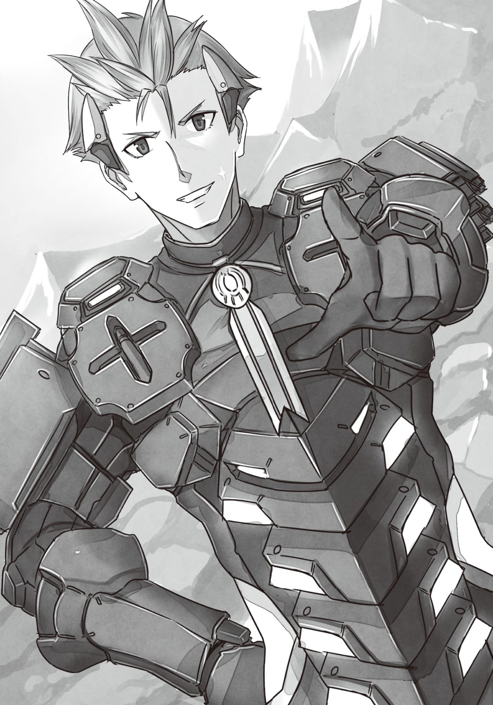
「えっと......どちら様でしょう？」
「俺は犀角鋼也。この班を担当するサポーターだ」
「あ、はい、今日はよろしくお願いします」
「おう、よろしくな」
志雄が一礼すると、一転して鋼也は気さくに笑った。いきなり何事かと思ったが、悪い人ではないのだろうか──などと志雄が考えている中で、鋼也は言った。
「──それはそれとして、お前に決闘を申し込む！」
「受けて立ちましょう！」
「いやちょっと日輪勝手に決めないで!?」
会話に乱入してきた日輪に志雄は思わず声をあげた。
「志雄、何を悠長なことを言っているのです。記念すべきライバルの一人目ですよ。率先して叩き潰し、これから歩む覇道の入り口に添える花としましょう」
「いやいやそんな道を歩く気はないから！ そもそもどうして僕が決闘を挑まれるのさ！」
「その点については既に見当がついています。犀角といえば獅子神分家の一つ。昔、挨拶に来たことがあるのも思い出しました。彼は間違いなく犀角家の嫡男です」
「いかにも。お目にかかるのはこれで二度目になるな、獅子神の姫君」
恭しく一礼する鋼也。日輪は自信に満ちた動作で頷いた。
「獅子神分家の人間で、あえて志雄に決闘を挑むとなれば、理由は一つ。──すなわち、武を以て私と志雄の結婚に異議があることを示そうというのでしょう？」
「いや、そういう意志は全く無いが」
「............」
「な、何ですか志雄その眼は。少し勘違いしただけではありませんか。あ、どうして頭を撫でるのですか！ やめ──いえやっぱりもっと撫でてください！」
「続けていいだろうか」
「あ、どうぞ」
鋼也は一度咳払いをすると、日輪の髪を手で梳く志雄に言った。
「俺はお前をよく知らん。が、お前を選んだ姫君は、獅子神の歴史において比類なき才気と大器の持ち主だ。色恋で曇る程度の眼でもあるまい。ならば、その眼鏡に適った男がまさかなまくらであるはずがないだろう」
「ほほう、解っているではありませんか」
日輪は得意げな顔で頷いた。
「それじゃあどうして決闘なんて？」
「どうしてなどと、それこそ愚問だ。強者と武芸を競いたいと願うのは獅子の血の本能。──まして、伝え聞くお前の噂が本当ならば猶更だ」
「......」
「お前たちが入学して三日経った。そちらも落ち着いた頃合いだろう」
ゆえに決闘を望む──。
そう言って、血の昂ぶりのままに鋼也は笑った。
なるほど、と志雄は納得を得る。実に獅子神的な考え方だ。そういうのは嫌いではないので、受けるのは吝かではないのだが──などと考えていると、横合いからおずおずと鈴と霧子の声がかかった。
「あのー、センパイ......盛り上がってるところ悪いんだけどー」
「そろそろ幻海に潜るべきじゃないかしら」
言われて周囲を見てみれば、他の生徒たちはこちらをジロジロと見つつも幻海に向かって降りていく。教官の方を見ると、はよ行けとばかりにぞんざいに手を振っていた。
「......少々熱くなりすぎたな。確かに、今優先すべきは演習の方だ」
「じゃあ決闘については、終わってからってことにしましょう。──皆、行こうか」
志雄の言葉に一同は頷き、周囲の生徒たちと同じように幻海へと足を向けた。
待ち受ける先では、霧の海が静かに風に揺れている。
◆◇◆
「うわぁ────」
幻海の中に足を踏み入れた八城鈴は、そこから見える周囲の景色に感嘆の声を漏らした。
「ここが幻海の中なんだ」
そうは言うものの、草木と地面と少々の岩肌があるだけの、何の変哲もない場所だ。違いがあるとすれば、幻素の霧によって一キロメートル程先は白く染まって見えなくなっている点か。しかし初めて幻海に足を踏み入れた鈴にとって、ここは未知の世界そのものだ。興味に突き動かされるままに辺りを見回している。──とはいえやはり不安もあるのか、常に霧子の傍を離れようとしないが。
「......思ったより、山上と変わらないのね。少し空気の感じが違うように思うけど」
鈴と同じように景色を見つめる霧子に志雄は頷いた。
「空気の違いは、幻素によるものだね。でも山上との差はそれの他には幻獣ぐらいかな。ただ、その差が大きくもあるんだけど」
本来、幻素は人体にとって有害だ。濃度にもよるが、何の備えもないただの人間が幻海に入れば、一時間とかからず死に至るほどである。
しかし魔装士の素質を持つ者は、先天的に幻素に強い耐性を持っている。だからこそ志雄たちはこうして幻海の中を歩けるのだ。
「幻獣......やっぱりいるのかな？ この辺りにも」
幻獣という単語を聞いて不安が煽られたのか、鈴は声のトーンを落としながら言った。
「いますよ。というより分類上、幻海の生物は全て幻獣です。たとえば、足元の雑草とかも」
「うぇ!?」
鈴は慌てて飛びのき霧子の背後に隠れた。そして恐る恐る肩越しに雑草を見やる。
「......嚙みつかない？」
「嚙みつきませんよ。教官も言っていたでしょう。この地域に危険な幻獣はいないと」
苦笑する日輪。霧子は鈴を背中から引きはがしながら言った。
「確か幻獣は、危険度によっていくつかに分類される──だったかしら？」
「その通りだ」
答えるのは鋼也だ。
「主に下位の【口伝級】、中位の【伝承級】、上位の【伝説級】と分けられている。状況や相手の数にもよるが、口伝級ならば戦技魔装士として訓練を積んだ者ならばまず倒せる。しかし伝承級となると単独で撃破は難しい。伝説級ともなれば、一流の戦技魔装士が徒党を組んで挑む対象だな」
だが、と続ける。
「付け加えるならさらに二つ、カテゴリーが存在する。そのうちの一つが【失伝級】だな。未分類の幻獣や、危険性の低い幻獣などがここにあてはめられている。こういった無害な草木などがまさにそうだ」
じゃあもう一つは？ と。
何気なく訪ねようとしたその時、鈴はその呟きを耳にした。
「──【神話級】」
ぞわり、と背筋が震えた。
声は前を行く志雄のもの。だが、普段の穏やかな彼からは想像もできないほど、今の声には強い決意と気迫が込められていた。心なしか、彼の周囲からひりつくような空気さえ感じられて。
「志雄」
日輪の声が、凛と響いた。
途端、志雄の周りの空気が緩んだ。
「全く、そう無暗に気を張り詰めるものではありませんよ」
「ごめん、つい」
そう言って日輪の方を見る彼の横顔はいつもと変わらない、穏やかな明るい表情。
──いや、一つだけ違った。
（......眼が、赤い？）
光の加減だろうか。志雄の瞳に赤みがかかって見えた。確か彼の瞳は黒かったはずだが──
「八城、どうかしたか？」
「あ、いえ、なんでもないです！」
鋼也の声に鈴は我に返った。改めて見れば鋼也も霧子も様子に変わりなく、さらにこちらを見つめる志雄の瞳も黒いままだった。
（ちょっと疲れたのかな......？）
釈然としない気持ちはあるものの、一連のことは錯覚か何かだったのだろう。そう鈴が納得したところで鋼也が続けた。
「体調が悪ければ早めに申告するんだぞ。──でだ、もう一つは神話級といってな、かつてこの星で猛威を振るい人類を追い詰めた、七体の幻獣に与えられたカテゴリーのことだ」
「人類を追い詰めた......本当にそんなのがいるのかしら？」
「正確には、いた、だな。二百年ほど前を最後に、その姿は七体とも確認されていない。恐らくは死んだと言われている」
「......死んだと言われてる、か」
誰に言うともなく志雄が呟いた。
それに気づかず、とはいえ、と鋼也は続けた。
「神話級以外の幻獣は実在している。そして普段は幻海に暮らしているが、何かにつけて山上に現れては人を襲う。だからこそ、幻獣と戦う戦技魔装士が必要なわけだ」
うむうむ、と自分の言葉に頷く鋼也。そんな中、話題を切り替えるように日輪が言った。
「それで、目標のフラッグはどこにあるのでしょう？」
「ああ、この班の地図はこれだ」
鋼也が取り出した地図を日輪は受け取り、一通り眺めてから頷いた。
「......なるほど、あの場所に私たちの目標はあるようですね」
日輪はなだらかな山肌を降りた先の麓を指差した。
そこは瓦礫が広がる一帯だった。注意深く見てみれば、それが元は街の一角だったことが窺える。かつては隆盛を誇った人類文明の名残だ。
「街の跡地......幽霊でも出てきそうね」
「や、やめてよ霧子、私そういうの苦手なんだから。怖いのは幻獣だけで十分だよ」
「安心しろ。去年聞いてみたが、これまでに出たという報告は無いそうだ」
それに、と鋼也は胸を叩いた。
「何かあったら任せるといい。そのために上級生である俺がついているわけだからな」
「おお、頼りになるねセンパイ！」
「当然だ。俺は獅子神の一族だからな。──ともあれ、先導はお前たちがしてくれ。俺はあくまでサポートだ」
鋼也に促され、志雄と日輪が先頭を行く形で、一行は廃墟に向けて歩き出した。
麓までおよそ二百メートル。何でもない緩い傾斜の道のりを進み、やがて到達したそこは──文字通りの廃墟だった。
廃墟といっても、ほとんどが瓦礫の塊だ。形を保っている建築物など数えるほどで、それも壁はひび割れ、崩れかけた窓枠からは虚空が覗いている。長い風雨に晒され朽ち果てた結果がこれなのだろう。さらに草木によって浸食されているため、元の面影はほとんど感じられない。
「うっわー......夜だったら本当に幽霊でそう」
「ここが数百年前、人が住んでいた場所......」
鈴は若干怯えつつ、霧子は興味深げに廃墟を見渡す。
「この辺りは街の居住区だった場所らしい。見ての通り地上には残骸が広がるばかりだが、地下に道や居住空間が張り巡らされていてな。たとえば、あれがその入り口の一つだ」
鋼也が指差した場所には、地下へと続く崩れかけの階段があった。覗いてみれば、中は光の届かない暗黒で満ちている。漏れ出す地下の冷気が僅かに首筋を撫でた。
「大災禍による混乱は幻獣とともに人間同士の争いも生んだ。これはそういったものからの避難設備だとされている。まあ大半は崩落して通れなくなっているが、未調査の場所もあるらしいな」
現在全世界の標高三百メートルまで届く幻海だが、最初からこの高さまで発生したわけではない。どこからともなく発生する幻素が現在の高度に至るまでには、二百年ほどの時を要している。その間に人類は幻素に対抗するため、あるいは逃れるために様々な手段を模索したのだ。
「もしかして、旗も地下道にあったり？」
鈴が問うと鋼也は頭を振った。
「いや、崩れる危険のあるところに新入生を差し向けられんよ。むしろ俺たち上級生は、そういう場所に入らないよう見守る役目の方が強い」
「私たちの旗は、しばらく真っ直ぐ進んだ後、左に曲がった先の建物にあるようですね」
「あーよかった。こんなところ入るなんて怖すぎだよ」
「そうかしら？ 私は中を見てみたいけど」
鈴と霧子がそんな会話を繰り広げる横で。
志雄は階段の入り口に片膝をつき、真剣な眼差しで階段を見つめていた。
「............」
「志雄？」
日輪の窺うような問いかけに、志雄は小さく答えた。
「この演習、手早く終わらせた方がいいかもしれないな」
日輪の眼が鋭さを増した。
「......解りました。そのつもりでいましょう」
お互い剣杖に手をやりながら頷き合う。そこに鋼也の声がかかった。
「二人とも、そろそろ行くぞ」
鋼也に促され、全員は街の中に踏み入った。
外観の印象から外れることなく、街の中は荒れ果てていた。アスファルトが敷かれていた地面は割れ砕け、半ば土砂と植物に埋もれている。それでもどうにか判別できる道なりに歩き、言われた通りに左に曲がったところで、崩れかけたビルが目に入った。
一同はビルの手前に歩み寄る。元々は何階建てだったのだろうか。天井が崩落しているため全容は不明だが、四階部分までの外壁は残っている。そして、二階の窓際に揺れる旗の姿があった。
「あの旗が目標ですね」
「ねえ、このビル、今にも崩れそうなんだけど......」
「安心しろ。毎年演習で使っていると言っただろう。危険がないよう、実は所々で補修がしてある。大暴れしない限りは問題ない」
鋼也の言葉に、なーんだ、と拍子抜けする鈴。
「それじゃ、早速旗を取りに行こうよ」
そう言うと鈴はいの一番にビルの中に入ろうとして──
「鈴さん、下がって！」
日輪の叫び声が響き、刹那、ビルの中で何かが動いた。
あ、と鈴の喉から声が転がり落ちる。眼前、何かが窓枠から飛び出すと、鈴に向かって一直線に迫りかかり──
「させん！」
身を割りこませた鋼也の剛槍が何かを弾き飛ばし、同時にその背後、鈴の体を摑んだ志雄が即座に彼女とともに後方に飛びのいた。
「鈴っ！」
「霧子さんもこちらへ！」
焦燥の声をあげる霧子を、既に刀を鞘から抜いた日輪が警戒しながら後方に下げる。その迅速な行動に鋼也は感嘆した。
「良い判断だ。全員そのまま動くな。俺が対処する」
後顧の憂いが必要ないことを確信し、鋼也は眼前の敵に集中する。
それは奇妙な生物だった。全長は三メートルほどか。肉体は厚い鱗に守られ、裂けた口元からは鋭い牙が覗く。眼差しは厳しく、尻尾は太くしなやか。四肢の爪は容易に人体を引き裂けるだろう。そして何よりも、その全身を守るように赤熱する炎を纏っていた。
「......サラマンダーか。まさか、ここで口伝級と出くわすとはな」
「グルァ────！」
対峙するサラマンダーが吼えた。その肉体を丸く車輪のように丸めたかと思うと、全身から炎を吹き出して鋼也目掛けて突進する。
「詠唱──！」
鋼也は槍を構えた。槍の表面に幾何学文様を描く光が駆け抜ける。
「岩砕穿孔！」
鋼也の咆哮とともに、槍の先端から衝撃波が放たれた。
爆発的速度で迫るサラマンダーはその直撃を浴びると弾き飛ばされ、ビルの外壁に叩きつけられた。鋼也はさらなる追撃を重ねるべく槍をサラマンダーへ向け──
「むっ!?」
次の瞬間、ビルの陰から二匹目のサラマンダーが飛び出した。車輪の姿となり一直線に鋼也へ迫る。槍の対応は間に合わない。鋼也は即座に判断した。
「詠唱・大波鳴動！」
鋼也の纏う全身の装甲に光が走り、今まさに激突せんとしていた二体目のサラマンダーが、戦殻から全方位に放たれた衝撃波によって吹き飛ばされた。
成す術もなく地面に叩きつけられたサラマンダーを、素早く肉薄していた鋼也の槍が容赦なく貫き命を奪う。さらに鋼也は槍を振り回すと、衝撃から立ち直ろうとしていた一体目のサラマンダー目掛けてその剛槍を投げ放ち、ビルの壁に磔にした。
「──これで二体」
素早く槍の元へ向かい、引き抜く。サラマンダーの肉体が地面の上に崩れ落ちた。そこに命の灯は存在しない。二体の幻獣が息絶えていることを確認し、さらにビル周辺を一瞥した後、鋼也は槍の構えを解いた。
「終わったようだな」
振り向けば離れた場所で四人固まる新入生たちの姿。全員ケガ一つないようだが、手早く旗を回収し、戻った方がいいだろう。そう思い、四人の元に歩み寄ろうとして──
「そこから離れて！」
志雄の叫びが届いた瞬間、階段から足を踏み外したかのような感覚が鋼也の全身を駆け抜けた。
何が──驚愕に染まる思考が足元へと視線を誘導し、目に映ったものは今まさに崩落しようとしている大地と、その下に見える大きな空間。
そして、自分へ迫る巨大な岩のだった。
衝撃音とともに、鋼也の体が上空に吹き飛んだ。
「え────」
突然のことに理解が追いつかず、鈴が啞然として見つめる中、鋼也は放り投げられた小石のように宙を回転し、固い地面に叩きつけられる。
そこで鈴はようやく鋼也が何者かに攻撃を受けたのだと理解し──それを見た。
彼女の眼に映ったのは、巨大な石像の幻獣だった。
全長六メートルはあろうか。地面の中から這い出してくるその姿は、動く岩山そのものだ。人と同じ四肢を持ち、分厚い胴体はそれだけで途方もない威圧感がある。そして頭部の濁った眼は、倒れ伏す鋼也のことを見下ろしていた。
「なに、あれ......」
感情の消えた声が鈴の唇から零れ落ちた。あまりにも現実離れした光景に、恐怖を抱くことすら叶わない。そして鈴が呆然と見つめる中、巨人はを振りあげる。人間の全身と同じほどの大きさがある石の。あれを人に叩きつければどうなるか、想像するまでもない。
何かしなくては、と鈴は思った。同時に、何もできない、と悟った。鋼也を助けることも、巨人を止めることも、奇跡を祈ることすら間に合わず、無情にもが振り降ろされ──
「──暴風の刃」
場違いなほど澄んだ声が、その場に響いた。
直後、風を切るような音が走り、振り上げられた幻獣の腕が何かに弾かれる。
たたらを踏む石の巨人。踏みとどまった後、濁った瞳を鈴たちへ向ける。
その視線に応じるようにして前に踏み出すのは一人の少年。己の何倍も大きな怪物に対して、彼の足取りに迷いも恐れもなく。
いや、それどころか。
彼が踏み出す間際、鈴の目に映ったものは。
「ここから先は──僕たちが相手だ」
今まで見たこともない苛烈な笑みを浮かべながら、御霊志雄は剣を構えた。
◆◇◆
危険な幻獣がいるかもしれない。
地下道への階段に幻獣の痕跡を見つけた志雄は、それが何かから逃げるような様子だったことから、そう考えていた。未調査の地下道もあるということから、どこからか強力な幻獣が紛れ込んだ可能性はありえる、と。もちろん杞憂であればよかったのだが──
（まさか、それが伝説級とはね）
伝説級幻獣、ダイダラ。それがこの巨人の正体。
本来ならば一流の戦技魔装士が徒党を組んで挑むべき幻獣である。
「さすがに予想外だったな──！」
瞬間、志雄は地を蹴った。同時に剣を薙ぐと風の刃が奔り、ダイダラに向かって襲い掛かる。
迫る風刃に向かってダイダラは腕を振った。硝子が砕けるような音が鳴り響き、風の刃は巨人の剛腕の前に打ち砕かれる。
だが、それが志雄の狙い。僅かに生まれた隙にダイダラの足元に滑り込むと、鋼也の腕を摑んでその場を飛びのいた。
一拍遅れて二人のいなくなった空間をダイダラの腕が薙ぎ払う。空気が唸り、余波で周辺の瓦礫の一部が吹き飛ぶのを横目に、志雄は素早く鋼也を後方の三人の元に運んだ。
「日輪、教官に連絡は？」
「済みました」
配布されていた連絡用端末を示す日輪。
「よし、それじゃあやろうか」
志雄と日輪は頷き合い、ダイダラに対して剣杖を構えた。
二人の剣杖はそれぞれが固有のものだ。志雄は二つの剣杖を持ち、右手には鮮やかな青い刀身の剣。左手には黒地に赤く彩られた銃が握られている。身に纏う漆黒の戦殻の中、二つの剣杖が鮮烈な存在感を放つ。
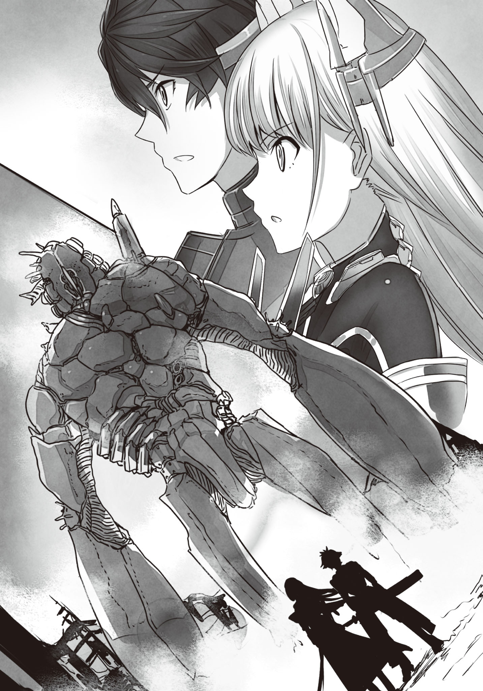
対して日輪は白と赤を基調とした戦殻を纏い、手にする剣杖は一本の長刀。鞘から抜き放たれた刀の輝きは、戦慄すら感じられるほど冴え渡る。その白刃を凛とした佇まいの中で構える姿は、彼女こそがこの刃に相応しい担い手であることを示していた。
「ま、待て！」
そして二人が踏み出そうとした時、声を張りあげるのは苦痛に顔を歪ませる鋼也だった。ダイダラの一撃によって吹き飛ばされた彼だが、まだ意識は保っていた。
「まさか、あれと戦うつもりか......!?」
「逃げることも可能ですが、そうなるとあれが他の訓練生の元に向かいかねませんから」
「そんなの無茶だよ！」
鈴も思わず異を唱える。
「だってあんな大きいんだよ!? それに──」
言いかけて、鈴は気づく。鈴だけではない。彼女の横で青ざめていた霧子も、激痛に耐える鋼也もそれに気づいた。
志雄の瞳。本来ならば黒いはずのそれが、紅蓮のごとく赤く染まり、それでいて氷よりも冷たい輝きを放っていることを。
「日輪」
三人の視線を意に介さず志雄は言った。その声は普段の彼からは想像もつかないほど酷薄で、鋭かった。
「いつも通り、丁寧にいこう。──五分で仕留める」
日輪は微笑んだ。
「では、そのように」
二人は地を蹴った。
止めようとする声を振りきって、白と黒の軌跡が瞬く間にダイダラまでの距離を詰める。
ダイダラのが唸った。全てを砕く必殺の剛。狙われたのは僅かに前を行く日輪。瞬時に右に回避した日輪の真横をが貫き、地面をえぐる。吹き飛ぶ土砂。その間隙を縫うのは数瞬遅れて日輪に続いていた志雄。地面に突き刺さったダイダラのから腕を伝って一気に肩まで駆け上がる。
「────シッ！」
火花。肩からダイダラの背後へ跳躍しながら、すれ違いざまに頭部を狙った青の剣は、しかし分厚い装甲を前に弾かれる。固い──だが、意識はこちらに向いた。そう思った時、ダイダラを挟んだ反対側で、日輪の気配が膨れ上がるのを志雄は感じ、回避行動に移った。
「詠唱・轟雷千尾」
紫電が奔った。日輪の太刀から魔力で編まれた雷気が溢れ、鞭のような形状に。さらに鞭は根元から幾重にも枝分かれし、瞬く間に全長十数メートルの長大にして無数の雷鞭となる。
「詠唱・獅王戦陣」
続いて戦殻の表面に光が奔り、同時に日輪が剣杖を振るった。無数の雷鞭がダイダラの手足に絡みつく。
「まずは、皆さんから少し離れてもらいましょう」
言葉にすると同時に、魔術によって強化された日輪の両足が地面を砕き、雷鞭を摑む両腕に莫大な力が漲る。
「せぇ────のっ！」
次の瞬間、ダイダラが宙を舞った。
雷鞭を摑んだままその場で一回転した日輪に、ダイダラの巨体が引きずられる形で浮かび上がり、生じる途方もない遠心力を抱えたままダイダラは廃ビルへと放り投げられた。
ダイダラの直撃を受けた廃ビルが轟音とともに崩壊。なお勢いは留まらず、巨人は廃墟となった街を破壊しながら転がり続ける。そして数百メートルほど荒れ地を生み出したところで、ようやくダイダラの回転は止まった。
「な、なんだあの魔術は......!?」
戦慄を隠すこともできず、鋼也は呻くように言った。
魔術は強力なものほど扱いが難しく、また必要魔力も膨大になる。あれほどの魔術となれば鋼也では発動させることすらできず、できたとしてもまともに使えないだろう。
だというのに彼女は、今もなお雷鞭の発動を維持したまま、己の手足のごとく操っている。
（あれが獅子神の至宝！ 王者の末裔、獅子神日輪......！）
目を見張る鋼也の視線を背中に受けながら、日輪は巻き込まれない位置に退避していた志雄の傍に立った。
「相変わらずダイダラは頑丈で面倒ですね。外殻にヒビも入っていませんよ」
立ち上がろうとしているダイダラを見る日輪。志雄は剣の刃を確かめながら言った。
「本当にね。しかも、あれで幼体ときてる」
ダイダラは成体ならば全長十メートルにはなる。対してあのダイダラは一回り小さい。だからこそ地下道に入ってこんな場所に出現できたのだろうが──
「まあ、僕らと出会ったのが運のツキだ」
ダイダラが立ち上がった。その眼には強烈な怒りの色が浮かぶ。全身に傷らしい傷もなく、戦意が折れた気配はない。
「オオオオオオオオオオオオオオ！」
大気を打ち崩さんばかりの咆哮。距離を置いてなお心胆まで響く雄叫びに鈴と霧子は身を震わせるが、志雄と日輪はそよ風を浴びているかのごとく動じない。
「志雄、二分が過ぎました」
「それじゃあ、詰めに行こうか」
二人は地面を蹴って駆け出した。前を行く志雄。その後ろに日輪がつく。ダイダラが両手を打ち鳴らす。迎え撃つ態勢。彼我の距離は二百メートル。
「詠唱──」
志雄の戦殻に光が走った。
「嵐帝領域！」
瞬間、志雄の背後から燐光が噴出し、肉体が加速する。二百メートルの距離を瞬く間に踏破。ダイダラの手前で跳躍し、巨人の眼前へと一気に迫る。
その恐るべき速度に、しかしダイダラは反応する。迎撃すべく放たれた石のは狙い違わず志雄へ向かう。身動きの取れぬ空中。激突は不可避の状況。そして衝突する刹那──志雄の肉体が、残像を残して真横へと回避した。
ありえぬ動きにダイダラの眼が驚きに歪む。狙い澄ました志雄の刺突がその眼に迫る。咄嗟に身を る巨像。風を纏う刃が巨人の頰を掠めた。
る巨像。風を纏う刃が巨人の頰を掠めた。
「オオッ────」
ダイダラが両腕で眼前を薙いだ。しかし既に志雄の姿はない。あろうことか、彼はダイダラの間合いから僅かに外れた空中に浮かんでいた。
「噓、あれって」
「......飛んでるわね、彼」
呆然とする鈴と霧子の横で、鋼也も絞り出すように言った。
「飛行系魔術......〝金杖〟の戦技魔装士でも使える者の少ない、最高難易度の魔術だぞ......!?」
こと戦いにおいて高所を制することの優位性は語るまでもない。ゆえに飛行系魔術は古くから研究されているが、未だに空中で姿勢を維持することさえ出来る者は稀という有様だ。まして戦闘状況下で自在に飛び回れる者など、世界中を探してどれほどいるか。
（あの噂は正しかったというのか......！）
思い出すのは先日耳にした、志雄と日輪が結婚する際に起きた出来事。
犀角家は参加しなかったが──曰く、志雄と日輪が結婚するにあたって、多くの分家が反対した。特に適齢の男子がいる家は自分たちの子の方が相応しいと声高に主張し、そうして擁立された候補者は百人近くまで膨れ上がったという。
それを、御霊志雄は黙らせた。
言葉ではなく、実力で。
獅子の血は強者を尊ぶ。
彼は送り込まれた百人近くの候補者を、たった独りですべて打倒して見せることで、自分が最も日輪に相応しい男であることを証明したのだ。
（だが、まさかこれほどとは......！）
そして鋼也が思いを巡らせている間に、状況は志雄たちの優位に傾きつつあった。
志雄は牽制と回避を繰り返し、その隙を狙ってダイダラの間合いの外から雷尾で攻撃する日輪。日輪を狙おうとすれば志雄が空中を飛び回って牽制をし、志雄を狙おうとすれば横合いから日輪の雷鞭が邪魔をするという隙のない布陣だ。
ただし、志雄と日輪の攻撃には決定打が無かった。ダイダラの外殻は分厚く、ダメージは殆ど無い。もちろんそれを志雄と日輪は理解している。二人の狙いは別の場所にあった。
（たとえダメージはなくても、手も足も出ない一方的な展開で平静を保つのは難しい。まして相手は幼体。──そろそろ動くな）
志雄がそう思った瞬間、ダイダラの眼に強い意志が灯った。
「オオオオアアアアアアアア！」
雄叫びとともにダイダラは縦横無尽に腕を振り回した。その圧力と突風に煽られるようにして志雄は上空に逃げる。距離が離れた。これが目論見。この好機を逃すまいとダイダラは日輪を狙ってを振りかぶる。
だが。
「それを待っていました」
ダイダラが必殺の右ストレートを放った。日輪が動く。流れるような体捌き。火花。戦殻の表面をが掠める。紙一重を見極めた回避。ダイダラが目を見開き、そして日輪の前には無防備に晒される巨像の胴体。
「轟雷千尾──雷霆剣！」
枝分かれした雷鞭が束ねられる。その姿はさながら巨大な獣尾のごとく。迸る雷気が大地を焼き焦がす中、下段から上段へと振りぬかれた雷剣の一撃が巨人の胸部外殻を撃ち砕き、さらにその巨体を空中へと打ち上げた。
上空へ舞い上がるダイダラ。衝撃に意識を搔き乱される中でダイダラが見たものは──虚空で待ち受ける志雄の姿。
「詠唱」
カツン、と。
ダイダラの体が上昇速度を失い、重力に引かれて地上へ落ちようとする刹那の停滞において、志雄はその胴体に着地し、装甲の砕けた胸部へ銃を向けた。
「──紅蓮戦哮！」
銃口より巨大な炎の槍が放たれた。
槍は一瞬にしてダイダラの胸から背中まで貫き、さらに勢いのまま幻獣を地上に叩き落とす。その衝撃に大地が震え、ダイダラは地面にめり込んだ。
「何という......！」
飛行系魔術を使いながらのあの威力。もはや驚愕する他にない鋼也だったが、さらに彼は目を見張る。もがくようにして腕を虚空へ向けたダイダラに、一切の容赦なく、十を超える炎槍が空から降り注いだのだ。
動きを鈍らせたダイダラの隙を逃さず、槍は恐るべき威力と精度で装甲の薄いダイダラの関節を貫き、地面に磔にする。そして巨人が身動きできなくなったところで、再びダイダラの上に志雄が降り立った。
その手に構えるのは青の剣。ダイダラの眼に宿るのは、生涯初めて抱いたであろう、恐怖という感情。
「──ジャスト五分だ」
風を纏う刃がダイダラの胸に突き刺さり、その心臓を貫いた。
◆◇◆
「......倒しちゃったね」
「......ええ」
目の前の光景に、鈴と霧子はただただ呆然としていた。
絶対に勝てるわけがない、絶望そのものだった幻獣。
しかしその幻獣は倒された。
御霊志雄と御霊日輪。あの二人によって。
「凄まじいな......」
鋼也もまた、痛みを忘れて驚嘆する他なかった。まさか本当に伝説級を倒してしまうとは。
「お待たせしました」
「三人とも、無事みたいだね」
戻ってきた志雄と日輪はまるで散歩帰りのような様子だった。志雄の瞳が黒く戻り、雰囲気が柔らかくなっていることに鈴は気づいた。
「それで、どうしますか志雄」
「まずはこの場で負傷者の応急処置だ。ダイダラが一体だけとは限らないから、それが終わり次第移動しよう。──鋼也先輩もそれでいいですよね？」
「あ、ああ、異論はない。だが......」
言いよどむ鋼也に二人の視線が向く。
「いや......伝説級を倒したというのに、随分と落ち着いていると思ってな」
ああ、と志雄は頷いた。
「ダイダラは何度も倒したことがありますから」
「夫婦という最強の絆で結ばれた私と志雄ならば当然の結果です。むしろあの程度にてこずるようでは、私たちの愛が疑われてしまいますよ。そうですよね、志雄」
「その場合は、愛よりもトレーニングメニューの見直しが必要だね」
何事もなかったかのようにじゃれあう二人を見て、鋼也の背筋は粟立った。自分より年下のこの二人は、果たしてどれほどの修羅場を潜ってきたのか。自分を一撃で戦闘不能にしたダイダラを討伐することが、二人にとってはよくある些事でしかないのだ。
（赤子の手をひねるように伝説級を......果たしてこの二人の実力はどれほど......）
慣れた手つきで自分の戦殻を脱がし応急処置に入る志雄と日輪を、鋼也は呆然とした眼差しで見つめるしかなかった。
その後、移動している最中に応援とともに駆けつけた教官と合流し、演習は中止となった。
他の訓練生たちも無事に帰還し、伝説級幻獣の出現という大きなトラブルをして、負傷者が一名出たのみという結果ですんだことに、関係者たちは安堵の息を吐いた。
同時に、伝説級を倒した志雄と日輪の名は、学校の内外に急速に広まっていくこととなる。
◆◇◆
「──疲れた」
中天に月が輝く時間帯。
学校に戻った後、ダイダラと遭遇した状況から討伐まで事細かに聴取され、それがようやく終わって寮室に戻った志雄は、着替えもせずにベッドの上に身を投げ出した。
「なかなか波乱の一日でしたね」
日輪の声にも疲労が滲む。とはいえその原因の多くはダイダラとの戦いよりも、その後の説明に追われたためだが。
「しかし被害が軽微だったのは幸いでした。犀角の嫡男も命に別状は無いそうですし」
志雄は頷いた。話に聞く限りでは、他にも口伝級を目撃した生徒たちはいたらしい。ただし無理に戦うような真似は誰もせず、結果として負傷した人間は鋼也のみで収まった。その鋼也も全治一週間ほどで心配ない。
他の口伝級もダイダラに追われていたのか、あるいは別の理由があるのか──それは学校の方で調査するだろう。今はただ死者が出なかった幸運を喜ぶだけだ。
「それにしても、入学早々伝説級と戦う羽目になるとは思わなかったよ」
「ですがいい機会でした。この一件で私たちの強さは一気に知れ渡りましたよ」
「確かに、これだけ目立てば否応なく僕らの評価には影響があるだろうね」
「〝銀杖〟以上で卒業すれば、対策局も放っておかないでしょう。そうすれば──」
ああ、と頷いた。
「──神話級に、一歩近づく」
その称号は、かつて地球上で猛威を振るった幻獣に冠せられたもの。
〝氷穹大公〟フェンリル。
〝破滅の呼び声〟ウルリクムミ。
〝無幻斬華〟蚩尤。
〝天を征く影〟バハムート。
〝太陽の心臓〟フェニックス。
〝永劫水晶〟ヴリトラ。
〝魔禍月〟アバドン。
人々は語る。この七柱の幻獣こそが神話級であると。
また同時に、今は無き過去の存在だとも。
だが志雄は知っている。神話級は過去のものになどなっていないことを。
なぜならば六年前に体験したからだ。多くの幻獣を引きつれた〝魔禍月〟アバドンによって、自分のいる御霊家の魔術研究所が襲撃されるのを。
そして目撃したからだ。職員たちを惨殺し、そして自分もまた殺されそうになったところで、未完成の魔術を用いた両親がアバドンと刺し違えたところを。
ならばきっと、残る六柱の神話級もまた。
「......対策局には、大災禍の初期から収集された膨大なデータがある」
全てが終わった時、生き残っていたのは自分のみ。
「その中に、一部の人間しか知りえない、秘匿された情報が存在する」
何もかも奪われた自分に遺されたのは──一つの使命。
「残る六柱の【神話級】のデータ。それを手に入れれば、舞台が整う」
「──必ずこの手で、全ての神話に終止符を打つ」
それこそが幼き日、己が灯した誓いと決意の炎。
炎は、今もなお志雄の赤い瞳の中で燃え続けている。
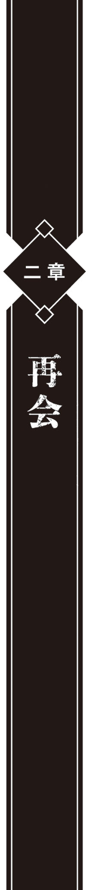
息が苦しい。
肺が今にも破れそうで、全身から届く激痛が肉体の限界を告げている。
心臓が脈打つたび、体中の傷口から血液とともに熱が外へと逃げていく。両腕は鉛のように重く、震える両足は今にも崩れ落ちそうだ。
それでも必死になって体を支え、朦朧とする意識の中、顔をあげる。
そこには、死があった。
血に塗れ、倒れ伏せる人々。もはや命の灯が失われた彼ら全員を、自分は知っている。
歴史を語るのが好きな職員がいた。その全身は切り裂かれ、真っ赤に染まっていた。
いつもお菓子をくれる老練の研究者がいた。彼の右半身は食いちぎられていた。
必ず〝金杖〟になると豪語する若い戦技魔装士がいた。胴体を穿たれた青年の頰には涙の跡があった。
そんな青年の夢を頼もしいと笑う熟練の戦技魔装士がいた。剣杖を握ったまま事切れている男の顔には、言い知れない苦渋が刻まれていた。
「────」
死んでいる。
誰も彼もが死んでいる。
昨日まで生きていた人たちが、笑い合っていた人たちが、仲間だった人たちが。
「あ────」
そして見る。見てしまう。おびただしいまでの死の中心を。
そこに、闇があった。
轟々と荒れ狂う漆黒の闇が。
まるで死そのものであるかのような禍々しさ。
およそ人の身で立ち向かえる存在ではないと、誰もが一目見て理解するだろう。
だというのに──その闇の前に、立ちはだかる二人の男女。
「ああ────」
縋るように伸ばした手は、届かない。
その手で摑むには、あの場所はあまりにも遠く。
ただ、膨れ上がった闇が二人を呑み込む刹那、二人はこちらを振り向いて──
「父さん──母さん────！」
そして夢は終わりを告げる。
◆◇◆
不意に、意識が覚醒した。
横たわっていた体を起こし、志雄は軽く頭を振る。
寮室。夜明け前。ベッドの中。状況を順に頭の中で確認し、最後に残るのは目覚める前に見ていた夢の景色。
「......いつ見ても、この夢は変わらないな」
過去の夢を見たからだろう。脳裏で記憶の本がめくられる。
一番古いものは、ぼんやりとした明かりの中に浮かぶ、何人もの大人の影。
そんな記憶とも言えないような、おぼろげな断片をいくつか経た後、出てくるのは両親が運営する研究所に連れてこられ、そこで働く人々たちと過ごした日々だ。
両親は研究者として多忙な日々を過ごしていた。ろくに会話もできない日もあった。けれど寂しくはなかった。研究所での時間は何よりも楽しく、賑やかで、優しかった。
両親に見せてもらう研究の成果、研究員たちから教わる数多の知識、出入りする戦技魔装士が語る世間の様子や幻獣との戦い方。毎日のように新しい発見があり、その技術や知識を吸収するたびに皆が喜んでくれて、それがとても嬉しくて。
あの場所が好きだった。彼らと一緒に過ごすのは心が躍った。
いつか彼らと肩を並べたいと、そう思っていた。
だが──そうはならなかった。
六年前のあの日に起きた惨劇。その光景は今も色褪せることなく、こうして夢という形で時折志雄に訴えかける。あの日の苦しみと、怒りと、涙を忘れるなと。
「............」
「──志雄」
呼び声に目をやれば、二段ベッドの上から覗き込む日輪の顔。窓から差し込む僅かな月明かりに照らされて、碧い瞳が淡く輝いている。
「ごめん、起こしちゃった？」
「必要な睡眠は取りましたから。それより、昔の夢ですか？」
「ああ......まあ、いつものだよ」
日輪には時折見るあの夢のことを話してある。ゆえに日輪はそうですか、と少しだけ痛ましげに頷き──それから一転、強気な笑みを浮かべると滑るようにして上段から降りて志雄の隣に腰掛けた。
「全く、いけませんね志雄は。どうせなら私との夢を見るべきです」
「なかなか無茶な要求をするね......」
「たとえばそう、私が幻獣に囲まれているところに助けに入る夢とかどうでしょう」
「......」
試しに想像してみると、助けるまでもなく鮮烈に笑いながら幻獣を壊滅させる日輪の姿が浮かんだ。というか、そうなる未来しか思い浮かばなかった。
「あるいは、許されない愛の果てに私を連れて逃避行をする夢でもいいですよ」
「............」
試しに想像してみると、逃げるどころか邪魔をする敵陣に単騎で特攻して壊滅させる日輪の姿が浮かんだ。というか、自分が獅子神分家を黙らせなければ、そうなっていた気がする。
「どうしました志雄」
「いや、なかなか日輪の望む夢を見るのは難しそうだなと」
「むう、そうですか。でしたら──」
「日輪」
日輪の頰に手を触れる。金色の髪が指の間を滑らかに滑るのを感じながら、言った。
「ありがとう。少し、気が楽になったよ」
「......当然です」
日輪は志雄の手に自分の手を重ね、微笑んだ。
「私は志雄の、奥さんですからね」
「ああ、そうだね。その通りだ」
「──というわけで、今夜はこうやって寝ましょう」
そう言うと、日輪は突然志雄の頭を抱きしめた。
「ちょっ」
両腕で胸元に抱き寄せられるような形。必然、彼女の柔らかなふくらみが顔に当たる。筆舌に尽くしがたいその感触に、思わず志雄は声を上擦らせた。
「ひ、日輪？」
「志雄が眠るまで、ぎゅーっとしてあげますよ。そうすればきっと私の夢を見られます」
「むしろ眠れなくなる気がするんだけど......！」
「気のせいです。......あ、それといつでも私の胸とか触っていいですよ」
「いや触らないから！」
「大丈夫です、気づいていないフリをしますから」
「だから触らないっての！」
遠慮せずとも、と唇を尖らせる日輪。そうしながらも抱きしめる腕を解くことはしない。
どうやら本当に自分が眠るまでこのままでいるつもりのようだ。志雄は気恥ずかしさを感じながらも諦めて体の力を抜き、それに満足した様子で日輪は彼を抱きしめたままベッドに横たわった。
沈黙が場に満ちる。心地よい静寂。その中で感じるのは、日輪の体温と心臓の鼓動。
規則正しく刻まれる命のリズムを耳にしながら、志雄の意識はゆるやかに落ちていった。
（......眠ったようですね）
腕の中の少年が寝息を立てるのを見て、日輪は心の中で安堵の吐息を漏らした。
志雄は気づいていなかったようだが、日輪が見た時、彼の顔色は土気色をしていた。
しかし今はだいぶ落ち着き、顔色も戻っている。日輪は起こさぬよう静かに彼の髪を撫でた。
思えば、御霊家の研究所が襲撃されたと連絡を受けた六年前も、こうして彼を抱きしめたものだ。急いで駆け付けた先で目の当たりにした、無数の幻獣の死骸の中に立つ志雄の姿は、今でも鮮明に覚えている。そして、初めて彼を腕に抱いた感触も。
あの後も生存者の探索は続けられたが、結局志雄以外は全て死亡したと判断された。そして救出された志雄は本家である獅子神に引き取られたものの、当然ながら心の傷は深く、半ば動く死体のような有様だった。
立ち振る舞いに覇気は無く、およそあらゆる精彩が欠けており、時折その全身から迸る行き場のない怒りが、彼がまだ生きていることを示していた。
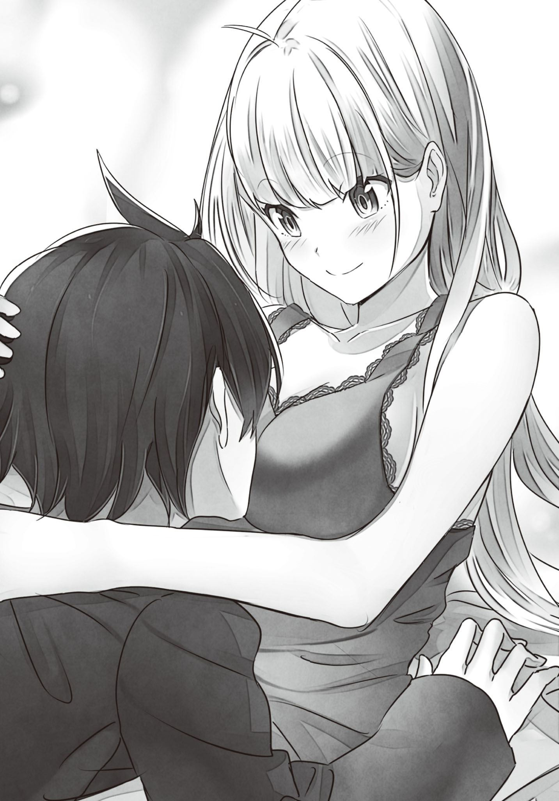
今でこそ人並みの明るさと穏やかさを取り戻したが、それでもこうして過去の記憶に苛まれ、あの頃のようになることがある。しかも決まって弱音を吐いたりせず、自分の中に抱え込もうとするのだ。生来の気質というべきか、志雄は何かと一人で思いつめる傾向がある。
（まったく、これだから志雄は）
日輪は憤然とする。自分たちは夫婦なのだからもっと頼ってくれていいのに、と思う。いやむしろ率先して頼るべきだ。なので、もっと頼れー、もっと頼れー、と腕の中の志雄に念じてみると、志雄の喉奥からうなされるような声がした。むう、また悪夢に囚われているのだろうか。
（やはり私がしっかり支えなくてはいけませんね）
決意を新たに、日輪は指先で志雄の髪をくりくりといじる。まだまだ思う所はあるが、こうして最も無防備な姿を晒してくれるほど、志雄は自分を信頼してくれている。ならば自分はそんな彼を誠心誠意支えよう。
「おやすみなさい、志雄」
小さく囁いて、日輪は目を閉じた。
彼の夢を見られるだろうか。そんなことを想いながら。
◆◇◆
「一般的に、魔装士になれる素養を持つ者は第二世代と呼ばれている」
新入生が集まる教室において、教官の一真はテキストを片手に声を張りあげていた。
ダイダラが出現した事件から早くも一週間。混乱も収束し、こうして授業も再開されていた。
「逆に魔装士への適性が無い者は第一世代、あるいは旧世代と呼ばれる。では具体的に第一世代と第二世代の違いは何なのか、答えてもらおう。──八城」
「は、はい！」
名前を呼ばれ、鈴は立ち上がった。
「えっと、第二世代は魔力を持ってます」
「その通りだ。第二世代は大なり小なり魔力を持っている。しかし第一世代との違いはそれだけではないな？」
「あー......えーっと......」
鈴は目を泳がせ、一真は息を吐いた。
「きちんと座学の予習もしておけ。では隣の遠矢」
「はい。第二世代は幻素への強い耐性を持っています」
淀みの無い返答に一真は頷いた。
「正解だ。第二世代は完全ではないものの幻素への耐性を持っている。これも個人差はあるが、半日ほどならば継続して幻海内で活動が可能だ」
一真は日輪に目をやった。
「さらに幻素と魔力は密接な関係を持っている。では御霊日輪、そもそも魔力とは何だ？」
「魔力とは、幻素が人間の体内で変化したものです」
「そうだ。第二世代は幻素への強い耐性の他に、摂取した幻素を体内で魔力というエネルギーに変換する能力を持つ。こうしている今も、君たちは山上の大気中に含まれている僅かな幻素を摂取して、体内で魔力を生成しているはずだ。さらに言えば、幻素を魔力に変換しているのは幻獣も同じだから覚えておくといい」
一真は続ける。
「そしてこの魔力の発見により魔術が発明され、現在の魔装士が生まれた。魔術によって人類が得た恩恵は数多いが、そのうちの一つが幻獣に対する攻撃手段としての役割だ。──御霊志雄、なぜ魔術は幻獣に対して有効とされている？」
椅子から立ち上がり、志雄は答えた。
「理由は複数あります。まず、幻獣の肉体は極めて頑強でかつ高い再生能力を持ち、通常兵器による討伐は至難です。さらに今の人類には兵器を大量に生産する資源的余裕がありません。最後に魔術による攻撃は幻獣の肉体強度を弱め、かつ再生を阻害する効果があります」
「よろしい。我々第二世代は魔力を体内で循環させているだけだが、幻獣は骨格や筋肉の組成にも利用している。その結果、幻獣は並外れた体格や身体能力を有し、通常兵器ではびくともしない。しかしそうして魔力によって形作られた肉体は、魔術による攻撃によって破壊しやすい。これは異なる魔力が衝突すると起こる反発現象のためであり──」
その後、何人かの生徒と質疑応答をやり取りした後、授業終了を告げる鐘が鳴った。
一真はテキストを閉じ、言った。
「今日の講義はここまで。各自予習をしておくように」
◆◇◆
「御霊」
授業が終了し、生徒たちが思い思いに時間を過ごしている中、金属製のトランクを片手に廊下を歩く志雄と日輪に一真は声をかけた。
「先日申請があった研究室の利用許可だが、無事に下りたぞ」
「あ、本当ですか？」
志雄は明るく応じた。
この八槍校は魔装士の育成施設であると同時に、魔術や剣杖、戦殻の研究所としての側面も持っている。生徒たちが主に利用する施設から外れた場所に研究棟が存在し、そこには研究員が出入りしているのだ。またそこの研究室は申請すれば生徒でも利用できることになっていた。
「日時は明日の夕刻。場所は研究棟二階の第三研究室だ。監督役の研究員が待っているから、以降の日程はその人物と調整するといい」
「解りました。ありがとうございます」
「それともう一つ」
一真は続けた。
「先日のダイダラの件だが、これも明日、学長が礼を言いたいそうだ。まあ夕刻前には終わるだろうから、二人とも予定を開けておいてくれ」
「だってさ、日輪は大丈夫？」
「ええ、特に予定はありません」
「問題はなさそうだな。では二人とも、忘れないように頼むぞ」
一真は背を向けて去っていった。
それを見送った後、志雄は満足げに言った。
「良かった。無事に研究室は借りられそうだね」
「何よりです。訓練校で魔術の研究設備があるのはここだけですからね」
志雄は頷いた。実際、全国に四つある訓練校のうち、この学校を選んだのは研究設備のためだ。外部の施設を利用すれば他の学校でも研究はできるが、やはり近い場所に設備が整っている方が何かと便利である。予定した通りに事が運びそうだと、志雄は安堵の息を吐いた。
「用事がすんだら、部屋に戻って明日の用意をしとかなきゃね」
「そうですね。ではそのためにも張り切って参りましょう」
そう言って二人は廊下を進み、やがて到着したのは外に続く扉。そこを開くと、訓練用に整備されたグラウンドが広がっていた。
「あ、二人とも、こっちこっちー」
呼びかけは遠くから。視線を向ければ、そこには戦殻を纏った鈴と霧子が立っていた。
「お二人とも、準備は万端ですね」
「うん。バッチリだよ」
「訓練をつけてもらっている側が遅れるわけにはいかないものね」
日輪の言葉に応じる二人。
そう、志雄と日輪はここ最近、授業とは別に鈴と霧子に戦技魔装士としての訓練を行っていた。少し前に、訓練をつけてほしいと二人が自ら願い出てきたのだ。
ダイダラ戦を見て互いに思う所があったらしい。二人みたいに戦えたらカッコいいと思って──とは鈴の言葉。あれから逃げ延びるぐらいはできるようにならないと──とは霧子の言葉だ。
多少思惑に違いはあっても、ダイダラを前にした時の恐怖に呑まれて戦技魔装士を諦めると言いださない辺り、彼女たちは戦技魔装士になる素養を十二分に持っていると言えよう。
「では早速着替えてきますね。志雄、行きましょう」
二人はトランクを持ったままグラウンドの端に設置された更衣室に向かった。そして志雄は男性用の扉を開いて中に入り──
「......日輪」
「何でしょう」
「......どうして一緒に入ろうとしてるのかな」
背後を振り向く。そこには当たり前のようにして志雄の後に続こうとしている日輪がいた。
「着替えのお手伝いをしようかと」
「本音は？」
「着替える志雄の裸体を眺めようかと」
「そんなの眺めてどうするのかな！」
「興奮します」
「日輪は貞淑って言葉を知るべきだと思うよ......！」
「何を言うかと思えば、もちろん知っていますとも。凡人が作った枠組みのことですね。私には無縁のものです」
自信に満ちた表情で髪をかきあげる日輪。志雄は嘆息を一つ吐くと、おもむろに日輪を小脇に抱えて外に放り出し、素早く扉を閉めた。扉の向こう側から口惜しそうな声が届いたが、志雄は気にせずトランクを広げた。
中に入っていたのは、剣杖や戦殻といった戦技魔装士の装備一式だ。
志雄の持つ剣杖は二つ。黒塗りの鞘に納められた青い剣の名は【真実】。赤の装飾が施された黒色の銃の【獣】。どちらも両親が愛用していた剣杖だ。そして戦殻の名は【反逆】。志雄の体格と戦闘スタイルに合わせて作られた特注品である。
志雄は着ていた服を手早く脱ぐと、中から専用の黒いインナースーツを取りだして身に纏う。全身が引き締まる感覚。次に手に取るのは戦殻だ。腕部や脚部など、部位ごとにバラバラになっている装甲を一つずつスーツの上に装着し、接続していく。
最後に胴部の装甲を身に着け、全身の装甲が接続していることを確認すると、志雄は後ろ髪をかきあげて手で押さえた。この場に他の人間がいれば、晒された彼の延髄部に金属端子が埋め込まれているのが解っただろう。
第二世代の人間は、幻素を魔力に変換することはできても、その魔力を効率的に放出する器官が存在しない。ゆえに開発されたのがこの【魔導器】と呼ばれる外部器官だ。この端子と戦殻を接続することで、体内の魔力を戦殻に効率的に流すことができるのである。
「準備完了、と」
魔導器と戦殻の接続に問題がないことを確認すると、志雄は剣と銃を腰に携えて外に出た。
「お、志雄君」
更衣室から出てきた志雄に、鈴が言った。
「相変わらず着替えるの速いね。私もっと時間かかるよ、戦殻着るのに」
「慣れてるからね。──構えの練習？」
鈴と霧子は剣型の剣杖を持ち、身構えていた。光を浴びた刀身が鈍く輝いている。
「うん、手甲越しに摑むと大分感じが違うからさ。少しでも慣れておきたくて」
「素手なら楽なんでしょうけど、それだと魔術が使えなくなるものね」
戦殻を纏う魔装士にとって、剣杖を摑むという行為は武器の安全装置を外すことに等しい。
その理由は、戦殻の掌部と、剣杖の持ち手に埋め込まれた接続端子のためだ。
魔装士は魔導器と戦殻を接続することで体内の魔力を抽出する。そして剣杖には、戦殻の手のひらの部分にある端子と剣杖の持ち手の部分の端子を接続することで魔力を流しているのだ。
「僕も最初の頃は慣れなくて、魔術を使うのに苦労したよ。──ああ、八城さん、そこはもう少し上を握った方がいいよ」
剣杖を握る鈴の手を取り、正しい握りに誘導する。
「こんな感じ？」
「そうそう。その位置で接続すると上手く端子がハマるから、あとは咄嗟の時にその部分を摑むようひたすら自分の体に教え込んで──」
などと言葉を交わしていると、背後で扉が開く音。振り向けば、戦殻に着替えを終えた日輪がこちらに歩いてきた。そして三人を見て一言。
「──浮気ですね」
「迷わず断定してきたね日輪」
「もちろんです。私の目に狂いはあっても迷いはありません」
「じゃあ見間違いだったってことで、早速準備運動から始めようか」
志雄の音頭に従って、鈴と霧子は軽いストレッチを始めた。日輪はもっと構ってほしそうに志雄を見つめていたが、やがて諦めて三人に続いた。
そしてある程度体が温まったところで特訓が始まった。
とはいえその内容は単純な筋力トレーニングなどの、基礎的な肉体作りを目的としたものだ。どんなに高度な戦術を授けようとも、実践する肉体が追いつかなくては意味がない。志雄と日輪の指導のもと、鈴と霧子は地道に体を鍛えていた。
「はふー、やっぱり戦殻と剣杖があると普通より疲れるね」
グラウンドの上をランニングしながら、荒い呼吸の合間に鈴は言った。その横を黙って走る霧子も呼吸が荒い。
そんな彼女に少し前を走る日輪が微笑む。
「この程度は序の口ですよ。本格的な特訓はお二人の肉体が十分に鍛えられてからです」
「その十分に鍛えられるのって、どれぐらいかかるの？」
「そうだね......ざっと見積もって半年くらいかな」
同じく走りながら応じる志雄。うわあ、と鈴は先の長さに思わず呻いた。
「この地道なのを半年もかぁ」
「まあ基礎訓練なんて得てして地味で辛くて長いものだからね」
苦笑する志雄の隣で日輪が言った。
「ですがご安心を。そこを超えれば獅子神に伝わる特別な訓練が始まります。少なくとも、これを地味だと思うことはないでしょう」
「ふうん、どんなのなんだろ」
興味深げに鈴が呟く横で、霧子が口を開いた。
「その特別な訓練って、私たちに教えていいものなのかしら？ 秘密ではないの？」
「問題ありませんよ」
日輪は微笑んだ。
「獅子神は強者を尊び、強くなろうとする者に分け隔てなく手を貸すのが信条です。私の実家でも、獅子の絶技を収めるべく門戸を叩く魔装士を広く受け入れていますよ」
ただ、と続けるのは志雄だ。
「最後までついてこれた人は、数えるほどしかいないけどね」
「獅子神の修行は、外の人たちにとっては少々過酷なようですから」
「......え、あれ、私たち半年後にそれやる......の？」
「安心してください、鈴さん」
日輪は力強く言った。
「多少血と涙と反吐を撒き散らすことになるでしょうが、私たちがついているので大丈夫です。──何があっても乗り越えさせます」
「............」
もしかして特訓を願い出たのは間違いだったのではなかろうか──そう内心で戦く鈴を横目に、霧子も若干頰を引きつらせながら言った。
「その訓練を受けることで、貴方たちもあんなに強くなったのよね？」
「私はそうですが、志雄は少し違いますね」
視線が志雄に向かい、彼は言った。
「僕には獅子神とは別の師匠もいてね。そっちの指導も受けてたんだ」
「え、じゃあ二つの訓練を受けてたの？」
「トレーニングには休養も大事だから、あんまり良くないんだけどね」
答えながら、志雄は師との出会いを思い出す。
暮らしていた研究所を襲われ、獅子神で修行に明け暮れていた頃にその人は現れた。
自分に獅子神とはまた違う方向の強さを与えてくれた恩人。
師との出会いは間違いなく今の自分を形作るのに大きな影響があった。
（とはいえ、その先生は今どこにいるのやら）
元々放浪癖のある人だったが、二年ほど前にふらりと姿を消して以来、音沙汰がない。そう簡単に死ぬ人ではないとは思うが、生きているなら連絡の一つぐらい欲しいものだ。
「──ねえ志雄君」
考えに耽る志雄に鈴は悪戯っぽく笑いながら言った。
「もしかしてだけどそのもう一人の師匠さんって......女の人？」
「えっ」
志雄は目を瞬かせた。
「その通りだけど、どうして......？」
「だってほら」
鈴が示した先を見ると、そこには仏頂面をした日輪がいた。
「あー......日輪？」
「何でしょうか。私以外の女性を思い出しながらニヤニヤしていた御霊志雄さん」
「いやしてないよね！ 先生のことは尊敬してるけど、あくまで指導者としてだからね!?」
「そうですね。毎日毎日付きっきりで戦技魔装士としての指導を受けて、さらに魔術の研究についても手ほどきを受けて......思い出したら腹が立ってきました。志雄、後でスパーリングしましょう」
「......参考までに、嫌だって言ったらどうなるのかな？」
「行うものが狩猟に変わります。どちらが狩人でどちらが獲物かは言うまでもありませんね？」
「スパーリングを受けることにするよ......」
少なくとも一方的に狩られる側になるよりかはマシだろう、と志雄は思った。
「魔術の研究......貴方ってそんなこともできるの？」
呻く志雄の横で、霧子が興味深げに首を傾げた。
「え？ ああうん、というより、むしろそっちが本業かな」
「御霊家は代々研究職の家系ですからね」
不機嫌そうな様子から一転して自慢げに口にするのは日輪。
「たとえば志雄の戦殻に搭載された嵐帝領域などは、志雄のオリジナルですよ」
霧子は目を丸くした。
「魔術の制作は専門知識と技術が要求されるはずよね？」
「ええ。実際、私も制作に関してはさっぱりです。私たちの年齢でオリジナルの魔術をれる人間はそう多くないでしょうね」
鼻高々とばかりの日輪の横で志雄は苦笑する。
「必要だったからっただけで、そんな誇れるものじゃないけどね。まだまだ改善の余地は残してるし」
「なに、不足があるのは当然のこと。むしろ伸びしろが残っていることこそ喜ぶべきです」
「......そんな技術があるのに、貴方は戦技魔装士を目指してるの？」
「そうだよ。それはそれ、これはこれさ」
志雄にとって戦技魔装士になることは、目的の達成に必要な手段でしかない。身に着けた戦闘技術も、幻獣との戦闘経験も、必要だから体得したまでのこと。戦いが嫌いというわけではないが──性分という意味では、計器と睨めっこしている方が合っている。
「......もしかして、志雄君って結構忙しい？ 私たちの特訓とか、迷惑になってたりする？」
恐る恐るといった様子で切り出す鈴に、志雄は快活に笑った。
「必要な時間はちゃんと取ってるから大丈夫だよ。それに誰にだって手を貸すわけじゃないしね。八城さんと遠矢さんからやる気を感じたからこそさ」
すると未だに拗ねた様子で日輪が続けた。
「個人的には、もう少し私との時間を増やしてほしくありますけどね。まあ、鈴さんと霧子さんはともかくとして──」
「御霊志雄！」
突如として走っていた一同に声が届いた。
足を止めて視線を向ければ、そこに立っていたのは戦殻を身に着けた犀角鋼也だった。
「あ、鋼也センパイだ」
「今日もきたのね」
「......むう」
鈴と霧子、そして日輪が各々反応を示す中、鋼也は志雄の姿を認めると大股で歩み寄った。
「ここにいたか。──今日も手合せを願いにきたぞ」
手合せ。鋼也が最初にその言葉を口にしたのは、奇しくも鈴と霧子の二人が訓練を願い出てきた日と同じだった。
ダイダラによる負傷も癒えないまま現れた彼は、まず志雄に対して約束していた決闘の辞退を申し出た。その上で、時折手合せをしてほしいと求めてきたのだ。
──今の俺では歯が立つまい。しかし、必ず追いついてみせる。
志雄は鋼也の要求を受け入れ、それ以来、鋼也は毎日のように顔を出していた。
「体の方はもういいんですか？ 昨日の手合せでも結構ダメージあったと思いましたけど」
「侮ってくれるな御霊志雄。未熟とはいえ獅子神の一員、あの程度で弱音は吐かん」
「私としては吐いて構いませんよ。時折と言ったはずなのに毎日顔を出すおかげで、私と志雄の時間は減る一方です」
むすーっとした顔で日輪は志雄と鋼也を見る。志雄と鋼也が手合せをするようになって以来、日輪は御機嫌斜めだった。鈴と霧子の特訓については自分も参加しているのでセーフという判定らしい。
「許せ姫君。獅子の血を引く者として、己を磨かずにはいられんのだ」
「僕としても、色んな人と戦闘訓練ができるのは良い経験だからね。日輪とだけじゃ、どうしても戦いの筋道が限られる」
「むう」
納得しかねる、とあくまで日輪は仏頂面。
そんな相棒の様子に苦笑しつつ志雄は言った。
「まあ、これ以上日輪が不機嫌になる前に始めましょうか」
「そうだな。......しかし御霊志雄、あえて言わせてもらおう。今日の俺はそう簡単に倒れんぞ。──なぜならば、魔女から与えられた秘策がある」
「魔女......？」
聞き慣れない言葉に志雄が眉根を寄せた。
鋼也は続ける。
「然り。可能ならば自分の力のみで挑みたかったが、これまでの手合せで、俺の未熟はそれすらも許されんことを痛感した。構わないか、御霊志雄」
「ええ、構いませんよ。自分に不足があるのなら助言を求めるのは当然のことですし。──というわけで、早速その秘策とやらを見せてもらいましょうか」
お互い頷き合い、十メートルほど離れる。装甲に包まれた手は剣杖を摑める位置へ。
「では行くぞ──」
鋼也が取り出したのは一枚のコイン。それを無造作に指で弾く。
澄んだ音色。宙に舞いあがる硬貨。間もなく、重力に引かれて落下して。
地面に──落ちた。
瞬間、志雄と鋼也は動いた。
志雄は流れるような動作で銃の剣杖を引き抜き戦殻と接続。唸りをあげるのは延髄部に埋め込まれた魔導器だ。体内の魔力が引き出され、血液のごとく戦殻と剣杖に流れ込む。
しかしそこで志雄の表情が僅かに揺らぐ。見つめる先。同じように武器を手に取った鋼也がそのまま剛槍を振りかぶり──志雄に向かって、投げ放ったのだ。
「武器を──!?」
「ほう」
驚く鈴と感嘆の声を漏らす日輪。
志雄は即座に右手の剣を閃かせた。鳴り響く金属音。青の刃が放たれた槍を弾き飛ばす。しかしその僅かな隙に、徒手空となった鋼也が肉薄していた。
「おおっ──！」
雄叫びとともに志雄の懐に入り込み、その腕を鋼也は摑む。至近距離。この間合いならば銃も剣も使えず、腕を摑めば戦殻の魔術による高速移動もできない。そして接近戦ならば鋼也は体格で志雄を上回る。
「捉えたぞ！」
一気に勝負を決めるべく、鋼也は志雄を引き倒そうと全身の力を駆使し──
「お見事」
称賛の声は、志雄のもの。
「だけど、足りませんね」
するりと、志雄の両手から武器が落ちた。そう見えた瞬間、鋼也の天地が逆転した。
投げ飛ばされた──刹那の空白の後、鋼也は己の肉体が宙を舞いながら地面に落ちようとしていることを認識する。
さらに逆さになった視界に身を翻す志雄の姿が映る。本能が危険を察知するも、遅い。応じるより早く繰り出された志雄の掌底が鋼也の頭蓋に命中し、鋼也は受け身も取れずに地面に叩きつけられた。
そして静寂。
志雄はゆっくりと構えを解き、それで戦いが終わったことに気づいた鈴が慌てて言った。
「い、今かなり良いの入ったように見えたけど、大丈夫なの？」
「加減はしたけど、ちょっと気を失ってるね。とりあえず医務室に運んでくるよ」
「まずは戦殻を脱がしましょう。私も手伝います」
志雄と日輪、二人がかりで重量のある鋼也の戦殻を手早く脱がしていく。
その最中、日輪が言った。
「失態でしたね、志雄」
「うん、見事に虚を突かれた」
日輪の言葉に志雄は素直に頷いた。
魔装士は魔術で戦うもの。それは多くの魔装士が抱くであろう先入観。しかし鋼也はあえて剣杖を投げて意表を突き、体格差を活かした徒手の戦いに持ち込もうと試みた。実際、志雄の懐に入るところまでは成功したのだ。
「先輩がこういう手段に出るのは、あと三回は手合せしてからだと思ってたんだけどね。それに策を受け入れてすぐ実行に移せる辺り、やっぱり基礎ができてると違うなぁ」
「次は逆に自分が徒手を挑まれたらどうすべきかを教えるのも良いかもしれませんね」
「そうだね。僕も格闘戦はしばらくやる機会が無かったし、錆を落とすつもりで試そうか」
応じながら、それにしても、と志雄は言った。
「魔女の秘策か......随分と周到さを感じるな」
鋼也に策を授けたという存在。恐らくは自分が鋼也と既に何回か手合せをし、その直情的な戦い方に慣れていることを織り込んだ上での奇策だろう。
「気になりますね、魔女」
「ああ、まあ今度聞いてみよう。とりあえず僕は鋼也先輩を医務室まで運ぶから。すぐ戻ってくるよ」
「解りました。お待ちしています」
鋼也の戦殻を脱がした志雄は、彼を肩に担ぐと日輪たちに見送られて医務室へと向かった。
◆◇◆
「二人とも、楽にしてくれたまえ」
八槍校、学長室。
訓練の翌日、本来ならば訓練生に無縁であるその部屋で、志雄と日輪は直立していた。
部屋にいるのは四人。僅かに緊張した面持ちの志雄たちと、黙って壁際に立つ教官の一真。そして二人に微笑む、老境に差し掛かった男性だ。
かなりの使い手だ、と志雄は感じていた。一見すると穏やかで人当たりが良さそうだが、かつては前線で活躍した戦技魔装士らしい。今でこそ学長という立場だが、錆びついてはいないということが対峙するだけで伝わってくる。
「今日来てもらったのは他でもない。先日の演習における君たちの活躍の件についてだ。不手際を詫びねばならない立場だが、まずは言わせてほしい。君たちのおかげで誰一人訓練生が欠けることなく帰還できた。ありがとう」
深々と校長は頭を下げた。
「いえ、お気になさらず」
応じるのは日輪。
「私たちはやるべきことをしたまでです。それに他の場所でも口伝級が目撃されたと聞いています。そちらに被害が広がらなかったのは、速やかに全員を集めて撤収させた教官がいてこそでしょう」
日輪はちらりと横目に、壁際に立っている一真を見た。
「いやいや、それでも伝説級を二人で倒した功績は讃えられて然るべきだろう。ダイダラ出現にも驚いたが、それが新入生に倒されたと聞いて思わず耳を疑ってしまった。その若さで伝説級を討つとは、君たちは我が校始まって以来の傑物だ」
「ありがとうございます。ですがまだ学ぶべきことの多い若輩者です」
そう日輪と学長が如才ないやり取りを交わしていると、志雄が口を開いた。
「一つ、質問をしていいですか」
「ん？ 良いとも。なにかな？」
鷹揚に頷く校長に志雄は言った。
「本来いないはずの幻獣が突然出現した理由について、学校の方で調査は？」
それはあの一件以来、気になっていることだった。
幻獣とは生物だ。幻海の中で固有の生態系を営んでおり、また縄張りも持っている。これが自分たちの出会った幻獣だけならば、逃げる口伝級を伝説級が追いかけて迷い込んだ、と片づけられるが──目撃例が他にあるとなれば、何かしら生態系に揺らぎがあったと考えられる。
大抵の場合、地域レベルでの天候や地形の大きな変化が原因だが、ここ最近でそういった出来事は耳にしない。となれば別の理由が必要となるが──
「調査は進めている。ただ恥ずかしながら、未だに原因は不明だ。出現した幻獣を調べる限り、本来あの地域に現れるはずがないんだが」
「そうですか......」
「ああ、しかしこの件で方々に連絡を取っているうちに、一つ解ったことがあってね。本来いないはずの幻獣が発見されるという事例が、ここ最近他の地域でも起きているらしい」
志雄の肩が僅かに揺れた。驚いたような顔になり、次に真剣な眼差しへと変わる。
「他の地域というと......」
「主に関東地方でそういった事例が報告されているそうだ。対策局の方でも原因を究明していて、既に旧首都東京を中心に調査隊を派遣しているらしい。彼らは優秀だ、きっと何かを見つけるだろう」
「東京......」
志雄は考え込むように口元に手を当てた。
そこで学長は軽く咳払いをして言った。
「──さて、時間を取らせてしまったね。君たちには後日、私の方から御礼の品を贈らせてもらおう。楽しみにしていてくれたまえ」
話はすんだ、ということなのだろう。退室を促されたところで、一真が志雄に向かって口を開いた。
「それと御霊、昨日言った通り研究室は今日から使えるようになっているからな。監督役も待っているから、少なくとも顔は出しておけ」
「............」
志雄は答えない。その眼差しはどこか遠くを見つめているかのように。故に、隣の日輪が代わりに応じた。
「解りました。この足で向かいます。志雄、行きましょう」
日輪につられるように志雄も一礼し、志雄と日輪は部屋を出て行った。
二人の足音が遠ざかるのを確認してから、学長は口を開いた。
「あれが新しく入った獅子神の二人か......」
「はい。さすがというべきか、極めて優秀な魔装士です」
「だろうとも。強さと勝利を追い続けることに腐心するのが獅子神だ。......しかし、これまで分家の人間がこの学校に来たことはあるが、まさか宗家とは。その上、伝説級と交戦まで」
「申し訳ありません。今回の件、私の失態です」
日輪は北方において多大な影響力を持つ、獅子神の姫君だ。いわば大貴族の令嬢のようなものであり、分家に降嫁こそしたが、軽んじられる立場ではない。もしもダイダラとの戦いで命を落としでもすれば、大問題となっていただろう。
「不測の事態ゆえ仕方ない。だが、あの行動力には注意が必要だな。今後は彼女の近辺には特に気を使ってくれたまえ」
「はい。了解しました」
頷く一真を横目に、学長は志雄の様子を思い返す。
幻獣の生態の変化を随分と気にしていたようだが、何か理由があるのだろうか。
実を言えば、学長もまた今回の件には漠然とした焦燥感を抱いていた。己の与り知らぬ場所で問題が膨れ上がっているかのような感覚だ。
現役時代ならば自ら剣を取り、その理由を調べに向かっているところだが──今の自分はそれができるほど若くはなく、また学長という立場がある。
「......まずは、対策局の報告を待つしかないか」
そう小さく呟いて、学長は椅子の背もたれを軋ませた。
◆◇◆
学長室を出た日輪は、傍らの志雄に笑いかけた。
「こんなに早く研究室の都合がついて、良かったですね、志雄」
「......」
「ではまずは道具を取りに部屋に戻りましょうか」
「......」
「──えい」
「もが」
頰を引っ張られ、志雄は間の抜けた声を出した。
「志雄、上の空のまま歩くのは良くありませんよ」
「......ごめん」
「幻獣の変化についてですか？」
頷く。先ほどから脳裏に渦巻くのはそれについてだ。
生態系の変化は大半が環境の変化によるものだ。まして変化が先日の一地域のみならず、関東全体にあるとなれば、かなりの規模になるだろう。だというのにそれが観測されていない。
ならば何が原因なのか。
解らない。解らないが──六年前に研究所を襲撃された時もそうだった。
あの時も本来は付近にいるはずのない幻獣が大量に出現し、研究所を襲った。恐らくそれは、何らかの方法で神話級幻獣アバドンが引きつれてきたのだと思われる。
（だとすれば今回の件も......というのは飛躍のしすぎか？）
それでも繫がりを感じずにはいられない。
もしもそうだとするのならば、逃せないチャンスだ。
全ての神話級を討滅する。それこそが自分に課せられた使命なのだから。
「──うりゃ」
「もが」
両頰を引っ張られ、志雄は言葉にならない声を出した。
抗議の視線を向けるが、彼女はどこ吹く風で言った。
「少しは落ち着いてください。怖い顔になっていますよ」
「......だけど」
「可能性に願望を付与するのは人間の悪癖です。まして実際に行動に移すにしても、アテもなく調べ回れるほど関東は狭くありませんよ」
「............」
「浮足立つ気持ちは解りますが、今日優先すべきは研究室の方です。もしも神話級が関わっているとしたら、なおさら遺された魔術の研究に力を入れなくてはいけないことは、志雄が一番理解しているはずでは？」
「......そうだね。その通りだ」
理路整然とした言葉に、志雄はため息とともに頷いた。
日輪の言う通りだ。ここで感情に任せて動くのはただの無謀。それにあの日の真実を調べるのと並行して、自分は魔術の研究も進めなくてはいけない。
そうとも、六年前のあの日、自分は託されたのだ。
御霊一族が長い年月をかけて探求し、遂に至った一つの結論。
──すなわち、共鳴魔術の研究を。
「おお、ここにいたか」
不意に届いた呼び声に振り向くと、そこに鋼也が立っていた。
「ああ、鋼也先輩。もう体調はいいんですか？」
「無論だ。前にも言ったが、あの程度でどうにかなるほどヤワな体ではないぞ」
「すみませんでした。やりすぎないよう気を付けてたつもりだったんですが」
「なに、対応できなかった俺が悪いだけだ」
「それで今日も手合せですか？」
鋼也は首を横に振った。
「いや、今の俺に足りない部分はあらかた理解した。次に挑ませてもらうのはこれを己の力で補ってからだな。──今日二人を探していたのは、例の魔女についてだ」
魔女。その言葉に志雄と日輪は反応する。鋼也に策を授けた張本人。
「実は当人から、戦いが終わり次第自分の素性についてお前たちに告げるよう言われていてな」
「へえ......一体どういう人なんです？」
「たまに現れては生徒に戦い方や訓練方法について指導する人だ。この教えを受けると驚くほど強くなれると言われている。そして俺がお前との手合せに連敗しているのを聞きつけたらしく、あの戦法を使えと言われた。そうすれば、勝てる可能性が僅かにあると」
日輪が問いを投げた。
「その魔女というのは、教官か何かですか？」
鋼也は首を振って言った。
「いや、教官ではない。あの人はこの学校に所属する研究者だ。名は──」
鋼也はその人物の名を口にした。
志雄と日輪は顔を見合わせた。
◆◇◆
学校の外れに建てられた研究棟。
白い外壁によって覆われたそこは、どこか余人を寄せ付けない威圧感がある。
その出入り口の前に志雄と日輪は立っていた。
「......罠だと思う？ 日輪」
「罠にしては無用に手が込み過ぎかと。ともあれ行ってみれば解るでしょう」
二人は頷き合い、研究棟に踏み入る。迎えるのは静謐な空気。喧噪と程遠いその場所に足音が響くのを感じながら、階段を上がって二階へ向かう。
到達したのは第三研究室と書かれた部屋の前。志雄が研究を許可された部屋であり、中には監督役が待っているという。
軽くノックをしてみる。応答はない。
志雄はドアを開けた。薄暗い部屋。金属製の機材が所狭しと並ぶ中、誰かいないのかと志雄は一歩部屋の中に踏み入った。
瞬間、飛来した何かが右目の視界を遮った。
反射的に飛来物を腕で振り払う。軽い感触。刹那、右に傾いた意識の間隙を突くかのように左から気配。身をった志雄の頰を掠めるのは杖による鋭い刺突。その杖を左手で絡め取るも、既に襲撃者の手から離れていることに気づき──掌底が飛来した。
衝撃。ミシリ、という音は志雄の骨から──ではなく、志雄が持つ杖のもの。咄嗟に構えた杖が掌底を阻んでいた。相手から動揺の気配。志雄はその隙を逃さず相手の手を打ち払い、そのまま襲撃者の首元に杖を突きつけた。
「────なるほど」
襲撃者は、感心したように言った。
「どうやら研鑽は怠っていないようだな」
「はい、もちろんです」
志雄は杖を降ろすと、そのまま相手に手渡した。
彼の目の前には、一人の人物が立っている。
物憂げにしてどこか妖しく、まるで御伽噺の魔女のようなその女性を、志雄は知っている。
そう、彼女こそ、世界で唯一御霊志雄が先生と呼ぶ相手。
「久しぶりですね──恋歌先生」
「ああ──久しぶりだな、志雄」
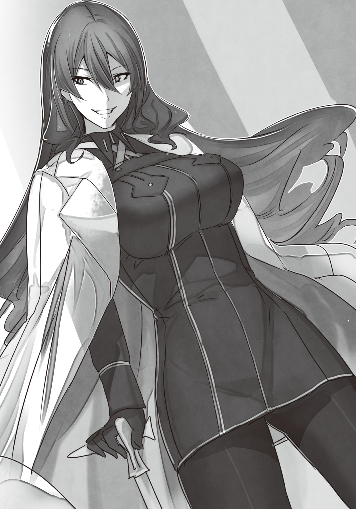
狭間恋歌は、そう言って唇を歪めた。
◆◇◆
「しばらく見ないうちに、随分と大きくなったじゃないか、志雄」
研究室に置かれた机を挟み、志雄と日輪は恋歌と向かい合っていた。
綺麗な女性だった。年齢は二十代後半といったところか。長身にして軀ながら、ぞんざいに纏う白衣の下には女性的な体つきが存在し、病的なほど白い肌の上を色の薄い髪が艶めかしく滑る。反面、その眼差しは物憂げで、厭世的な雰囲気が動作の端々から感じられた。
「先生がふらっといなくなって、もう二年ですから。僕も大きくなりますよ」
「二年。そうか、もうそんなに経ったか」
恋歌は肩を揺らした。
彼女と志雄の出会いは、今から六年前。研究所が襲われて数カ月ほど経ってからのことだ。
御霊一族が代々積み重ねてきた研究を継承するにあたって、遺された乏しい資料を前に悪戦苦闘しているところに、彼女は現れた。
──君が望むのならば、私が神に至る牙を与えよう。
両親の友人だった恋歌の導きによって、志雄の研究は飛躍的に進歩した。さらに研究者にして元は一流の戦技魔装士である恋歌は、戦闘面においても的確に志雄を指導した。獅子神の鍛錬が志雄に〝動〟の性質を与え、恋歌に〝静〟の側面を与えられたと言っていいだろう。
「日輪君も久しぶりだな。壮健なようで何よりだ」
「......ええ、恋歌さんも」
応じる日輪の声は若干固い。恋歌は忍び笑いを漏らした。
「その反応も変わらずか。そんな顔をしなくても、君から志雄を取ったりしないよ」
「......」
日輪は警戒するような面持ちで志雄の袖口を引っ張った。普段は不遜な獅子である彼女が、どういうわけか恋歌の前では借りてきた猫になるのだ。
とはいえ以前そのことを指摘して頰をこね回された経験があるので、志雄は急いで話題を変えた。
「それにしても先生、どうしてここに？」
元々風来坊な気質を持つ人だ。二年前に旅に出ると言ったきり姿を消したことは不思議ではなかったが、まさかこんなところで出会うとはさすがに予想していなかった。
「ここの学長とは知り合いでな。適当にぶらついてたら研究員に誘われたんだ」
「だったら連絡くらいくださいよ......僕のことも放り出したままですし」
「放り出したとは人聞きが悪い。君の研究については可能な限りの助言をした。戦いの技巧についても十分に教えを授け、当時における君の肉体も完成させた。それより先に至るには、君の研究の進歩と肉体の成長を待つ必要があったのは解っているはずだ」
「それはまあ、そうですけど......」
それでも頼りにしている人が傍にいるかいないかでは、気の持ちように違いが出る。そんなことを思っていると、恋歌は愉快げに喉を鳴らした。
「そう不貞腐れるな。こうして会えたからいいだろう」
「僕がここに入学しなかったらどうしてたんですか」
「研究設備のあるここ以外に入学する可能性など無きに等しいだろう。必然というやつさ」
すべてお見通しということらしい。
二年経ってもこの慧眼は相変わらずのようだ。
「そういえば、あの槍の坊やとの決闘はどうだった？」
ふと、思い出したように恋歌は言った。
「見事に懐まで入られましたよ」
「だが、そこで返り討ちにしたと。好機を摑めなかったか、惜しいな。とはいえ、あの坊やならこの敗北から学ぶだろう」
「先生はなんでも、ここで魔女とか呼ばれてるそうですね」
「伸びしろのある子に必要な助言をすれば伸びて当然だが、傍から見ると私が魔法を使っているように見えるらしい。おかしな話だ」
何にしても、と恋歌は続けた。
「今の君になら新たな稽古もつけられそうだ。先ほどの応酬も、十分にそれを証明してる」
「僕としてはあそこで止めずに、もう少し続けたかったんですけどね、久々の先生との手合せですし」
「無茶を言ってくれるなよ。あの状況になったら今の私に打つ手はないさ」
恋歌は苦笑しながら右手の杖で右足を示した。彼女の右足にはろくに力が入っていない。戦技魔装士だった彼女は、右足の負傷によって引退を余儀なくされたという。
「私としても、もう少し君との逢瀬を楽しみたくはあったがね」
「逢瀬って、先生」
「ほう、妻である私の前で浮気とはいい度胸ですね......！」
「いやいや違うから！ 先生も悪ふざけはよしてくださいよ！」
日輪は慌てふためく志雄の袖を摑み、恋歌に向かって威嚇するように喉を鳴らす。そんな二人を見て恋歌は楽しそうに肩を揺らしながら言った。
「そうそう、日輪君の言葉で思い出した。君たち結婚したそうだな。おめでとう」
「あ、ありがとうございます」
「祝儀代わりに、ここのカギをあげよう。この研究室は私だけのだから、今後は好きな時に利用して構わない」
「規則違反になりませんか？」
「なに、些細なことだ。──君の魔術の研究については私も関わっているからな」
恋歌は言った。
「何はともあれ、君たちが在学中は私もここにいるつもりだ。二人とも、よろしく頼む」
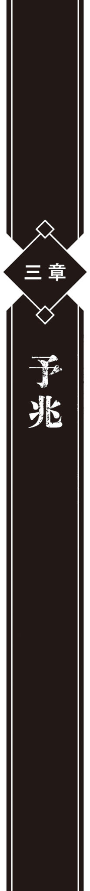
旧首都東京、新宿区。
数百年前は人と物で溢れる、世界でも屈指の大都市だったそこも、今は幻海に沈み廃墟の都となっている。
普段ならば行き来するのは幻獣のみとなっている場所だが──その日は、崩れ落ちたビルの陰に一人の男が立っていた。
いや、一人ではない。
「隊長、全員集合しました」
背後からの声に、その男は小さく頷いた。
いつの間にか、男の周りには七人の人間が立っていた。男も含め、全員が戦殻と剣杖を身に着けている戦技魔装士だ。
だが、ただの戦技魔装士ではない。鋭い眼光。鍛え抜かれた体軀。纏う風格は威圧感を放ち、何気ない様子でありながら八人はそれぞれ援護しあえる最適の配置についている。
複数人でいながら一つの生命のごとき連携。この八人は全員が〝銀杖〟以上の等級を持つ幻獣対策局の精鋭だった。
「......これが例の亀裂ですか」
背後にいた隊員が呟く。男の前には地面を切り裂く大穴が広がっていた。
幻獣の生態系異変の調査。それが対策局からこの部隊に与えられた任務だ。
ここしばらく、関東地方において従来の分布から外れた幻獣が発見されていた。先日など、戦技魔装士の訓練生たちの前に伝説級が現れたとも聞いている。
現在は幻海の中の異変で留まっているが、いつ山上にも影響が出るか解らない。そのため、早期に異変を察知した対策局は調査を続け、目撃情報などから異変の中心が旧首都、東京にあるという推測があげられた。
そして調査隊として派遣されたこの八人は、かつて新宿と呼ばれていた区画にて、地面に生じた大きな亀裂を発見したのである。
「これほど大型ではありませんでしたが、他にもいくつか真新しい亀裂が見つかりました。どれも穴の中から高い魔力濃度を確認しています」
「周辺の幻獣はどうだ」
「発見できません。魔術による索敵にも反応無しです」
「妙ですね」
「ああ、これ以上ないほどにな」
新宿区には多くの幻獣が生息している。普段ならば二回か三回は戦闘状況に陥っているところだが、今回はまるで平和な山上を歩いているかのような有様だ。
そこにきて、この地面に生じた大きな亀裂だ。それもただ地面がひび割れているのではない。中を覗き見れば、人が通れるような幅の穴が奥まで続いている。
亀裂の中は底が見えない深さ。新宿区の地下にはアリの巣のように幾重にも通路が張り巡らされていたと聞いているが、そのどれかに繫がっているのかもしれない。
しかしなぜ、と疑問は続く。最近大きな地震があったとは聞いていない。さらにこの地面の抉れ方は、地面の中から外にかけて何か大きな力が作用したように見える。
「やはりここを調べる必要がありそうだ。二人この場で待機。残りは俺と地下の調査に向かう」
「了解」
指示に従い、二人が亀裂の前に待機。残り五人を連れて、隊長の男は亀裂の中に潜り込んだ。
予想通り、地下へと続く道は長く深かった。魔術で光球を自分の前方に発生させて周囲を照らし、滑り落ちないよう警戒しつつ狭苦しい土の通路を潜りぬけていく。やがて下方に大きな空間を発見した。
手で全員に一旦停止を指示。索敵用の魔術を展開している隊員は、反応無しとハンドサイン。隊長は背後の隊員に突入の合図を送ると、同時に下の空間に飛び降りた。
「......敵影なし」
着地と同時に剣杖を構えて全方位に視線を送るも、そこに幻獣の姿はなかった。続々と降り立つ隊員たちとともに、改めて周囲を観察する。
「ここは......地下トンネルですかね」
「恐らくは鉄道用に使われていた場所だな。レールらしきものもある」
見れば足元には前後の道沿いに伸びる錆びついた鉄のレール。伝聞でしか知らないが、かつては幾つも連結した鉄の車両が、このレールに沿って縦横無尽に動いていたという。
「しかし随分状態がひどい。今にも崩れそうだな」
「壁面もボロボロですね」
隊員の一人が壁に触れると、妙だな、と呟いた。
「隊長、この壁面の損傷、そんなに古くありませんよ」
「幻獣に体当たりでもされたか？」
「いえ、これを見るに何か別の......そう、まるで大火力の魔術で吹き飛ばされたような」
「魔術......？」
周囲を見回す。仮に魔術によるものだとしても、こんな場所を魔術で破壊する必要がどこにあるのか。まるで理屈が通らない。そもそも、一体何者が。そんなことを思っていると、ふと足元に光る何かを見つけた。
「......水晶？」
半透明の六角柱の物体は、鉱物の一種である水晶だった。しかしなぜこんなものがここに落ちているのか。重なる不可解に、言い知れない暗雲が胸中に渦巻きはじめ──
──オオオオオオオオオオオオオオオ！
「────」
六人全員が一斉に動いた。
音の方角に向かって剣杖を構え、敵に備えて陣形を再構築。互いの位置を意識しつつどんな微細な変化も逃すまいと全神経を張りつめる。
「............」
何も起きない。魔術の光が届かない闇の向こう側から這い出てくるモノはない。
だが、何かがいる。全員が確信した。この道の奥に、何かがいると。
「......行くぞ」
指示に合わせて全員が前進を開始する。
程なくして、一同は闇の奥に僅かな光を確認する。照明など絶えて久しいはずの地下道での光源。魔術の光源を消すよう全員に手で指示を出し、慎重に奥へと向かった。
やがて曲がり角に差し掛かる。覗き見ればそこには朽ちかけた鉄門扉。中は窺い知れないが、その隙間から淡い光が漏れていた。
「......隊長、中に強力な魔力反応があります」
小声で告げる隊員。この先に何かがいる。男は隊員たちに突入準備の合図を送り、静かに扉に手をかけ──
「ようやく見つけたぞ」
声。
その場にいた全員の動きが止まった。
何者かの声が、今、扉の向こう側で発せられた。
「最近になって波長を感じるようになったが、なるほど、眠りから目覚めかけていたわけか」
声は自分たちに向けられたものではない。誰かが自分たち以外の誰かに声をかけている。
聞こえてくる声は男性のものだ。落ち着いた、壮年の声音。しかしどこか底知れないおぞましさを感じさせる響きがそこにはあった。
「責めているわけではない。お前は必要な役目を果たして眠りについたのだからな」
自分たちより早く在野の魔装士が探索にきたのか。隊長の男はそう考え、すぐに否定する。現在関東一帯は調査のために封鎖されている。対策局が許可を出すはずはない。
ならば中にいるのは何者か。──この目で以て確認する他に無い。
「だが、それも今日までだ。準備は整っている。お前にはもうひと暴れしてもらうぞ」
背後の隊員たちに合図を送る。全員が臨戦態勢を取る。
次の瞬間、男は眼前の扉を蹴破ると同時に室内に飛び込み、隊員もそれに続いた。
そして、彼らは目を見張った。
「────っ!?」
水晶。
そこにあったのは、淡い輝きに包まれた大空洞だった。
いかなる用途で作られたのか、今や誰一人として知る者のいないその空間の、床を、壁を、天井を、水晶が埋め尽くす異様な景色。
さらに空洞の大半を占めるのは、水晶で覆われた一本の柱。その直径は数十メートルもあるだろうか。床と天井を貫くように伸びたそれは、芸術的でさえある。ゆえに突入した全員がその光景に一瞬心を奪われ──
「──友との再会に水を差すとは、無粋な輩がいたものだ」
水晶柱の奥から届いた声に、隊員たちは迅速に動いた。互いにフォローできる位置に立ちながら、水晶の輝きでは晴らしきれぬ薄闇の中に剣杖を向ける。魔術の明かりが闇の先を照らしだし、浮かび上がったのは帽子を目深まで被った人間らしき輪郭。
「だが丁度いい。観客が私だけでは少々物足りないと思っていた」
ぞわり、と背筋が粟立つのを隊員たちは感じた。幻海内部にも拘わらずその人物は武装せず、黒いスーツを纏うのみ。それだけでも異様だが、もっと根本的に特大の危険をはらんでいると本能が告げていた。
「そこを動くな！ 貴様、何者──」
「観客と言ったろう」
帽子に顔を隠したまま、それは言った。
「君たちが見るべきは、私ではないよ」
すると突如として壁が、床が、天井が、地鳴りのごとき震えを刻み始めた。同時に広間の水晶の輝きが強くなり、耳鳴りのような音が広間に満ちる。
目を見張る一同の前で水晶柱に亀裂が走り、壁面が剝がれ落ちた。そして内側から覗くのは研ぎ澄まされたガラスのような壁面。それが一つの巨大な水晶塊であることを隊長の男は即座に理解し、同時に雷鳴の如き直感が彼の背筋を貫いた。
（あれは────！）
水晶の広間。そして水晶片で埋もれた柱の中から現れた、巨大な水晶の塊。
まさか、と思った。まさか、あれの正体は。
もしもそうだとするのならば。
「総員退────」
「もう遅い」
次の瞬間、轟音とともに水晶柱が内側から爆砕した。
水晶の破片と衝撃波が迸り、隊員たちが吹き飛ばされる。そして自らもまた同じ運命を辿る寸前、隊長の男の眼に映ったのは、粉々になった水晶柱の中から現れる巨大な存在と、それを祝福するかのように両腕を広げる人影。
「──さあ、新たな神話の幕開けだ」
衝撃波とともに届いたその言葉を最後に、男の意識は搔き消えた。
◆◇◆
「──日輪、準備は？」
「いつでも構いません」
授業の無い休日。志雄と日輪は魔術用演習場に並んで立っていた。
演習場といっても、学舎の傍にあるグラウンドと違って整備はされていない。隆起した土と背の低い草が生えているだけの広場だ。代わりにあらゆる魔術の行使が許可されており、所々地面が抉れているのは、魔術による破壊痕だろう。
休日だけあって、演習場には志雄たちしかいない。そして戦殻を纏い、剣杖を手にした姿で二人が見据えるのは十数メートルほど先にある的だ。
「じゃあ、始めよう」
志雄は剣を、日輪は刀を構え、揃って刃の切っ先を的へ向ける。
『共鳴詠唱──』
声とともに二人の剣杖が唸りをあげる。刃の上を滑るようにして光の紋様が走り、さらに燐光が溢れだす。そして徐々に輝きは増していき──
次の瞬間、異音とともに二人の剣杖の側面から火花が散った。
「っ────」
魔術が発動することなく、剣杖を包んでいた光が消える。志雄は顔をしかめながら構えを解くと、己の剣を見た。
感じるのは焦げついた異臭。その原因は剣杖に搭載された円筒状のソケットからだ。慎重な手つきでそこから取りだされたのは、二十センチほどの焼けついた銀色の円筒だった。
「......ダメか。日輪、そっちは？」
「同じですね。どうやら負担に耐えられなかったようです」
日輪もまた剣杖から焼きついた銀筒を取りだしながら言った。
「構造的には間違ってないはずなんだけどな......素材の問題か、刻印した魔術が上手く嚙みあってないのか......いや、反発現象が抑制できてないのか......？」
志雄は銀筒を手に呟くが、やがて頭を振った。
「まあ、ともかく検証し直しだ。日輪、今日のところはこの辺にしよう」
「予定よりも早く終わりましたね。どうでしょう志雄、この後一緒に街の方に出かけるというのは」
「あー......いやごめん、ちょっと今日は」
他に用事があるんだ、と言い終える前に、目の前の日輪の顔は不機嫌なものになっていた。
「ええっと......」
「......またあの人のところに行くつもりですか？」
「うっ」
日輪の言うあの人とは他でもない、志雄の師匠──狭間恋歌である。
彼女がこの学校に所属していることを知ってから数日。志雄は毎日のように彼女のいる研究室に通っていた。
「いやほら、先生は魔術にも造詣が深いし、研究を進めようとするとどうしても手を貸してもらいたくなるっていうか」
「むー......志雄はもっと私に構うべきです」
「そこまで言うなら、日輪も一緒に来ればいいじゃないか」
「......いやです。あの人苦手です」
日輪は拗ねるようにそっぽを向いた。日輪が誰かを苦手と評するのは珍しいことだ。──だからこそ説得も難しいのだが。
どうしたものか、と志雄は困ったように頰をかいた。
◆◇◆
「──で、今日も顔を出すのは君だけと」
恋歌の研究室。
頑なに行かないと言い張る日輪の説得を諦め、志雄は一人、ここを訪れていた。
「すみません。言っても聞かなくて」
「彼女に試してもらいたい戦術があったんだが......まあ、急ぐことでもないか」
言いつつ彼女が手元で弄り回すのは志雄と日輪の剣杖だった。慣れた手つきで分解し、パーツを一つ一つ精査していく。そうしながら恋歌は続けた。
「それに彼女がいなくても、研究には影響ないからな」
「確かにそうなんですけどね」
志雄と違い、日輪は魔術の研究に対する技術も知識も持っていない。とはいえそれは彼女が残念だからというわけではなく、志雄が特殊なだけだ。獅子神分家において根っからの研究者の血筋。それが御霊一族なのである。
そう考えれば日輪はここに来てもすることがあまりなく、そんな彼女に恋歌は構いまくるだろう。だとすれば彼女を苦手とする日輪が来たがらないのも自然な成り行きだ。
「それで、今日は何を調べるつもりだ？」
「今朝の演習結果の検証と、これの反応実験を幾つか」
そう言って志雄が取り出したのは、金属製のアタッシェケース。炎の刻印がされたそれの中には、十二本の円筒状の物体が収められていた。
円筒は直径四センチ、長さは二十センチほど。二本で一対にされており、それぞれ番号が刻まれた円筒が六対、ケースの中で鈍く輝いていた。
「──共鳴現象」
円筒の輝きを見つめながら、恋歌は呟くように言った。
「本来反発しあう異なる魔力を、逆に重ねることでより強力で高度な魔術を可能とする現象。未だに机上の空論とされているこれを、御霊は実現させた」
そして、と恋歌は言った。
「その現象を利用して開発された、六種類の対神話級用共鳴魔術。それを封じたのがこの六対のシリンダーと。......全く、実存するかも不明な相手に対抗するための専用魔術を、活動記録だけを頼りに開発するとは、御霊の執念には恐れ入る」
「それが御霊の熾りですからね」
獅子神の分家である御霊だが、始祖はとある研究者だったとされる。そして神話級幻獣の威容を目の当たりにし、それを倒すための手段の開発に着手したのだという。
その研究のパトロンとして名乗りをあげたのが獅子神であり、獅子神の庇護下で研究を進める内に分家の一つに数えられるようになったと伝わっている。
そう、そもそも御霊家とは、神話級の打倒を目的とした一族だったのだ。
「なにせ神話級が歴史から消えても、いつか再来した時の備えとして研究を続けたぐらいですから。......それがなくても、共鳴魔術の研究は人類にとって有益なのは間違いないですけど」
もっとも、と志雄は視線を僅かに落として言った。
「──その対抗手段の研究が大詰めを迎えたところで、奴が現れたわけですが」
神話級幻獣アバドン。
奴への対抗手段として開発されていた七つ目の共鳴魔術。それが完成する寸前、アバドンは数多の幻獣を引きつれて現れたのだ。
あまりにも突然であり、図ったかのようなタイミング。職員たちの奮戦も虚しく研究所は破壊され、志雄の両親は未完成の共鳴魔術で以てアバドンに挑み──刺し違えた。
そうして志雄の元に遺されたのはこの六対の共鳴魔術。長年の研究の末に御霊一族が到達した秘奥であり、神話級への唯一の対抗手段だ。
「......研究の方は、まだ共鳴現象の再現には至っていなかったな」
重くなった空気を換えるように恋歌が言った。
「恥ずかしながら。今朝の実験も失敗でしたから」
六年前の襲撃により、御霊の研究所は壊滅した。研究員は全員死亡し、積み重ねられてきた膨大な資料も大半が消失した。本来ならば志雄が継承すべき共鳴現象についての技術や知識も失われ、手元に残るのは僅かな手掛かりのみ。共鳴魔術のシリンダーが無事なのも、両親が最後まで携行していたからこそだ。
志雄も研究を重ねているが、百年単位の研究の足跡を辿るのは容易ではなく、未だに共鳴現象の再現に至っていない。
「これを解析できれば、一気に研究も進むと思うんですけどね」
神話級用の共鳴魔術が込められた銀筒を手に志雄は言った。御霊の持つ技術と知識の粋ともいえるこの物体。しかし内部構造があまりにも複雑で外からでは全容が摑めず、かといって分解すれば復元できる保証はなく、複製も存在しない。
さらに中の魔術を起動させると、負荷によってシリンダーが焼き付いて、魔術自体が失われかねないという検証結果が出ている。そのため試しに実験することもできず、これらの共鳴魔術が本当に稼働するのか、神話級に対して有効なのかどうかさえ定かではないのだ。
まさに完全なブラックボックス。両親が使用した共鳴魔術のシリンダーも回収したが、未完成ゆえに負荷に耐えきれなかったのか完全に融解しており、残念ながら手掛かりとしてほとんど役に立たないのが現状だ。
しかし、と志雄は思う。この研究だけは投げ出せない。誰かに任せるわけにもいかない。それが御霊の末裔である自分の義務であり、責務だ。
「ところで先生、剣杖の方はどうですか？」
問いかけに、恋歌は剣杖を弄る手を止めて言った。
「多少内部機構が焼きついただけで、問題はない。共鳴魔術も正常に動作するはずだ」
志雄と日輪の剣杖には、円筒を装着して共鳴魔術を発動させる機構が備わっている。元々両親の所有物である志雄の剣杖には最初から搭載されていたが、日輪の剣杖にその機能を追加したのが恋歌だった。
魔術を含め様々な分野に造詣の深い彼女だが、特に剣杖と戦殻の研究開発、及び作製を得意としている。そして志雄の剣杖を解析することで、共鳴魔術を使うためのパーツを再現してみせたのだ。
「とはいえ、あくまで理論上だがな。検証結果を纏めたら私にも見せてくれ。私が再現した機構に問題がある可能性も十分考えられる」
「先生でも再現できないなんて考えたくありませんけどね」
「私としてはその方が挑み甲斐があるがな」
恋歌は軽く喉を鳴らし、それから続けた。
「ところでついでだ、剣杖の整備もしておくか？」
「ええ、お願いします。──万全を期しておきたいので」
「......例の幻獣の異変か」
志雄は頷いた。
「先生はどう思います？ 六年前と関わりがあると思いますか？」
「どちらも異変ではあるが、性質が違うとは感じるな。だが、圧倒的に情報が足りない。現時点で判断はしかねる」
「そうですか......」
志雄は視線を落とした。考えすぎなのだろうか。しかしそれでも、備えておくに越したことはない。六年前の惨劇も、備えてあれば違う結果になったはずだから。
「そもそも本当に残り六柱の神話級が現存しているかも定かではないからな......君は確信に近いものを持っているようだが」
「ええ......なにせ直に聞きましたからね」
それはあの惨劇の中、朦朧とした意識の中で聞いた言葉。どこか底知れないおぞましさを感じさせる響きで、その声は言ったのだ。
『きみたちの研究は、われわれの神話にとって些か無粋が過ぎる。だから、滅んでもらおう』
無論、アバドンがそんなことを言った証拠はない。第一に人語を喋る幻獣など前代未聞だ。聞き間違いか、あるいはそうあってほしいという志雄の願望かもしれない。けれど、志雄はその言葉が真実だと確信している。
「......そういえば志雄」
おもむろに、何ら気負った様子もなく恋歌は口を開いた。
「一つ君に聞いておきたいことがある」
「何でしょう？」
顔をあげ、首を傾げる。
恋歌はそんな志雄に向かって──
「──どうして、日輪君と結婚したんだ？」
そう、斬り込むように問いかけた。
「どういう意味です？」
逆に志雄から問い返されるも、恋歌は咎めることなく言った。
「合理的な理由はある。共鳴魔術は二人の魔装士がいて初めて使えるものだが、君が仕留めようとしているのは神話級だ。生半可な魔装士では相方は務まらない。その点において比類ない才覚と実力を持つ獅子神日輪は申し分ない相手だ。彼女との心身の結びつきを強固にするため、結婚という儀式を行うのは自然な判断と言える」
だが、と恋歌は言う。
「私は君がそれを選ぶとは思っていなかった。まして、日輪君となどと」
「......どうしてですか？」
「君が優しいからだ」
志雄に向かって、恋歌は淡々と告げた。
「神話級の討伐はあくまで君の使命でしかない。直接の仇であるアバドンは既に死んでいるし、ともに来襲した他の幻獣もそうだ。やろうと思えば、いつだって平和な日々に戻ることもできるのに、君は今も自分の意志で剣を持っている。つまり君は自ら望んで苦難に挑んでいるわけだが──そんなものに他人を巻きこもうなどと、善人である君が思うはずもない」
「......」
「まして、神話級と戦う危険性は計り知れない。御霊の研究所を守っていた戦技魔装士たちは全員が一流だった。それが全滅した以上、神話級の強さは本物だ。私と獅子神によって鍛え抜かれた君であっても、どこまで通用するか未知数だ。さらに頼みの共鳴魔術も問題を抱えている。魔術の効果を示す資料がない上に、負荷が原因で恐らく使えるのは一度きり」
追々、負荷による損耗は改善する予定だったのだろう。
しかしその機会がやってくることはなかった。
「そんな何が出るかも解らないびっくり箱に、自分以外の命を懸けるだなんて君ができるものか。──事実、私が旅に出る前まで、君は独りで共鳴現象を引き起こす研究もしていたはずだ。今は中止しているようだが」
恋歌の追及に、志雄が困ったように言った。
「やっぱり知られてましたか」
「君の師匠の眼は節穴ではないということだ。そしてこれらを踏まえれば、結論は一つ。君は一人で戦い続ける。その命が果てるまで。......そう思っていた」
しかしそうはならなかった。
恋歌が旅に出た後、志雄は日輪とともに歩むことを選んだ。
ならばそれはなぜなのか、と。
そう問いかける師を前に、志雄は少しだけ困ったように頰をかいた。
「一人で戦い続ける......僕もそう思ってたんですけどね」
「ほう、となれば動いたのは日輪君の方か。私から見るに君は相当な頑固者だが、どうやってその心を彼女は解きほぐしたのかな？」
「いくら先生とはいえ、それは教えられませんよ」
結婚するという決断は自分と日輪だけのもの。
その内容を知るのも、自分たち二人だけでいい。
ああ、だけど。
「そうですね......あえて一つだけ言うのなら」
「言うのなら？」
志雄は微笑み、言った。
「──こうなることは、ずっと昔に決まっていたんじゃないかなと思いますよ」
◆◇◆
（志雄は今頃、研究室でしょうか......）
志雄と演習場で別れ、部屋に戻ってからしばらく。
あてつけのように志雄の毛布にくるまって不貞寝していた日輪は、もそもそと毛布から顔を出し、外へと繫がる窓に目をやった。
差し込む日の光が眩しい。あの太陽の下を志雄は歩いていった。心なしか足取りを軽くして。志雄にとって狭間恋歌は恩人であり、師匠であり、理解者だ。そんな人と会うのだから、心が弾むのも当然だろう。
ともあれ自分のあずかり知らないところで、自分ではない人──しかも美人だ──と会うことを志雄が喜んでいると思うと、無性に腹が立つ。だったら志雄についていけばいいではないか、という話でもあるのだが、それが難しい。なにせ相手は狭間恋歌なのだ。
日輪は恋歌が嫌いではない。その理路整然とした思考、戦殻や剣杖に対する深い知識と技術、そして志雄を鍛えあげた育成能力は間違いなく本物で、称賛する気持ちさえある。
だがその上で、どうにも彼女は苦手だった。恋歌が自分を見る目は、なんというか──そう、言わば嫁を見定めんとする姑の目！ 恋歌の前で一つミスするたびに「おやおやおやぁ？ そんな体たらくでよく志雄の相棒を名乗れるものだな」と言われているような気がしてならないのだ！
「......志雄が帰ってきたら構ってもらいましょう」
結論としてはそこに落ち着いた。そしていい加減毛布にくるまっているのも飽きたので、ひとしきり志雄の毛布に体をこすりつけると、日輪は軽く背筋を伸ばして立ち上がった。
（今朝は消化不良でしたし、もう少し体を動かしてきますか）
部屋を出てグラウンドに向かう。校舎は閑散としていた。休日ともあって訓練生たちは部屋で過ごすか、近場の街に繰り出しているのだろう。
基本的に、休日の訓練生が移動を許可されているのは近場の街までだ。申請すればもっと遠出も可能だが、そもそも移動手段が乏しい現代では日帰りが難しい。そのためどうしても活動範囲は近場に限定される。
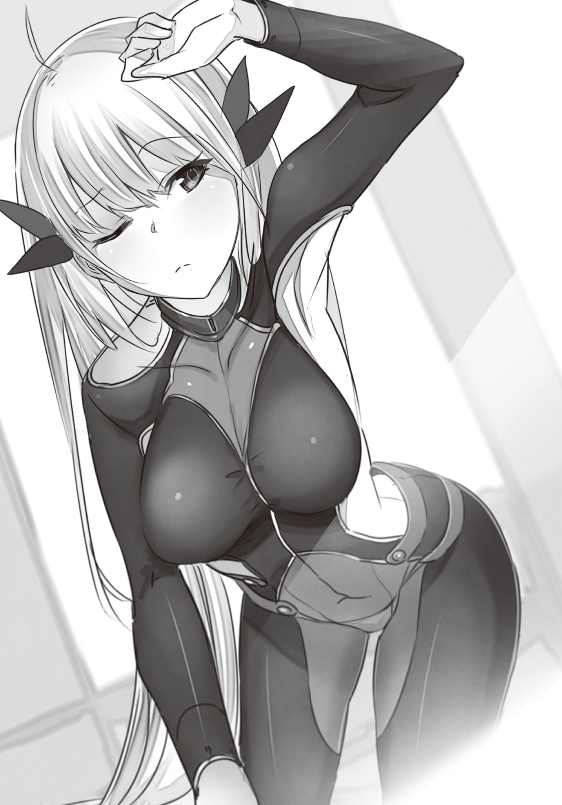
それでも休日ともなれば多くの生徒が校外に足を運ぶ辺り、やはりたまには学校から離れてすごしたいという思いがあるのだろう。──とはいえ中には休日でも学習に励む生徒もおり、グラウンドに顔を出すと数人の生徒たちがトレーニングに勤しんでいた。
その中に知った顔があった。
「あれ、日輪？」
意外そうに名を呼ぶのは鈴だった。その隣には霧子もいる。運動着を着て僅かに呼吸を乱す様子から、どうやらグラウンドで自主練に励んでいたようだ。
「どうしたのこんなところで」
「寝てばかりいても鈍りますから、少し体を動かそうかと。それより、鈴さんたちこそ今日は休養のはずでは？」
「そうなんだけどね。やっぱりほら、できるなら早く強くなりたいじゃない？」
「この程度のことじゃ、さして変わらないことは解ってるけれどね」
元気に応じる鈴とその横で苦笑する霧子。そんな二人に日輪は言った。
「いえ、良い心がけです。そういうことならば、せっかくですし私もお付き合いしましょう」
ウォーミングアップとして丁度いいだろう。そこで体を温めてから、独自のトレーニングを始めればいい。そんなことを思っていると、あれ、と鈴が何かに気が付いた。
「そういえば志雄君は？」
うぐ、と思わず言葉を呑む。なぜか痛いところを突かれたような気分になった。それでも動揺を顔に出さないよう努めながら答える。
「......志雄ならば研究棟に行きました」
「ああ、そういえば魔術の研究をするとか言ってたわね」
「じゃあ日輪、今日は一人なんだ」
「うぐっ」
なぜか痛いところを突かれた気分になり、今度は隠せずに呻いてしまった。それを見て鈴は慌てて言った。
「あ、いや変な意味じゃなくてさ、なんていうか......そう、日輪も一人でいることあるんだなって。いつも志雄君と一緒にいるからさ」
「......確かに珍しいかもしれませんね。ここに来てからは大抵一緒でしたから」
なにせ自分たちは新婚だ。イチャイチャしたい。いやするべきだ。しないでどうする。なので一緒に行動するのはごく自然なことであり当然のことだ。
そんなことを考えていると、霧子が疑問を口にした。
「ここに来てから、ということは......以前は違ったのかしら？」
「ええ。特に結婚する前はなかなかイチャイチャするのが難しかったので」
「結婚する前かー。そういえば日輪と志雄君ってどれぐらい付き合い長いの？」
「出会ってから六年ほどです。両親の話によればそれより前、赤子の頃に一度対面しているそうですが、さすがにその頃の記憶はありませんから」
「じゃあさ、やっぱり劇的な出会いだったの？ こう、思わずお互いに一目惚れみたいな」
「即座に切り結んだ程度には劇的でしたよ」
「なんでそうなったの!?」
色々ありましたから、と驚く鈴を受け流す日輪。
そんな彼女の脳裏に、過去の光景が浮かぶ。
まだ自分が獅子神日輪だった頃の記憶。
御霊志雄という存在が、自分にとって大きな意味を持つようになった時の──
◆◇◆
物心ついた頃から、獅子神日輪は独りだった。
北方の人類領域、桜翼城砦の守護者である獅子神家。その長女として生まれた以上、それは必然だったのだろう。
決して周囲から蔑ろにされたわけではない。むしろ獅子神の姫として敬われ、大事にされていた。けれどだからこそ、どうしようもない孤独を生み出していたのだ。
日輪は独りが嫌いだった。独りでいる時間は静かで、冷たくて、心細い。もっと明るくて、騒がしくて、温かい方がずっと楽しい。
そんな日輪にとって、過酷な獅子神の訓練はむしろ心安らぐものだった。
日輪は戦いの天才だった。教えられた高度な技術、戦術、魔術を瞬く間に己の血肉としていった。周囲はそんな日輪を、獅子神とはかくあるべしと手放しに称賛した。そんな時だけ、ほんの少しだけ、孤独が薄れる気がしたのだ。
だから日輪は求められるがまま、駆け抜けるようにして強くなった。強くなれば独りじゃなくなると信じて、さらにさらに強くなった。そうしてずっと強くなって、強くなって、強くなって、強くなって、強くなって、強くなって──
齢十にして伝説級幻獣を討伐せしめた時、日輪は気が付いた。
自分の周りに誰もいないことに。
そして、自分を称賛していた人たちが遠くから向ける、畏怖の眼差しに。
「ああ────」
哀しいとは感じなかった。
ただ、やはり自分は独りなのだと、理解した。
そして強くなることを放棄した。もはや強くなることに何の価値もなかった。そんなことをしても、孤独が癒されることなどないと解ってはいたけれど。
志雄が獅子神に引き取られたのは、そんな折のことだ。
当初、誰もが志雄は打ちひしがれているだろうと思っていた。まだ十歳の少年が全てを失ったのだ。心の傷が深いことなど考えるまでもない。
だが志雄はそんな予想を覆した。引き取られて数日経つ頃には、獅子神の訓練を始めたのだ。
大の大人でさえ逃げ出す獅子神の訓練。だというのに彼は心身ともに疲弊した状態で、あまつさえ通常よりもさらに過酷な内容を自らに課していた。
もはや自殺行為以外の何でもない。血反吐を吐きながらもがくように強くなろうとする姿は、誰が見ても常軌を逸していた。周りもそんな彼を不気味だと敬遠した。
けれど日輪は違った。誰も彼もが距離を取る中、それでももがくように前へ進もうとする彼の姿に目を離せずにいた。
自分でも理由は解らない。だからこそ、日輪は彼に言った。
「──貴方は、死ぬつもりですか」
その問いかけに、志雄は俯きながら答えた。
「耐えられないんだ。弱いことが」
悲鳴をあげる肉体よりも、命を削るような訓練よりも、己の弱さが苦しいのだと。
「強くならなきゃいけない。誰よりも、何よりも、どんなことをしてでも」
苦しみから逃れるために己を苦しめるという矛盾。
自分の理論が破綻していることを、しかし彼は理解している。
それを理解した上で。
「僕はもう、止まれないんだ────」
その言葉を聞いた瞬間、日輪は自分の中で歯車が嚙みあうのを感じた。
彼と自分は同じ──否、自分よりももっと深く暗い孤独の闇の中で、もがき苦しんでいる。
向かう先の目印もなく、自分の姿も見失い、歩くことを止める方法も解らないまま、ただ苦しみだけを積み重ねている。
そしてこのまま行けば、彼は光の届かない深淵の中で最期を迎えるだろう。
それを止められる人間はいない。彼のいる孤独にまで手を伸ばすことなどできない。
ただ一人──自分を除いて。
「......止まれないと言うのなら、私がともに歩き支えます」
獅子神日輪は孤独だった。
その隣に並び立つ人などいなかった。
けれど、自分なら。
そんな自分ならば──否、そんな自分だからこそ、彼の隣に並び立つことができる。
「貴方は、独りではありません」
志雄がゆっくりと顔を上げる。
虚ろだった瞳に宿る、僅かな光。
歯車が回り始める。止まっていた歯車と、壊れゆく歯車が嚙みあうことで。
「この獅子神日輪が、貴方の横に並び立ちましょう────」
◆◇◆
「おーい、日輪ー？」
「────っと」
間近からの鈴の呼びかけに、日輪は回想に耽っていた意識を浮上させた。
「どうしたの急に。ボーっとしちゃって」
「すみません。少々昔を思い出しまして。──そう、志雄が荒れていた頃の」
「え、志雄君にそんな時期あったの？」
「それはもう。確かに今の志雄といえば、立てば温厚座れば柔和、歩く姿は草食獣という有様ですが、その昔は伝説級幻獣も裸足で逃げ出す鬼畜系紳士で、私も随分と泣かされたものです」
「マジで!?」
「冗談です。半分くらい」
「半分は本当なんだ......！」
「こらこらこらこら」
会話を繰り広げる日輪と鈴の間に割って入るその声は、日輪が世界で最も信頼する人のもの。
思わず振り向くと、今まさに歩み寄ろうとしている志雄の姿がそこにはあった。
「僕がいないからって適当なことを吹聴しすぎだよ、日輪」
「志雄、どうしてここに」
「いや一度部屋に戻ったんだけど、日輪がいなかったからさ。鈴さんたちと一緒だったんだ」
「今日は夕方まで研究棟にいる予定では？」
「それが、さっき先生のところに連絡がきてね。多分こっちにもそろそろ──」
言いかけたところで、不意に一同の頭上が陰った。
見上げる彼らの眼に映るのは──空に浮かぶ巨大な魚影。
「羽鯨......!? どうしてこんなところに」
全長にして三十メートルはあるだろうか。愛嬌が感じられるずんぐりと膨らんだ巨体が特徴のそれは、大昔に存在していた飛行船という航空機を元に開発された空飛ぶ船である。
幻素によって地表が沈み、化石燃料の入手が覚束なくなった現代における運輸の要であり、非常に貴重なものだ。それが志雄たちの見つめる中、空港でもない学校の横に着陸しようとしていた。
それも一台だけではない。空の彼方から二台目、三台目の羽鯨が学校に向かってこようとしていた。
一体何が起きているのか──混乱に拍車をかけるようにして、校内に放送が響いた。
『緊急連絡。当敷地内にいる生徒は至急戦殻と剣杖を着装の上、講堂に集合せよ。繰り返す。戦殻と剣杖を着装の上、講堂に集合せよ』
放送されるのは滔々とした指示。それを耳にしながら日輪は志雄を見た。
「志雄、これは」
「僕も詳しいことは聞いてない。ただ、先生曰く何か大規模な事件が起きたらしい。ともかく戦殻に着替えて講堂に向かおう」
「剣杖は恋歌さんに預けていますが」
「最後の調整を今やってもらってる。終わり次第届けてくれるって」
「解りました。ではお二人とも、残念ですが訓練は中断です。部屋に戻って着替えるとしましょう」
四人は頷き合うと、駆け足で部屋に戻って行った。
◆◇◆
緊急招集の放送から、数十分。
講堂には武装した百名弱の生徒たちが既に集まっていた。街に繰り出していた生徒たちも残らず呼び戻され、そんな彼らの前に立つのは一真を筆頭とした複数の教官たちだ。その真剣な表情からも事態が深刻であることが伺えた。
「全員、静粛に」
ざわついていた生徒たちが、水を打ったように静まり返る。一真は生徒たちを見回してから重々しく告げた。
「三時間前、旧首都東京周辺を偵察していた羽鯨により、多数の幻獣が関東地方より全方位に向かって進行していることが確認された」
一真の背後に用意された巨大なディスプレイに映像が灯る。上空より撮影されたものらしく、無理に拡大され画質が幾分荒くなっているが、そこには確かに地上の光景と大量の幻獣が映っていた。
「幻獣は山上でも構わず進んでおり、予測進行経路には八槍砦も含まれている。目的、理由は不明。種族は様々だが、こちらに向かっている幻獣だけで、総数は千を超えると報告されている」
訓練生たちにざわめきが広がる。千体の幻獣。想像もつかないほどの規模だ。ましてそれが砦に向かって進行しているなど、もはや絵空事にしか思えないだろう。しかし冗談ではないことは、他ならぬ教官たちの表情が物語っている。
「この事態に幻獣対策局は非常事態宣言を発令した。行動可能な全ての魔装士を動員し、関東に面している主要な人類拠点に戦力を集め、防衛戦を行う。だが、圧倒的に手が足りん」
一真は告げた。
「ここまで言えば解るだろう。──この防衛戦、諸君らにも参加してもらう」
訓練生たちが息を呑んだ。
生徒たちの顔に浮かぶのは不安と緊張だ。無理もない。ここにいる生徒の大半がひよっこも同然なのだから。幻獣の大侵攻という前代未聞の事件に自分たちが参戦すると決められて、どうして平静を保っていられるものか。
だが。
「────」
御霊志雄は、違った。
片手で顔を覆い、僅かに俯く姿は動揺を堪えているようにも見える。
だが指の隙間から垣間見える顔に浮かぶのは──燃えるような決意だ。
（いるのか......奴らが......！）
幻獣の大移動。ありえない異常事態。
ならば、そこに何か原因があるはず。これだけの事態を引き起こす影響力のある、何かが。
探さなくてはいけない。見つけなくてはいけない。魂にかけて、討ち滅ぼさなくてはいけない。
そのために自分は今、ここにいるのだから。
「志雄」
呼びかけと袖を引っ張られる感覚に、志雄は顔をあげた。
「火を点けるにはまだ早いですよ」
「......そうだね。ああ、その通りだ」
軽く呼吸をし、心を落ち着ける。表情が和らぐのが解った。そうとも、今はまだその時ではない。今にも沸騰しそうな己の脈動を感じながら志雄は鋼也の声に耳を傾ける。
「無論、前線には熟練の戦技魔装士が立つ。諸君らはそのサポートだ。構成はこの後に発表するが、上級生も含めた十人ほどで班を組み、その指揮にはベテランを充てる。──では、順に班と名前、乗り込む羽鯨を告げる。呼ばれた者は指定された羽鯨で集合するように」
そう言うと、一真は班の番号と、そこに割り振られる生徒の名前を次々と読みあげ始めた。生徒たちは各々不安や高揚を抱きつつ船へと向かっていく。
講堂の人影が徐々に消えていき、教官たちも一人、また一人と指揮のために羽鯨へ向かう。やがて十数人の生徒になったところで一真は言った。
「残ったお前たちは、榛荊砦に配属される」
生徒たちの中にいた志雄と日輪は、小さく言葉を交わした。
「榛荊砦ですか......ここから北北東の山上に位置する砦ですね」
「ああ。砦級の中では比較的規模が小さい拠点だね。それに関東方面から幻獣が進行してきてるのなら、前線からはちょっと遠い位置かな」
「最前線となると、東の王武砦でしょうか。私としてはそこに配属されても良かったのですが」
「僕らは立場上訓練生だ。仕方ないさ」
不満げな日輪に苦笑しながら、志雄は心の中で考える。ダイダラを倒した実績があることを思えば、この緊急時、最前線に配置されてもおかしくはなかった。恐らくは、自分たちが訓練生ということの他に、日輪が獅子神本家の人間というのも加味されたのだろう。
とはいえ、どこに配属されようと些細なことだ。自分のやるべきことは変わらないのだから。
「日輪、もしも神話級が現れた時は、僕らは独自に動こう」
「命令無視を咎められますが」
「あいつらの討伐より優先するものは、何も無いよ」
赤い瞳を揺らめかせながら志雄は断言した。その上で続ける。
「それに、あいつらを倒せるのは僕らだけだと思う。無理にでも僕らが出なければ被害が拡大するだけだ。──問題は？」
「ありません。ではそのつもりで参りましょう」
二人は頷き合い、そこで締めくくるように一真が言った。
「榛荊砦は比較的内陸側にあるため危険は少ないと思われるが、くれぐれも油断せず、現地の指揮官の指示に従って行動するように。──搭乗する羽鯨は一〇五号だ。では、全員駆け足！」
一真が両手を叩き、呼応するようにして生徒たちは踵を返して駆け出した。
志雄たちも同じように外に出るが、そこで横合いから声がかかった。
「二人とも、ここだったか」
現れたのは恋歌だった。杖をつきながら、空いた手にはトランクケースを運んでいた。
「先生、関東方面から」
「幻獣の大行進だろう。私も話は聞いた。ほら、調整は終わらせたぞ」
恋歌が示すトランクケースには預けていた剣杖と、金属製のサイドポーチが二つ入っていた。
「このポーチは......？」
「例のシリンダーが全て入っている。かなり頑丈に作ったから、伝説級に殴られても壊れんはずだ。まあ装着してる人間は知らんがな」
神話級が関わっているかもしれない状況下。その可能性を思えば、対抗手段と目されるこれを携行しない理由は無い。恋歌もそう考えたからこそ、準備をしておいてくれたのだろう。
「ありがとうございます。──日輪」
志雄はポーチの片方を日輪に差し出した。
「確かに受け取りました」
御霊が志雄に遺した物。それを手渡された日輪はしっかりと手で包む。そして互いにポーチを装着し、さらに剣杖を腰元に収めると、準備は整った。
「それじゃ先生、行ってきます」
「ああ。死ぬなよ二人とも」
恋歌に軽く肩を叩かれ、志雄と日輪は羽鯨に向かって走り出した。
◆◇◆
「状況の確認を行う」
幻獣対策局、参謀本部。
この国における幻獣対策の全てを担う機関の中枢であり、現在、多くの局員たちがそれぞれのモニターに流れる情報をくみ取っている中で、冷厳な声が響いた。
声の主は管制室の中心に座る壮年の男。この男こそが対策局の統括をする人間だった。
「拠点の防衛準備はどうなっている」
「赤銅城砦、現在二七〇名配置完了しています」
「八百万城郭、二五〇名配置完了。防衛準備完了しました」
「王武砦、一九〇名配置。二十分後に予備戦力が届きます」
「荒炎城砦、榛荊砦、同じく予備戦力が届き次第準備完了です」
次々と報告されていくのは関東に面している主要な人類拠点だ。それらは砦級拠点とも呼ばれ、幻獣に対する避難施設や防壁などの備えがされている。
「幻獣の進行状況は？」
「確認されている限りで最も接近されているのは王武砦です。接敵までおよそ九分。他の拠点も接敵前に防衛準備の構築は完了する予定です。──間に合いましたね、局長」
「辛うじて、だがな」
嘆息とともに指揮官は椅子の背もたれを軋ませた。
東京を中心として突如発生した幻獣の大侵攻。羽鯨による調査の結果、進行は関東から東西北の三方向を主体としていることが判明した。
これを受けて対策局は、まず東側を切り捨てる。日本の内陸に面する西部には多くの人類拠点が存在するが、東京より東部は山岳が少なく、拠点はほとんどないからだ。
次に対策局は防衛箇所を関東に面した砦級以上に絞る。防衛施設が整っていない小さな拠点は切り捨てて戦力を集中させるためだ。
この対応と判断の速さは、日ごろから幻獣との死闘を繰り広げる対策局ならではだ。それゆえにこうして動員できる魔装士を片っ端から招集し、防衛準備を間に合わせられた。
とはいえ、たとえ準備が間に合ったとしても所詮は急造。完全ではない。
まして構成員は全員が戦技魔装士ではない。戦闘経験のない魔装士や見習いも多く含まれているのだ。予断は許されない。
「防衛を放棄した地方拠点から各砦級への避難はどうなっている？」
「砦級側の受け入れ準備はできています。ですが羽鯨の数が確保できず、避難完了までまだ時間が」
「逐次運行計画を改定しつつ余った羽鯨を回せ。燃料は備蓄していた分をありったけ吐き出していい。とにかく急がせろ」
手早く指示を出した男は、次にいささか重い口どりで問いを重ねた。
「......それと、例の調査隊の方はどうなっている？」
「依然、全員と連絡不能のままです」
指揮官は舌打ちした。
最近の異変を調査するため、旧首都東京への調査隊を選出したのは他ならぬ彼自身だ。信頼できるメンバーを選出したつもりだったが、それがこの結果。己の見通しが甘かったのか、あるいは予想外の何かがそこにあったのか。報告を待つしかない自分では、知る由も無い。
しかし安否確認のために飛ばした複数の羽鯨が、偶然にも幻獣の大侵攻を観測し、その結果対応が間に合ったとは皮肉な話だ。
「......仕方ない、今は防衛が先決だ。総員、防衛準備が間に合ったとしても、気を抜くな。何が原因かも解らん状況だ。不測の事態が起こることは十分に考えられるぞ」
『了解！』
指示を受けた局員たちが情報の管理を続行する。
その最中、対策局の局長であり、また歴戦の戦技魔装士である男の勘は告げていた。
不測の事態は必ず起こる。それも想像以上の形で──と。
「局長、王武砦が間もなく幻獣と接敵します！」
局員の声で全員の視線が王武砦を映すモニターに向けられる。
羽鯨の映すその映像の中で、今まさに戦技魔装士と幻獣の戦いが幕を開けようとしていた。
◆◇◆
王武砦、東部城壁。
街を守るために造られた、分厚い石造りの城壁の上に並ぶのは百人以上の戦技魔装士だ。各々剣杖を構えながら、城壁の向こう側を緊張した面持ちで見つめている。
彼らの視線の先にあるのは険しい山肌だ。切り立った、とまではいかないが、それでも勾配は激しく、標高千メートル付近にある砦の城壁からでも幻海に包まれた山麓が見える。戦技魔装士たちが見つめるのは、まさしくその幻海だった。
そんな中、指揮を執る中央の戦技魔装士に連絡員が駆け寄った。
「部隊長、羽鯨から連絡！ 幻獣の第一波は伝説級が三、伝承級が二十、口伝級が四十二の模様！ こちらに直進し、進路を変える様子はないようです！」
「そうか......ならば覚悟を決めるしかないな」
男は剣杖を掲げ、言った。
「戦闘準備！」
城壁に立つ戦技魔装士たちが一斉に剣杖を抜く。各々が魔術を唱え、同時に幻海の中から這い出てくる異形の怪物たち。
「総員、攻撃開始────！」
幻獣たちに向かって、戦技魔装士たちの魔術が一斉に解き放たれた。
◆◇◆
幻素に包まれた幻海の上空を、志雄と日輪が乗る羽鯨は飛んでいた。
志雄たちがいるのは羽鯨の内部にある大きな格納庫だ。乗客ではなく物資を効率的に運ぶことを念頭に置かれたそこに座席などはなく、せいぜい小さな窓と物資を繫ぐワイヤーやネットがあるのみだ。
そして小さな窓から覗き見れば、そこにあるのは薄らと霧の中に見える地上の景色。羽鯨の小さなエンジン音を耳にしながら、志雄はその光景を眺めていた。
「いやー、それにしても配属先が一緒でよかった」
その明るい声音は鈴のものだった。
立ち尽くす志雄の隣で床に座る日輪。そして日輪の隣に鈴と霧子が座っていた。
「緊急事態ってのは解ってるけど、急に防衛に参加しろだなんて言われてもね。周りもピリピリしてるし、知らない人もいるしでさ。......二人がいてちょっと安心したよ！」
彼女の言葉通り、格納庫内には他にも数十人の戦技魔装士がいた。養成校で見知った顔が大半だが、見たことのない人間もいる。幻獣対策局の人間か、あるいは緊急事態ということで呼ばれた在野の戦技魔装士だろう。志雄たちを榛荊砦に降ろした後、この羽鯨は穂殻城砦に向かう予定になっている。
戦技魔装士たちの表情には不安と困惑が色濃かった。それもそうだろう。突然幻獣の大進行などという話が出てきたかと思えば、その防衛に駆り出されることになったのだ。落ち着いていられる方が稀だろう。そしてそれは鈴も例外ではない。普段の彼女を知っている者からすれば、今の鈴が空元気であることは明白だ。
「私もお二人がいて嬉しいですよ。突然の難局ですが、一緒に乗りきりましょう」
「うん、頑張ろうね！」
到着までの間に、少しでも緊張を和らげてあげたい──そんな思いを抱きながら日輪は霧子を見た。空元気を見せる鈴に対して、相方である霧子は見るからに緊張で青ざめていた。
「霧子さん、大丈夫ですか？」
「......大丈夫、とは言いにくいわね」
日輪の言葉に霧子は力なく微笑んだ。
「正直なところ、逃げ出せるなら逃げ出したいわ」
無理もない。ついこの前ダイダラに襲われたばかりなのだ。そしてあんな怪物たちが群れをなして攻めてくるのに立ち向かわなくてはならないと思えば、恐怖を抱いて当然である。
そんな霧子は、志雄と日輪を見て言った。
「あの時もそうだったけど......やっぱり貴方たちは落ち着いているのね」
「幼少の頃から場数だけは踏んでいますから」
「さすがにこの規模の戦いは初めてだけどね」
そんな二人の様子に鈴が唸った。
「私たちも訓練を続けていけば二人みたいになれるのかな？」
「もちろんなれますよ。──いずれ地獄を二つか三つほど潜ることになりますが」
「うぇ!?」
「不安を抱くことはありません。その時には潜り抜けられる能力は得ているはずですから。そうして修羅場に慣れていけば、今のような状況でも鼻歌が歌えるようになりますよ」
「な、なんか幻獣より訓練の方が怖い気がしてきたよ......」
しり込みする鈴の姿に日輪は微笑み、霧子も小さく笑った。
どうやら多少なりとも二人の緊張が取れたようだ。志雄は内心で安堵の息を吐く。この防衛戦がどれほどの長丁場になるかは解らないが、できるだけ気力と体力の消耗を避けるに越したことはないだろう。
そんなことを思いながら志雄は再び視線を窓の外へ向け──そこに、何かを見た。
「────」
志雄は即座に顔を引き締め、窓の外に鋭く視線を滑らせた。
相変わらずの霧の大地。流れる風。なんの変哲もない。しかし、間違いなく何かが視界を掠めた。
「志雄、どうかしましたか？」
志雄の様子に気づいた日輪が言葉をかける。
それに応えようと小さく口を開き──志雄は、霧の海から飛び出した無数の影を見た。
「全員何かに摑まれ！」
志雄が声を張りあげると同時に、羽鯨に衝撃が走った。
「ひぁ────」
鈴が転びそうになり、咄嗟に霧子が彼女の襟首を摑んでそれを支える。そこに二度目の衝撃。羽鯨の高度が急激に下がり、さらに船体の窓が複数突き破られる。うねる風が格納庫を駆け巡り、戦技魔装士たちが驚きと戸惑いの声をあげる中、破られた窓から入り込んできたのは羽を持つ異形の怪物。
「ガーゴイル......！」
船内の誰かがその幻獣の名を口にする。人の手足と獣の頭を持つ悪鬼。個体としての脅威は低いが、常に群れで行動する口伝級の怪物。それが今、破られた窓から続々と現れようとしていた。
志雄と日輪の判断は、誰よりも速かった。
「暴風の刃！」
「氷燐散牙！」
二人は同時に床を蹴った。今まさに窓から入り込もうとするガーゴイルの頭を志雄の風の刃が両断し、氷の槍に変じた日輪の剣杖が侵入していたガーゴイルの胴体を貫いた。
「日輪！」
叫び、視線を素早く走らせる。船内にいる戦技魔装士の大半は訓練生。ベテランの戦技魔装士が指揮をしようとしているが、統率までまだ時間がかかる。
「中は頼んだ！」
そう言って志雄は窓枠に手をかけ──跳んだ。
「嵐帝領域！」
戦殻の魔術が起動。志雄の身に浮力が宿り、滑るようにして虚空を駆ける。
目に映るのは船体に取りつくガーゴイルの群れ。その数は二十を超える。幻素に紛れて接近してきたことといい、まるでこの羽鯨を狙い澄ましたかのように組織だった動きだが──疑問は全て後回しだ。
「まずは──！」
船体を支えるガスが詰まった球皮。そこに取りつくガーゴイルに志雄は斬りかかった。羽鯨の球皮は幻獣の襲撃に備えて頑強な素材で作られてはいるが、限度はある。次々とガーゴイルを切り伏せて回る志雄だったが、既にいくつもの穴があけられ、ガスが漏れ出ているのが解った。
（これ以上の飛行は無理か──！）
羽鯨は短時間なら球皮のガスがなくとも飛行できる設計になっている。このままガーゴイルを排除すれば近場に不時着することになるだろう。
ガーゴイルたちの敵意が志雄に向いた。羽鯨への攻撃を中断し、志雄に向かって飛びかかる。だがあまりにも遅い。三次元空間を高速で曲芸のごとく駆け巡る志雄の前に、幻獣たちは為す術なく一体、また一体と地上へと落下する。
その数が二十を超えた時、羽鯨の窓から日輪が顔を出した。
「志雄！ 内部は制圧しました！」
「解った！ こっちもすぐに──」
言いかけた瞬間、下方の霧の中から志雄に向かって紅蓮の炎が放たれた。身を仰け反らせて回避し、走らせた視線が捉えるのは霧に浮かぶ五つの巨影。そこから現れるのは──
「ワイバーンか......！」
伝承級に分類される飛竜。それが五体、霧の中から現れた。どこか虚ろな眼光が捉えるのは志雄ではなく、羽鯨。それを察した志雄は舌打ちとともにワイバーンと羽鯨の間に割って入る。
「日輪、船を離脱させろ！ 僕はこいつらを倒してすぐに合流する！」
ワイバーンの火力ならば、万が一羽鯨への攻撃を許せば一撃で撃墜されかねない。自分がここで留まり羽鯨を逃がすのが最善策。仮に船が他の幻獣に襲われても、混乱から立ち直れば船内の戦技魔装士でも不時着まで耐えられるはずだ。まして、日輪もついている。
「──志雄！」
日輪の声に振り向き、視線が重なる。瞬きほどの交錯。しかしそれだけで、互いが互いに抱く信頼が交わされる。
「御武運を！」
「君もね！」
羽鯨が動いた。志雄を置いて全速力で遠ざかる。それを追おうとワイバーンが翼をはためかせるが、放たれた風の刃が飛竜たちを押し留めた。
ワイバーンの眼が揃って志雄に向けられた。しかし志雄は臆することなく、むしろふてぶてしい笑みを浮かべる。
「実を言うと、ごく個人的な理由で僕はワイバーンが嫌いでね。──悪いが、一匹残らず堕ちてもらう」
「ゴアアアアアアアアアア！」
「詠唱──紅蓮戦哮！」
裂帛の気迫とともに、志雄は吼え猛るワイバーンの群れに突入した。
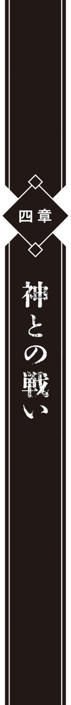
「これは一体どういうことだ！」
志雄と幻獣が交戦を始めてから間もない頃。
幻獣対策局の管制室には、怒号が響いていた。
原因は各方面から上がってくる情報だ。内容は前線の戦いが順調ということと──人員や物資を輸送している後方の羽鯨が幻獣に攻撃を受けているというものだった。
「報告によれば、輸送用羽鯨を襲撃してきた幻獣の多くが幻海や雲に紛れながら行動していた模様です」
「獣風情が小細工を......！」
だが、その小細工によって貴重な羽鯨が襲われているのは事実だ。
主要な幻獣の動向は高速の羽鯨を動員し、常に監視している。とはいえ限りある羽鯨だ。水も漏らさずと言えるほどの精度は無く、まして幻獣たちが身を隠しながら移動していれば発見は困難なのが現実だった。
しかし何よりも予想外なのは、その幻獣たちがわざわざ後方の羽鯨を狙い澄ましたかのように襲うことだろう。その動きはさながら、何者かに指揮されているかのようで。
何かが起きている。この場所からでは予測しえない何かが、現地で。
「............」
だが、と同時に思う。今はそれに悩み囚われている場合ではない。指揮官である男は頭を振り、幾分冷静になった頭で次なる言葉を紡いだ。
「羽鯨の被害状況はどうなっている？」
「襲撃を受けた五機のうち、二機が航行不能になり目的地到達前に不時着した模様。人員の被害は軽微です」
「不時着した羽鯨の人員は、近場の拠点に向かわせろ。搭載していた物資は放棄して構わん。これから飛行予定の羽鯨に護衛の戦技魔装士をつけることも忘れるな」
指揮官は続けた。
「それと全体の戦況はどうなっている」
「王武砦、八百万城郭、赤銅城砦、共に損耗は軽微。戦況は戦技魔装士側が押しています」
「荒炎城砦、負傷者五名。榛荊砦、負傷者三名との報告。防衛の継続は問題ありません」
不測の事態はあった。だがそれでも防衛の布陣は崩れていない。
矢継ぎ早に送られてくる報告は、現地にて戦技魔装士たちが奮闘していることを告げている。上空から戦況を確認している羽鯨からの情報も、それが間違いでないことを証明している。
輸送船を襲う幻獣──気になるところだが、今は護衛をつけるだけで置いておく他にない。
「......住民の避難はどうだ？」
「そちらは変わらず芳しくないようです。避難民に対して羽鯨が足りていない状況で」
「仕方ない。民間の物を徴発して補え」
「局長、しかしそれでは」
「責任は俺が取る」
局員に向かって指揮官は厳しく声を張りあげた。
「俺たちは今、薄氷の上に立っている。これまでのことに間に合ったからといって、これからのことに間に合うとは限らない。終わった後のことなんてのは、終わってからで十分だ」
叱責に局員たちは揃って表情を引き締めた。その場の全員が己の本分を全うすべく心を改め──そこに、異常を知らせる警告音が響き渡った。
「何事だ！」
警報に負けぬよう声を張りあげると、呼応するのは局員たち。
「これは......監視船が高濃度の魔力を観測！」
「高速で移動している......幻獣なのか......!?」
「魔力濃度計測不能──!? 最低でも伝説級の数十倍はあります！」
「観測した船はどれだ！ すぐに映像を回せ！」
「三号監視船！ ──映像、出ます！」
一同が見守る中、正面のメインモニターに映像が浮かんだ。
そして、彼らはそれを見た。
◆◇◆
弧を描く青の刃が、ワイバーンを切り裂いた。迷いのない太刀筋は怪物の首を断ち切り、力を失った肉体は地上へと落ちていく。
「これで最後──と」
うねる突風が頰を掠める。高度にして一八〇メートル。戦殻に刻まれた魔術によって姿勢と高度を維持しながら、志雄は剣の血を振り払った。
地上に散乱するワイバーンの死体は、五体分。余すことなく倒し終えた。何体かは途中で逃げ出すかとも思ったが──仲間を討たれた憤怒が冷静さを失わせたのだろうか、最後の一体まで志雄を攻撃し続けた。もっとも、逃がすつもりもなかったが。
ともあれ戦っている間に羽鯨は空域を北に向かって離脱した。急いで合流しなくては。
そう考えた時、視界の下方で何かが動くのを志雄は感じた。
（──仕留め損ねたか？）
志雄は高度を落とし、地上に降り立った。目の前にはワイバーンたちの死体。警戒を怠ることなくそれらを調べて回る。しかし予想に反してワイバーンは全て死んでいた。
気を張りすぎていたのだろうか。ここに日輪がいたらもっと堂々と構えるべきです、なんて言われたかもしれない。
（......そういえば）
思い返してみれば、こうして一人で幻海にいるのは随分久しぶりだ。
日輪とともに行動するようになったのは、いつ頃からだったろうか。少なくとも獅子神に引き取られた当初、自分は獅子神日輪という人物をまるで意識していなかったはずだ。
自分の中にあったのは、無力な自分に対する苦しみと憤り。それに突き動かされるようにして、己を痛めつけることに腐心した。
その行為に意味などなく、ただの逃避でしかない。馬鹿みたいな話だ。苦しみから逃れるために自らを苦しめるという矛盾。けれどそうすることしかできなかった。自分にはそれ以外に何も無いのだと、思い込んでいた。
──貴方は、独りではありません。
それは、横合いから思い切り殴りつけられたかのような衝撃だった。
思わず顔を上げた時、自分は見た。そこに立つ、黄金の少女の姿を。
それが恐らく本当の意味で、初めて日輪という存在を認識した時のこと。
以来、自分は彼女と行動をともにするようになった。
自分から彼女の傍を求めていたのか、彼女の方が自分の傍に立っていたのか、今となってはもう解らない。けれど、気づいた時には、彼女とともにいるのが当たり前になっていた。
このままずっと一緒にいられたら──そう思ったことは一度や二度ではない。
けれどそれは不可能だった。
なぜなら、自分は決めていたからだ。自分が生きている限り、御霊は終わっていない。自分が生きている限り、皆の意志は受け継がれる。ならば、神話級を倒すのが自分の役目なのだと。
日輪は恩人だ。彼女がいてこそ自分は壊れずに歩き続けられた。ならばこんな無謀な試みに、どうして彼女を道連れにできるだろう。
そして日輪が分家の誰かと結婚するという話を聞いた時、別れの日がきたのだと理解して。
（......なんて、今はこんなことを考えてる場合じゃないな）
軽く頭を振って意識を切り替え、取り出すのは支給された通信機だ。スイッチを入れ、これから合流する旨を日輪に連絡しようとし──砂で削るかのようなノイズが耳朶を叩いた。
無線を耳から離して眉をひそめる。出発前に全ての装備は点検した。頑丈な作りであり、ワイバーンとの戦闘で攻撃を受けることもなく、故障するような要因は思い当たらず──
ワイバーンの死骸が、僅かに動いた。
「────！」
瞬間。
志雄はその場を飛びのくと同時に、銃を引き抜いた。
「火翼烈風！」
剣杖より放たれるのは炎の翼。地に斃れるワイバーンの肉体を瞬く間に包み込み、焼き焦がす。ワイバーンが動く様子はない。それでも志雄が警戒を緩めずにいると、炎の中から逃げるように小さな何かが飛び出した。
「嵐帝領域！」
即座に飛翔し、飛び出した何かを摑む。地面に着地しながら手のひらに収まるほどのそれを見て──その表情が凍りついた。
「────」
手のひらにあるのは、蝗に似た蟲だった。鈍く光る眼を志雄に向け、凶悪な顎をかき鳴らすそれは、黒く、深く、おぞましさすら感じさせた。
「────これ、は」
知っている。
この蟲を知っている。
あの日、この目で見た。この手で戦った。この魂に焼き付けた。
だから知っている。この蟲の存在を自分は知っている。
だが、これがここに有り得るはずがない。
だって、そうだろう。こいつは、この存在は──
「──さて、この邂逅は運命か」
戦慄が、思考よりも早く志雄の肉体を動かした。
右手の蟲を握りつぶして剣を引き抜き、体を反転させながら左手の銃を声の方角へ向ける。
そこに、人影があった。
「この舞台における私の役目は終わり、後は舞台袖から主役の舞を愛でるのみのはず」
それを一言で表すのならば、闇だった。
その輪郭は人型で、纏う衣服は人が着るスーツ。
だが衣服から覗く手足や顔は異様だ。顔に鼻も口も存在せず、体表は砂塵のようにざらつき、常に蠢いている。その色合いは闇を凝縮したかのようなおぞましさ。目深まで被った帽子の隙間から、鈍い眼光だけが爛々と光っている。
「だというのに、君と私はこうして出会った。そこにいかなる意味があるのか」
人の形をしているだけで人ではない。誰もが一目でそう確信する存在。
ならば人語を解するこの異形は何者なのか。
その答えを、志雄は知っていた。
「どうやら君が教えてくれるようだな」
闇の中、鈍い光が志雄を見据える。
余人ならばそれだけで臆してしまいそうなほどの圧力。
だが、志雄の口から絞り出すように漏れたのは激情を孕んだ声だった。
「どうして」
剣杖を握りしめる両手が軋む。空気が今にも発火しそうなほどに張りつめる。
「どうして、お前が生きている」
志雄の瞳が紅蓮に染まる。
燃え盛る魂の発露。漆黒の闇を前にして、瞳の炎に一切の陰りはなく。
「お前は確かに死んだはずだ────アバドン！」
烈火の咆哮とともに、志雄は異形の男に向かって地を蹴った。
◆◇◆
「詠唱──」
標高にして七〇〇メートル。
緩い傾斜の続くその山肌で、日輪は剣杖を振るっていた。
「轟雷千尾！」
刀身から雷の鞭が迸り、眼前に迫る土塊のごとき中型の幻獣を打ち据える。幻獣は苦悶の声をあげ倒れ伏せ、さらに雷鞭は周囲にいた小型の幻獣に次々に絡みつき、その雷撃を浴びせて回る。
「だいぶ削れたな！ 一旦下がるぞ！」
指揮官である戦技魔装士の声が響き、日輪は応じて踵を返した。
振り向いた先に聳え立つのは、高さにして十メートルもあろうかという石壁だ。左右に長く伸びるその壁目掛けて日輪は走り抜けると、手前で跳躍。壁の凹凸を利用して壁上まで駆け上がった。
同じように他の戦技魔装士も次々と壁を駆け上がり、代わりに壁の上に詰めていた戦技魔装士が壁の外に向かって攻撃を開始する。
「よし、前線のメンバーは降りて体を休めろ。すぐに出番は回ってくるから、気を抜くなよ」
指揮官に従って戦技魔装士たちは壁の内側へと降りていく。その先にあるのは人の手で作られた街並みだ。
「日輪、大丈夫だった!?」
壁の階段を降りた日輪に声をかけたのは鈴だった。
「ええ、問題ありません。霧子さんは？」
「あっちで負傷者の手当てしてる。私ももうすぐそれに参加しなきゃだけど」
「応急手当ての訓練を受けておいて幸いでしたね。私がケガをした時はお願いしますよ」
「うん、任せてよ。でもできればケガとかしないでね」
「もちろんそのつもりです」
言葉を交わしながら二人は街中に設けられた補給処へ向かう。
二人が今いるこの場所は、防衛拠点である榛荊砦だった。
人口にしておよそ二万三千。砦級拠点としては小規模であり、石造りの街並みとそれをぐるりと囲う石の防壁は典型的な人類拠点の構造をしている。
あのガーゴイルとワイバーンの襲撃から逃げ延びた羽鯨だったが、手ひどく損傷を受けたため航行不能になり、不時着。幸いにも榛荊砦がそう遠くない地点にあったため、羽鯨を放棄して合流したのだ。
元々この砦に配属される予定だった日輪たちはそのまま組み込まれた。中には他の砦に回される予定の戦技魔装士もいたが、羽鯨が壊れた以上はどうにもならず、また貴重な戦力を遊ばせておくわけにもいかない。乗っていた戦技魔装士たちは総出で防衛に当たっている。
（不時着は予定外でしたが、それ以外は順調ですね）
防衛の手順はシンプルだ。街を囲む石壁の上から小型幻獣を狙い撃ち、石壁を破壊しうる中型から大型の幻獣に対しては前線部隊が壁を降りて討伐し、壁の内側に戻る。この繰り返しである。今のところはこれで被害も少なく、幻獣を撃退できている。
とはいえ、不可解に思う部分もある。拠点に迫る幻獣を迎撃している内に、彼らの動きに二種類あることに日輪は気づいていた。一つは拠点には目もくれず壁の外を通り過ぎようとする幻獣。もう一つは人や拠点に積極的に攻撃を仕掛けに来る幻獣。
前者についてはまるで何かから逃げるようであり、後者については何かに操られているかのように執拗だ。現状、素通りする幻獣については追撃をせず、攻撃してくる幻獣だけを相手にしているが──
（まあ、考えるのは後回しですね）
街の避難施設には多くの民間人がいる。城壁を破壊されて幻獣の侵入を許せば犠牲者も出るだろう。そうさせないためにも、今は城壁を上手く守りながら戦うことに集中しなくては──そんなことを思っていると、鈴がぽつりと呟いた。
「志雄君、大丈夫かな......」
羽鯨を逃がすために一人、空に残った志雄。彼は消息不明として扱われていた。
無線で何度も連絡しようとしているが、返事は無い。また救援を出す余裕もないため生死を確認しにいくこともできない。
「心配無用です。志雄の生存能力は、私よりもずっと上ですから」
「そりゃ志雄君が強いのは知ってるけど......こんな緊急事態なのに一人で置き去りなんて」
「幻海内で一時的に別行動を取るのはよくあることですし、大丈夫ですよ」
その言葉に偽りはない。しかし同時に日輪は滲むような不安を胸中に感じていた。
志雄がワイバーンごときに後れを取るとは思わない。だが、ならばなぜ戻ってこないのか。そしてなぜ連絡が取れないのか。自分の見えない場所で何かが動いている──そんな気がしてならないのだ。
（信じているのに不安に思うのは、矛盾でしょうか......）
全てを放り出し、彼が残った場所に駆けつけたい気持ちもあるが──今ここで自分が勝手な行動を取るわけにはいかない。
「前線部隊は今すぐ壁に向かえ！ 大物がきたぞ！」
突如として響いたその声に、日輪は迷わず踵を返した。
「日輪」
「大丈夫です。行ってきます」
不安を浮かべる鈴に微笑みかけると、日輪は今しがた通ってきた道を駆け抜けた。
壁の上に登れば、熟練の戦技魔装士たちが既に待機している。見つめる先は南東。関東方面。傾斜が続く山肌の数百メートル先にある幻海の水際。そこから巨人のごとき幻獣が一体、今まさに顔を出そうとしていた。
「ダイダラ......大物だぞ！」
「あいつと小型幻獣で人員を分散する必要があるな」
「すぐに準備しろ。城壁に近づかれたら一発で壊されるぞ」
口々に言う戦技魔装士に紛れて、日輪はダイダラを観察し──不意に背筋が粟立つのを感じた。
（これは......!?）
指先が震える。呼吸が荒くなる。臓腑に突き刺さるようなプレッシャー。
現れたダイダラは成体だ。正真正銘の伝説級。小さな拠点なら単独で破壊できるような怪物。
だが、違う。あれではない。あの程度の化け物に重圧を感じる理由などどこにもない。
何かがいる。この身に戦慄を抱かせる何かが。
そう思い、目を凝らし、気づく。
ダイダラの背後。幻海の中から覗く、巨大な影に。
そして幻海の中でその影が蠢き──日輪の直感が、最大級の危機を告げた。
「全員伏せてっ────！」
次の瞬間、迸る閃光が榛荊砦を貫いた。
◆◇◆
神話級幻獣。
後にそう呼ばれるようになる七体の幻獣が初めて確認されたのは、今から三百年ほど前になる。
その存在には謎が多い。幻素の蔓延により、人類が平地での活動が困難になった混乱期に突如として現れ、人類に対して猛威を振るったと言われる。
どこかの国が作った生物兵器か、神が遣わした神罰の代行者か、はたまた宇宙より飛来した侵略者か──様々な憶測が飛び交う中でその七体の幻獣は暴れ続け、百年ほど経った頃に現れた時と同じく突然姿を消した。
果たして神話級とは何だったのか。どこから生まれ、どこに去り、何を目的としていたのか。そもそも幻素がまだ薄い時代において活動していた彼らは、本当に幻獣だったのか。
当時、神話級の研究を進めていた機関は多くあったが、神話級の消失ともに中断され、混迷の時代の中で資料の多くは散逸した。その資料を集めていた御霊一族も滅び、今や彼らを追う者など誰もいなくなった。
ただ一人。
「詠唱──」
御霊志雄を除いて。
「暴風の刃！」
青の刃に風を纏わせ、志雄は眼前の異形──アバドンに斬りかかる。
だが刃が届く刹那、異形の全身にさざなみが走った。目を見開く志雄の前で崩れた肉体は蝗のような無数の羽蟲へと変貌する。
「────嵐帝領域っ！」
戦殻の魔術を起動。志雄は斬りかかろうとしていた肉体を強引に真横へと滑らせる。そして一瞬前まで志雄がいた場所を無数の羽蟲が駆け抜けた。
羽蟲はそのまま雪崩れ込むように上空へ向かい、再び集結。数秒とかからずに完成したのは、先ほどの異形の輪郭だった。
「良い反応だ」
空中に佇みながらアバドンは嗤った。
「大抵の人間は、今ので骸を晒すのだがな」
「......ああ、そうだな。知ってるよ」
「ほう？」
アバドンの眼に暗い興味の光が宿る。
しかし志雄はそれ以上口にせず、アバドンを睨みつけながら、意識を羽蟲が掠めた地面へ向ける。先ほどまで平らだった地面が削り取られていた。あの羽蟲の持つ強な顎に嚙み砕かれたのだ。もしもあのまま斬りかかっていれば、己の肉体が同じ運命を辿っただろう。
だがその痕跡を見て志雄が抱いたのは恐怖ではなく──確信と、怒り。
（この性質......間違いない、あの日と同じ......！）
外観が似ているというだけではない。人語を解するこの幻獣は、紛れもなくあの日に見たアバドンと同じだ。
生きていたのか。いや、確かに両親が刺し違えて倒したはずだ。しかし現実として目の前にアバドンが存在する。この矛盾はどういうことか。あの日の光景が何度も脳裏で瞬き、その度に疑問と怒りがわき上がるのを志雄は感じた。
「では、これはどうかな」
アバドンの腕から黒い砲弾が放たれた。高速で飛来するそれは羽蟲の塊だ。志雄は即座に飛翔し上空へ逃げるが、砲弾は黒い尾を引きながら志雄を追尾する。さらにアバドンは次々と砲弾を志雄目掛けて放った。
「詠唱──炎翼烈風！」
銃から炎が放たれた。空に広がる炎の翼は迫る蟲塊に絡みつき、焼き尽くす。さらに志雄は虚空に留まるアバドンにも炎を放ち──直撃する刹那、アバドンの体が帳のごとく広がり、炎の翼を飲み込んで嚙み砕いた。
そしてすぐさま元の人の形に戻る。体の随所から炎の残滓を吹きこぼすアバドンには、まるで揺らいだ様子がなかった。
「......」
この底知れないおぞましさ。六年前にも抱いた感覚に、志雄は歯嚙みする。
「──何やら、思い悩んでいるようだな」
不意に、アバドンは興味深げに志雄を見据えた。その全身にさざなみのような揺れが刻まれる。
「せっかくの出会いだ。迷いで剣先がぶれるようでは無粋というもの。質問があるのなら答えてあげよう。確か......どうして私が生きて」
「喋るな、化け物」
志雄は銃口をアバドンに向ける。
「問いただすことはあるが──まずはお前を縊り殺してからだ」
「ふふ、素晴らしい。そうこなくては......だが君にそれができるのかな？」
嘲るような声に志雄の思考は沸騰しそうになる。だが同時に、脳裏の片隅にある醒めきった意識が冷静に現状を判断する。
志雄の持つアバドンの情報は完全とは言えない。その強さは目の当たりにしたが、未知の切り札や戦法を持っていてもおかしくはない。
それに加えて、対応する共鳴魔術も存在しない。アバドン用の魔術は未完成のまま両親によって使用され、失われている。もっとも、あったとしても隣に日輪が居ないため行使は不可能だ。腰元に提げてある、スイッチを入れたままの通信機は、今もノイズを吐きだしている。
（────だが、逃げるのは無しだ！）
状況が十全でないとしても、今ある自身の全霊を以て仇敵を倒す。志雄は覚悟を決めた。
「暴風の刃──螺旋衝！」
青の剣から螺旋の風が迸る。それはさながら竜巻をその手に摑んでいるかのように荒々しい。さらに志雄は左手の銃をアバドンに向けた。
「詠唱──炎翼烈風！」
「芸が無いな」
銃口から放たれる業火。眼前に迫る炎の翼を前に、アバドンは再び己の肉体を膨らませ──
「お前がな......！」
アバドンの視界が炎で遮られた刹那。志雄は竜巻を纏う剣を投げ放った。
意図に気づいたアバドンの眼が初めて揺らぐ。だが遅い。高速で飛来した螺旋の剣風は、炎ごとアバドンの上半身を消し飛ばした。
残ったアバドンの下半身が空中でぐらりと傾く。落ちるか──そう思った志雄の前で半身は無数の羽蟲へと分散した。
まだ生きている。志雄の意志に従って手元に戻ってきた剣を摑み取り、銃を構えるが──細かく、広く散らばった羽蟲を前に照準が定まらない。それでいて数十匹ほどの羽蟲が、その強な顎で志雄の皮膚を切り裂こうと周辺を飛び回る。
「......チッ！」
志雄は空を飛びながら纏わりつく羽蟲を炎で焼いて回る。そうしながら意識は方々に散った羽蟲へ。奴らはどこかでまた集結するはず。そう当たりをつけながら羽蟲たちの軌跡を追っていると、ふと、羽蟲の中に鈍い輝きを目にした。
それは紫色の、宝石のような物体。そして志雄が見つめる中で、その宝石を中心に羽蟲たちが集結し、再び人の形を取り戻した。
「なかなか驚かせてくれる。人間にこれほどの使い手がいるとは」
アバドンはおぞましい眼光を志雄へと向けた。
「次は私の手番だな。──丁度到着したようだ」
瞬間、志雄は視線を上に向けた。幻素の霧がかかった太陽。それを背負うようにして志雄目掛けて落下する巨影。それがワイバーンだと気づくよりも早く志雄が剣を振り抜くと、飛竜の肉体が血を撒き散らしながら左右に分かれ──その血と影の中から飛び出した三体のガーゴイルが、志雄に組みついた。
「ぐっ────!?」
組みつかれた志雄は勢いのままガーゴイルとともに落下。地面までの距離は二十メートル。ガーゴイルの鋭利な爪が志雄の四肢に食い込み、その右手から剣が離れる。しかし剣は重力に反して上方へ飛翔すると、反転。急降下して志雄の左腕に組みつくガーゴイルの背中を貫いた。
左腕を摑むガーゴイルが力を失う。志雄は即座に左手の銃を残り二体のガーゴイルに向けた。
「炎翼烈風！」
銃から炎が放たれた。二体のガーゴイルがたまらず離れる。自らの戦殻も焼かれたが構わず着地。勢いを殺しきれずに地面を滑り、その手元に青の剣が舞い戻る。
そして志雄が虚空のアバドンを睨んだ時、その周辺には幻素の霧からにじみ出るようにして四十体近くの幻獣が出現していた。
現れた幻獣はガーゴイルやワイバーンなど、全て翼を持つ種族。そして幻獣たちの顔は一様に虚ろで、それは羽鯨を襲ったワイバーンたちとまるで同じ。
（これは......そうか、羽鯨を襲ったのは......！）
先ほどワイバーンの死骸から飛び出したアバドンの蟲。目の前でアバドンの元に集う虚ろな幻獣たち。そして六年前、アバドンとともに現れた無数の幻獣。志雄は一つの確信に至る。
「まさかとは思っていたが、本当に持っているとはな......他の幻獣を操る能力を......！」
アバドンは嗤った。
「舞台に立つのが主役だけでは味気ない。彩る端役が必要だろう？」
そう言うとアバドンが軽く指を振った。すると傍にいた幻獣の肉体が震え、その耳朶から血が噴き出す。目を見張る志雄の前で幻獣の耳朶から這い出てきたのはアバドンの羽蟲だった。
志雄は不快感を隠しもせずに言った。
「悪趣味だな。そいつらはお前の仲間じゃないのか」
「解りあうために必要な努力だよ」
アバドンは幻獣の肩に手を置いた。
「本来ならばこれでもう少し舞台を盛り上げようと思っていたが、君が相手ならば使い潰すのも一興だ。──まあ、仲間を呼べない君には少々不公平かもしれないが」
「......通信できないのもお前の仕業か」
「せっかくの予期せぬ出会い。横やりなど無粋だと思わないか？」
アバドンは愉快そうに肩を揺らした。理屈は解らない。だが、アバドンが周辺の無線を封じられるのは確かなようだ。
「さあ少年......たった一人でこの数の差を覆せるかな？」
「......」
たった一人。
そうとも、ここに日輪はいない。自分一人でこの幻獣たちを相手にしなくてはならない。
けれど自分は彼女に向かって言った。すぐに合流する、と。
約束を破るわけにはいかない。そんなことをしたら、彼女はきっとへそを曲げる。
ならば、やるべきことはただ一つ。
「────覆せるか、と言ったな」
恐らく力押しでアバドンを倒すことは難しいだろう。
「侮るな。この程度の戦力差、とうの昔に乗り越えた」
仕留めるには、敵の虚を突く必要がある。
「見逃すなよアバドン。──剣が届くのは、一瞬だ」
志雄の紅の瞳が、仇敵を見据える。
「嵐帝領域──黒鷹！」
刹那、志雄の肉体が搔き消えた。
同時に血飛沫。振りぬかれた青い剣。跳ね飛ばされた幻獣の首。それは圧倒的な加速の暴力。志雄は黒い影と赤い眼光の尾を引きながら、稲妻のごとく鋭角に空を駆け巡る。
幻獣たちは動けない。神速をその身に宿した志雄を眼に捉えることすらできず、次々と首を刎ね飛ばされていく。そして出現した幻獣の最後の一匹を屠った時、不意に黒い稲妻は動きを止め──
瞬間、アバドンの真後ろに躍り出た。
「────螺旋衝！」
魔術を発動。アバドンの後ろを取った志雄は、風の乱流を迷うことなく振りおろし──
刃が届く寸前、アバドンが炸裂した。
飛び散る無数の羽蟲。猛然と広がる漆黒の帳。至近距離で生じたそれに全身が絡め取られる。瞬く間に装甲が嚙み砕かれ、全身から焼け付くような痛みと血が噴き出る感触が脳髄に届く。しかし志雄は一切判断を狂わせることなく、帳の間隙から外へ脱出しようと空を駆け抜け──その眼前に、アバドンの輪郭が生じた。
「幕引きだ」
この程度か、と失意を孕んだ声とともにアバドンの手が志雄の喉に絡みつく。次の瞬間には志雄の首は嚙み千切られるだろう。銃を持つ左手の反応は遅く、防御は間に合わない。そして彼の右手には何も持っていない。
「言っただろう」
そう、何も──
「届くのは一瞬だってな！」
「ッ────」
背後からの衝撃がアバドンの胴体を貫いた。
驚愕とともに己を見下ろした彼の眼には、胴体から突き出る青の刃。そして露出した紫の宝石。剣を投げて回り込ませて──結論に至った時には、銃口が露出した宝石に向けられていた。
宝石と銃口がぶつかり、小さく金属音が鳴り響く。
「──紅蓮戦哮！」
魔術で編まれた炎の槍が、アバドンの宝石を撃ち貫いた。
◆◇◆
「────見事だ」
地上に落ちたアバドンは、傍に立つ志雄に向かって言った。
「核を壊されてはこれ以上肉体を維持できないな。君の勝ちだ」
その言葉に偽りはない。アバドンの輪郭を構成する羽蟲が次々と力なく地面に崩れ落ち、さらに塵へと変貌していく。この様子ならば、あと数分もしないうちにアバドンは消失するだろう。六年前と同様に。
対する志雄は息を荒らげながらアバドンに銃を向けていた。全身からの出血と、連続した魔術行使による消耗が肩に重く圧し掛かっていた。
それでも、既にアバドンが呼び出した幻獣たちは全て倒している。戦況は覆らない。志雄の勝利は間違いがなかった。だが──
「随分と浮かない顔をしている」
アバドンが嘲るように嗤った。指摘する通り、志雄の顔は苦々しい。それが体力の消耗によるものではないことを、アバドンは見抜いていた。
「当てて見せよう。──この程度でこいつが倒せるはずがない、だろう？」
「っお前......！」
歯嚙みする志雄だが、アバドンの言葉は正鵠を射ていた。
六年前に刺し違えた時は、多くの犠牲が出た。その神話級幻獣アバドンが、たかがこの程度で討てるものなのか。──まして、自分の手には共鳴魔術さえなかったというのに。
「楽しませてくれた礼に教えてやろう」
アバドンは言った。
「君は確かに私を倒した。──そう、アバドンの分体たる私を」
志雄が目を見張る。その紅の瞳に確かな動揺が走った。
だがそれもつかの間、即座に理性を取り戻す。分体。それならば腑に落ちる。アバドンが真実を口にしているとは限らないが──限りなく正解に近いという直感が志雄にはあった。
「そして六年前......記憶は共有されていないが、上位の分体がその時期にこの国で消滅したとは聞いている。つまり、そういうことなのだろう」
「お前......お前らのせいで、皆は......！」
「ふふ......そうか。どうやら相応の犠牲があったようだな。ああ、同情してやろう。君のお仲間は、見事なまでの無駄死にだ」
「............」
ミシリ、と剣杖を握る手に力が籠る。
だが、怒りに我を忘れるわけにはいかない。
今すべきことは、問いかけるべきは、一つ。
「......本体はどこにいる」
銃を突き付けながら志雄は問う。そんなものが脅しになるはずがないと知りながらも。
そんな志雄に向かって、さて、とアバドンは笑いながら言った。
「本体は忙しい。今この地にいるのは分体だけだ。だが君が本体を追い続けるのならば、いずれは出会うだろう。既に新たな幕は」
「火翼烈風」
灼熱の炎がアバドンを覆い尽くした。
炎に包まれ焼け落ちていくアバドンを睨みながら志雄は言った。
「御霊志雄。それがお前たちを滅ぼす者の名前だ。──必ずお前を、お前たちの神話を終わらせてやる」
「神話を終わらせる──か──だが果たして──君は今日を生き延び──られるのか────」
耳に残る哄笑を残して、アバドンは焼失した。
志雄は銃を降ろした。そして焼け焦げた地面を一瞥すると──不意に、崩れ落ちるようにして地面に片膝をついた。
「くっ......！」
体が重い。出血はほとんど止まっているが、流れ出た血はかなりのものだ。しかしこの重さは何も肉体だけが原因ではない。体以上に心が重くなっているのを志雄は感じていた。
（父さん......母さん......）
アバドンと刺し違えた両親と仲間たち。しかしあの日に倒されたのは本物ではなかった。志雄が修行に明け暮れている間も、アバドンはのうのうと生きていた。挙句、あれほど血の滲むような日々を過ごしてなお、アバドンの分体相手にこの体たらくだ。
（僕は......）
できるのか、本当に。
こんな有様で、全ての神話を終わらせるなど。
ああ、だがやらなくてはならない。それが自分の使命だから。
どんなに無謀でも、どんなに無茶でも、たった一人でも──
──この獅子神日輪が、貴方の横に並び立ちましょう。
「────」
不意に、声を聞いた。
それはきっと幻聴だ。遥か昔に耳にした、この場にあるはずのない声だ。
けれど、その声で心臓が脈打った。力強く、己を鼓舞するように。
「......はは」
そうだ、何を馬鹿なことを考えていたのだ。
自分は一人じゃない。自分には、御霊日輪という支えてくれる片翼がいる。
そんな大事なことを忘れていただなんて、日輪に知られたら全力で殴られても仕方ない。
「ああ、そうだ......」
アバドンは生きている。神話級は予想よりもずっと強敵だった。だが、それだけだ。何のことがある。日輪がこの場にいれば「血が滾りますね」と一言で片づけていただろう。あるいは「掲げる首が増えますね。喜ばしいことです」とでも言ってのけるか。
御霊志雄には御霊日輪がいる。
全てを失った自分にとって、誰よりも大事な人がいる。
両親の死は無駄死になどではない。決して無駄になどしない。日輪とともに、必ずや意味があったのだと証明してみせる。
「────よし」
志雄は自分の顔を両手で軽く叩く。
いつまでもこうしてはいられない。自分にはまだやることがあるのだ。体のダメージなど今は二の次。ともかく行動に移さなくてはならない。
「そういえば......」
幻獣の大侵攻。これを操っていたのはアバドンだったのだろうが、討ち取ったことで止まったのだろうか。あるいは本体が残っていれば操作は継続されるのか。
それに確かアバドンは自分の他に主役がいるようなことを言っていた。ということは、他に何か重要な存在がいるということだろうか。
そこまで考えて、予感が過ぎった。まさか、と思う。分体とはいえ神話級幻獣アバドンを差し置ける主役。ならばその存在は──
「っ────!?」
瞬間。
幻素の霧の向こうから強烈な光が生じたかと思うと、無線機から凄まじいノイズが迸った。
「これは......!?」
腰元の無線機に眼をやり、次に閃光が生じた方を見る。この距離で、幻素越しに届くということは凄まじく強烈な光源。方角は北。──志雄の乗っていた羽鯨が離脱した先。そして日輪と繫がるはずの無線から響くノイズ。
ざわり、と背筋が粟立った。
「日輪────！」
その先にいるはずのパートナーの名前を口にして、志雄は飛翔した。
◆◇◆
喧騒が聞こえる。
それは遠く、おぼろげな響き。
けれど次第に近く、ハッキリと聞こえるようになり、それがすぐ傍のものだと意識した時、八城鈴は閉じていた目を開いた。
「......あ......れ？」
霞む視界に映ったのは、瓦礫だった。
どうしてそんなものがあるのか解らず、数秒ほどジッとそれを見つめて、ようやく鈴は自分が地面に倒れていることに気が付いた。なぜ──そう思い立ち上がろうとした途端、全身に激痛が走った。
「痛っ──」
思わず顔をしかめ、自分の体を見下ろす。目に入ったのは、石片と粉塵が降り積もった自分の肉体。なんだこれ、と思った。確か自分は日輪と別れた後、補給所で霧子と合流して負傷者の治療に向かおうとして、それから──それから──
「おい！ 大丈夫か！」
「ひゃ!?」
背後から届いた怒声のような呼び声に慌てて振り向く。するとそこには見知らぬ戦技魔装士が立っていた。その側頭部からは、赤い血がしたたり落ちている。
「立てるか!? 立てるならすぐに街の中心部に移動しろ！」
「え、えっと」
「説明してる暇はない！ 急げ！」
そう言うと戦技魔装士はすぐさま走り去ってしまった。鈴は啞然としながらそれを見送り、今のは何だったのかと改めて辺りを見回し──ようやく、それに気が付いた。
「なに、これ......」
そこに、惨状が広がっていた。
石造りの端正な建物は崩落し、石畳が敷き詰められた地面は抉られ、そこかしこに燃え盛る火の気配。さらには倒れ伏す人、苦痛の声をあげる人、それを助けようと走り回る戦技魔装士たち。呆然とそれを見つめる中で、口の奥に感じる埃と鉄の味がやけに鮮明だった。
「夢、じゃない、よね......」
むしろそうあってほしいと願う鈴だが、全身の鈍痛がそれを否定する。何が起きたのか解らない。解らないが、何かが起きて自分は意識を失っていたのだ。そう、そしてきっと自分だけではなく──
「......霧子！」
親友の存在に思い至った鈴は、慌てて己の周囲に眼をやった。周囲の瓦礫をどかし、霧子の存在を探し求める。そして程なくして瓦礫の中に埋もれる霧子の姿を発見した。
「霧子！ 大丈夫!?」
声をかけるも返事はない。臓腑にスッと冷気が差し込む。まさか、まさかそんなはずはない。祈るように瓦礫を押しのける。すると現れたのは彼女の上半身。戦殻に包まれながらも僅かに胸が上下しているのが解った。
生きている。その事実に安堵し、思わず瓦礫を持つ手から力が抜けそうになり慌てて瓦礫を放り投げる。とにかく彼女を起こして移動しなくては。そう考えて彼女を瓦礫の中から引きずりだそうとして──その腹部に突き刺さる、石片を見た。
「あっ......」
丁度戦殻の隙間に入り込むような位置。傷口からは今もなお血が染み出している。どうして気づかなかったのか。霧子の顔色からは血の気が失せている。
手が震えた。どうする。どうすればいい。何かしなくては。けれど何をすればいい。意識を失った親友を前に思考は纏まらず、逸る心臓にあわせて呼吸が荒くなる。
「だ、誰か」
喉から漏れ出たのは、震えた声音。
「誰か、助けて！」
縋るように発せられた声。惨劇が広がるその場所において、その声は哀れなほど弱く、すぐさま喧噪のなかに溶けていき──
「鈴さん！」
飛びこむように、御霊日輪が現れた。
「ひ、日輪！」
思わず声が上擦った。目じりから涙が零れそうになる。この地獄のような光景の中で、日輪だけは凛とした気風を失わずにそこにいた。
「良かった、無事でしたか。どこかケガは」
「わ、私はいいの！ それより霧子が！」
鈴に示され、日輪は倒れる霧子の横に膝を突いた。素早く戦殻を脱がせて腹部を露出させ、突き刺さった石片の周囲を確かめる。判断は即座に下した。
「急所は外れていますね。まだ間に合います」
「ま、間に合うって」
「石は抜かずに患部の周りを布で押さえて、彼女を抱えて街の中心に向かってください。そこに救護所も設営されているはずですので、到着したら指示に従ってください」
「で、でも」
「鈴さん」
弱気を浮かべる鈴に、日輪は厳しく言った。
「でも、などと言っている余裕はありません。やってください。霧子さんのために」
「っ......」
鈴は息を呑み、それから目じりに浮かんだ涙を拭って言った。
「解った。やる。やってみせる」
日輪は穏やかに微笑んだ。
「では、お任せします。私は他にやることがありますから、ここでお別れです」
「待って日輪、やることって......」
「ノックの仕方も知らない無作法者に、礼儀を叩きこまなくてはいけませんから」
そう言うと日輪は立ち上がり、刀を抜いた。白刃が陽光を浴びて鈍く輝いた。
「鈴さん、また後ほど」
日輪は駆け出した。
背後で鈴が自分の名を呼んだが、振り払う。
「詠唱──獅王戦陣！」
加速。魔術によって強化された身体能力が超人的な速力を生む。そうして走り抜ける日輪の眼に映るのは半壊した街並み。山麓から街の背後まで、榛荊砦のおよそ三分の一が山肌ごと吹き飛ばされていた。
全ては幻海から放たれた、一筋の光線によるものだ。
（調子は七割、といったところですか......）
自身の体調を日輪は冷静に分析する。防壁で危険を感じた日輪は警告と同時に防御用の魔術を起動し、幻海から発射された光線の直撃を免れた。判断が僅かに遅れていれば影も形も無くなっていただろう。
しかし無傷とはいかない。その余波によって防壁ごと吹き飛ばされ、地面に叩きつけられた。どうにか動けるまで回復したが、纏わりつくような体の重さは拭いきれない。
だが、それでも行かなくてはならない。
もしも再びあの光を放たれれば、この砦は壊滅する。
「轟雷千尾──！」
破壊された防壁が見える。そこにいるのは何体もの小型の幻獣たち。もはや瓦礫となった壁を超えて次々と砦の中に入り込んでいる。だが日輪はそれらに眼もくれなかった。彼女が注視するのはその奥。今まさに防壁の残骸を超えようとしているダイダラだ。
小型は街中の戦技魔装士でも対応できる。だがダイダラだけは足止めしておかなくてはいけない。
「少々、荒っぽくいきますよ──！」
雷鞭がダイダラに絡みついた。両腕に力を入れ、その巨体を強引に引き寄せる。踏み込んだ足が地面にめり込んだ。そして捕まえたダイダラごと身を回転させると、ちょうど防壁があった地面の上に叩きつけた。
「詠唱──氷燐散牙！」
叩きつけたダイダラが身じろぎする中、魔術を起動。刀身に纏わりつく雷気が消失し、代わりに生じるのは凍てつく冷気。冷気は瞬く間に氷となり、一本の槍の形を成した。その槍を片手に日輪は跳躍。倒れ伏せるダイダラの胸部装甲の隙間に氷槍を突き刺した。
「──咲雪崩！」
瞬間、氷槍から莫大な冷気が放たれた。槍を刺されたダイダラの肉体が瞬く間に凍りつき、さらにダイダラを中心にして、天を衝くような氷柱が次々と形成される。そして氷柱は丁度崩落した防壁を塞ぐようにして左右に広がると、やがて止まった。
「終わるまで、そこで大人しくしていてください」
剣杖を引き抜き、日輪はダイダラに目もくれず走り出した。凍りついたダイダラと氷の防壁は数十分ほど持つだろう。それだけあれば砦の方も体勢を建て直せるはずだ。──あの光の攻撃さえなければ、だが。
（気配は......まだある）
山を下った先、幻素に覆われた大地に変わらずそれはいる。果たして鬼が出るが蛇が出るか。日輪は意を決して幻海の中に飛び込んだ。
そして。
「────」
幻海の中、抉られた地面の始点。
そこに到達した日輪は、足を止めた。
「これは......」
見開かれた碧眼に映るのは、巨大なる存在。
幻素の霧の中に浮かぶそれは、あまりにも美しく、荘厳であり──異様なる怪物。
かつて、獅子神に伝わる記録の中で、その姿を見たことがある。
曰く、〝堕ちた妖星〟。曰く、〝閃輝の竜〟。曰く──〝永劫水晶〟。
ああ、御霊日輪は知っている。
この幻獣の名を。水晶で編まれた肉体を持つ、この一体の竜の名を。
そう、すなわち──
「神話級幻獣、ヴリトラ────！」
その少女の言葉に応えるかのように。
ヴリトラは、雷鳴のごとき雄叫びをあげた。
◆◇◆
強いということは、一目で解った。
頭頂から尻尾の先までおよそ五十メートル。
巨大な水晶塊から削り出したような、滑らかでかつ半透明の体軀は、あらゆる芸術の極みといえるような優美さを持っている。
しかし無論、彼の存在は美しいだけではない。強な四肢と重厚な翼。長い首の先にある頭部からは、万物を睥睨するかのような凄絶な眼光。まさしく神話の名を冠するに相応しい威容を放っていた。
その在り様は、さながら水晶の砦。つけ入る隙など見当たるはずもなく、余人ならばただただ圧倒され、蹂躙される他にないだろう。
だが、日輪に迷いは無かった。
「轟雷千尾！」
魔術を起動。剣杖から迸る雷鞭。それを手に日輪はヴリトラに向かって地を蹴った。
ヴリトラまでの距離、およそ三百メートルを一瞬で踏破。
狙うべきはその長い首。射程に入ると同時に無数の雷鞭が竜の首へと絡みつき──弾かれた。
「────っ!?」
日輪の眼に驚愕が走る。手に残るのは異質な感触。これは、と思う間もなくヴリトラの眼が日輪へ向けられた。
「オオオオオオオオオオオオオオオオ！」
大地がひび割れるほどの咆哮が轟いた。もはや衝撃波に等しいそれをまともに浴びた日輪の体が大きく吹き飛ばされる。同時にヴリトラの翼がはためいた。水晶で形作られた無数の羽が空中に飛び散ると、意志を持つかのように日輪目掛けて飛来する。
（受け──いや、回避！）
吹き飛びながら体勢を立て直し着地。間を置かず転がるように横へ飛びのいた。数瞬の間を隔てて先ほどいた場所に水晶の羽が弓矢のごとく突き刺さり──次の瞬間、羽が大爆発を起こした。
地面を抉り、粉塵を巻き起こすその威力を目の当たりにした日輪は舌打ちを一つ。当たれば致命傷は免れない。加えて羽の弾丸は走る日輪を追って次々と放たれる。
「厄介な芸当をっ！」
日輪が雷鞭を振るった。水晶羽とぶつかり合い、爆発を生む。撃ち落とせる。しかし、数が多い。さらにヴリトラがその巨大な顎を開いた。喉奥に渦巻く白色の息吹。直感。日輪が跳躍すると同時にヴリトラは濃霧のごときブレスを放出し、それを浴びた大地が、瓦礫が、草木が、一瞬にして水晶と化した。
（これは──！）
俊敏に動き続ける日輪に向かって、縦横無尽に撒き散らされるブレスと間断なく発射される水晶羽。そのどちらも致死の威力にして永続的な回避は困難。このままでは遠からず追い込まれる。
ならば取るべき手段はただ一つ。
（踏み込む──！）
ヴリトラの横を回り込むように走っていた日輪は転身、水晶竜に向かって地を蹴った。ヴリトラの巨体を逆手に取り、その懐に潜り込む。そうすれば羽もブレスも簡単には届かない。
視界の上、迫るは羽の形をした水晶の爆弾。その軌道を見切り、搔い潜り、直撃する物は雷鞭で撃ち落とす。前後で爆音が響く中、ただ前へ。
ヴリトラの顎が向けられる。ブレスの予兆。こちらの方が速い。その巨体の下に滑り込める。確信とともに、日輪はブレスによって結晶化した地面を踏み砕きながらヴリトラに迫り──突然、甲高い音とともにヴリトラの全身が光り始めた。
ざわり、と日輪の身に戦慄が走る。その光は瞬く間に結晶化した地面や草木にも伝わり──次の瞬間、大地が爆砕した。
迸る轟音。舞い上がる粉塵。衝撃波と水晶片が撒き散らされる中、日輪の姿は爆風の中に搔き消えた。
「────オオ」
ヴリトラが僅かに唸った。己の周囲全てを消し飛ばすような爆風に身を置きながら、その水晶の肉体には傷一つ刻まれていない。
そして噴煙が舞い上がる中、ヴリトラはしばし日輪がいた場所を見つめるが──興味が無くなったのか、視線を榛荊砦へと向けてゆっくりと顎を開いた。
ヴリトラの肉体に再び光が灯る。しかし先ほどとは違いその光は徐々に水晶竜の顎へと集まり、同時に喉奥に莫大な光の奔流が生じる。喉奥から甲高い音が響き始め、やがてそれが最高潮を迎え──
「轟雷千尾」
ヴリトラの真横。
立ち上る噴煙の中から、日輪が虚空へ躍り出た。
「──雷霆剣！」
魔術で編まれた雷火の剣がヴリトラの頭部を直撃した。跳躍とともに放たれた渾身の一撃。必殺の刃は間違いなく竜に命中し──異様な手応えとともに弾き返された。
「ぐっ────!?」
ヴリトラの視線が日輪に向けて僅かに動く。しかしそれ以上は動じない。喉奥の光は榛荊砦へと向けられたまま。これこそが榛荊砦を半壊させた一撃だと日輪は直感する。
撃たせるわけにはいかない。しかし渾身の一撃が弾かれた今、どう止めればいい。地面に落下する日輪が捉えたのはヴリトラの足元。
（ここしかない──！）
ヴリトラが光線を放つのと、雷剣がヴリトラの足元の地面を砕くのはほぼ同時。
水晶竜の姿勢がブレることで軌道がそれた光線は榛荊砦を掠め──至近距離で放たれた光線の余波が、日輪の体を吹き飛ばした。
◆◇◆
幻獣対策局の管制室は、蜂の巣を突いたような騒ぎになっていた。
「戦技魔装士の招集状況は！」
「荒炎城砦より二十一名！ 羽鯨で榛荊砦に移動中 現地到着までおよそ四十五分！」
「同じく王武砦より十二名、赤銅城砦より二十五名が向かっています！ こちらは到着まで七十分！」
「くっ......！」
局長は歯嚙みする。モニターに映るのは榛荊砦の映像。上空を飛ぶ監視用の羽鯨から届いたものだ。防壁に囲まれていたその街並みは半壊にまで陥っていた。
神話級幻獣ヴリトラ。それが放った一筋の光線によって。
「ヴリトラ......とうの昔に死んだはずではなかったのか......！」
かつて地球上で猛威を振るった幻獣。それがまさか、このタイミングで現れるとは。
あるいは、このタイミングだからこそか。局長は忌々しげにモニターを睨みながら言った。
「現地の戦技魔装士はどうなっている！」
「未だに混乱が続いています！ 住民も恐慌状態にあり、統率は不可能と！」
「ともかく動ける戦技魔装士を確認しろ！ 住民は内陸側の砦の外に避難させる！ 誘導には訓練生を当てろ！ 熟練者はヴリトラに向かわせて時間稼ぎだ！」
苦肉の策だった。防壁が破られた今、砦を放棄する他に無い。榛荊砦は高原にあり、内陸側ならば標高は四百メートル以上ある。理論上は徒歩での移動が可能だ。
無論、机上の空論であることは否めない。住民は万単位でいる。この混乱の中、少ない戦技魔装士で住民を守りながら移動などどう考えても不可能だ。
しかしヴリトラを前にして砦に籠る手段は取れない。あの幻獣にもう一度攻撃を放たれればそれで全ては終わる。どんなに不可能だろうとも、住民を砦から避難させる以外に方法はない。
増援が到着するまで最短で四十五分。恐らく最も長い四十五分になるだろう。
「ヴリトラの動きはどうだ！」
「不明なままです！ 監視船の復旧までまだ時間がかかります！」
ヴリトラの放った二度目の光線。その余波に巻き込まれ、監視船は損傷を受けていた。避難誘導のためにも榛荊砦上空のものは動かせず、他に空いている船は近場にない。
「くそっ......砦からの援護を急がせろ！」
先ほどまでヴリトラと誰かが交戦していることは、管制室からでも捉えていた。砦が半壊し狂乱状態に陥る中、たった一人で神話級に戦いを挑んだ戦技魔装士。調査した結果、それが獅子神の一人娘だと知った時は、文字通り気を失いそうになった。
彼女が命を落とせば北方の獅子神との間に問題が起こる。だが、彼女を撤退させればヴリトラによって砦は壊滅する。どうしようもないジレンマの末に、指揮官は彼女に戦いを続けさせることを選んだ。
しかし彼女がヴリトラの二度目の光線を妨害してから状況は不明だ。生きているのか、いないのか──いや、たとえまだ無事だとしても長くは持つまい。いずれ必ず限界がくる。次にヴリトラが砦への攻撃に移るまでに、果たして砦の避難は完了できるのだろうか。
いっそ、なにか奇跡でも起こってくれれば──柄にもなくそんな祈りを胸に抱いたところで、局員の一人が眼前のモニターを見て戸惑いの声をあげた。
「これは......!?」
「どうした、ヴリトラの監視船が復旧したか!?」
「いえ、それが、付近の羽鯨から高速でヴリトラに向かう飛翔体を確認したとの報告が」
「飛翔体......幻獣か？」
「違います。この映像は──」
◆◇◆
「──家を出るというのは、本当ですか？」
それは学校に通う前、日輪がまだ獅子神の家に住んでいた頃の記憶。
静まり返った闇夜の中。泉の畔に立ち尽くして星を仰ぐ志雄に、日輪は言った。
「......参ったな、秘密にしてたつもりなんだけど。宗主から聞いたのかな？」
「ここしばらく志雄の様子がおかしいと思っていましたから。......本気なんですね？」
「ああ、決めてたことだから。宗主にも散々引きとめられたけど、最後は了承してくれた。ここまでお世話になって何の恩返しもできなかったのは、心苦しいけどね」
一つ一つ、穏やかに並べられる彼の言葉は空に溶けるかのようで。
日輪はそれを、手繰るように受け取っていく。
「これからどうするつもりです？」
「八槍校に入学しようと思う。魔術の研究設備もあるみたいだからね。そこを卒業して幻獣対策局に入って、神話級の情報を手に入れたら、奴らを探し出して討滅する」
「諦めるつもりはありませんか」
志雄は小さく頷いた。
「色々考えたけどね......やっぱり僕のやるべきことは、全ての神話級の討伐だ。それが一族の悲願でもあるし、死んだ皆への手向けになると思うから」
「無謀ですね」
「そうかもね」
苦笑の気配。けれど根底にあるのは固い決意。
「それでもやらなきゃいけないんだ」
志雄はそこで初めて振り向いた。
「これを成し遂げなきゃ、僕は僕を許せない」
そう言って志雄は淡い笑顔を浮かべる。根底にあるのは未来を定める覚悟。その結果、どれほど自身が血を流そうと構わないという、鋼の意志。
そうとも、自分には解っていた。どんな苦しみを背負おうとも止まることをせず、それでいて悲壮なほどに心優しい彼が、永久の別れを告げる日が来ることを。
「──志雄」
何よりも大切に、彼の名を口にする。
続けるべき言葉は、この日のためにずっと用意していたもの。
志雄の瞳を真っ直ぐに見つめながら、日輪は言った。
「──私も、貴方についていきます」
その時の志雄の表情は、とても複雑だった。
驚きと、喜びと、そして途方もない悲しみがない交ぜになって、今にも張り裂けそうだった。
「......ダメだ。それは許されない。僕の勝手な目的に君を巻き込めるわけがない」
志雄はゆっくりと、苦渋の面持ちで頭を振った。日輪に告げる形でありながら、自分に言い聞かせるようでもあった。
「それに日輪、君はもうじき分家の誰かと結婚するんだろう？」
「なるほど、それを知ったから出ていくと決めたわけですね」
「日輪には感謝してる。日輪がいてくれなかったら、僕は間違いなく孤独に潰れていた。ここまで来られたのは君のおかげだ。本当にありがとう。──だから、どうか」
幸せになってほしい。
祈るようにしてそう口にする姿は、本当に、本心から願ってのこと。
それを理解した上で、日輪は言った。
「でしたら、尚更ついて行くしかありませんね」
胸に手をあてながら日輪は言った。
「私の存在が志雄の孤独を癒したように、私の孤独もまた志雄のおかげで癒されました。それは今も変わりません。貴方とともにあることが、私にとって一番の幸福です」
「......君も言ったはずだ。僕がやろうとしてることは無謀だって」
「その通りです。一人で挑むべきではありません。──だから、私と一緒に切り開きましょう。私たちならば、きっとできます」
「っ────日輪！」
「私は」
思わず語気を荒らげる志雄に向かって、日輪は言った。
「私の幸せを志雄が願ってくれるのを、とても嬉しく思います」
だけど、それ以上に。
「私もまた、貴方に幸せになってほしいと願っているのです」
「────」
志雄が息を呑んだ。
絡み合う視線。志雄と出会ってからおよそ六年。日輪は確信していた。彼の横に並び立つのは自分しかいないと。彼が自分に相応しいのではない。自分が彼に相応しいのだと。
やがて、今にも泣きだしそうな声で、志雄が口を開いた。
「......僕は、弱かったんだ」
握りしめられた。震える肩。俯いた彼がいかなる表情を浮かべているのか、日輪には見ずとも理解できた。
「弱くて、何もできなくて......父さんも母さんも、皆も、助けられなかった。僕の弱さが、皆を死なせた！ だから僕は強くならなきゃいけない。どこまでも強くなって、皆の代わりに一族の悲願を果たさなくちゃいけない。それが僕の役目だ。それだけが僕の役目だ！ そんな僕が、幸せになっていいわけ無いじゃないか！」
「いいえ、違います」
志雄の手を握った。血の気の失せた冷たい。それを解きほぐすように、両手で覆う。
「だからこそ、志雄は幸せになるべきです。家族を失って、仲間を失って、それでもずっと頑張ってきた貴方が、幸せになってはいけないだなんて──そんな哀しいことを、言わないでください」
「だけど......！」
「志雄、お願いです。貴方が私の幸せを願うと言うのなら、どうか本当の気持ちを教えてください。そこにどんな困難があろうとも構いません。志雄と一緒ならば、全てに挑む覚悟が私にはあります」
決意とともに告げる。
長い、長い沈黙があった。
その果てに、志雄が言った。
「僕は......幸せになっていいのかな」
「もちろんです。ダメだという人がいたら、私が倒します」
「......困ったな。そしたら、僕も倒されるのかな」
「はい。後で覚えておいてください」
「............」
志雄は面食らった顔になり、それから苦笑し、苦笑した自分に驚いたようになってから──ようやく、肩から力を抜いた。
こつん、と私の額に志雄の額がぶつかる。吐息がかかるような距離。その最中で、志雄は囁くようにして告げた。
「────僕は、日輪が好きだ。どうか一緒に来てほしい」
返すべき答えは、一つだけだった。
「私も志雄が好きです。貴方とならば、どこまでも────」
◆◇◆
「────ッ！」
瞬間、日輪は意識を覚醒させた。
意識を失っていたのは僅かな間。けれど、長い夢を見ていた気がする。
目覚めた日輪は即座に現状を認識する。全身に痺れ。戦殻に損傷。己が光線の余波に吹き飛ばされ、大地に倒れ伏していることを理解する。視界の端には大地に突き刺さった剣杖の姿があった。
地響き。首を動かせば、視界に映るのは水晶の竜。ゆっくりと近づいてくるのは、目の前の獲物にもう余力がないと見てのことか。
ヴリトラの判断は正しい。指先一つ動かすだけで全身に鈍痛が走る。浴びたのは余波とはいえそもそもが山肌を消し飛ばすほどの威力。その前の爆風によるダメージも大きい。人の身が耐えられないのも当然だった。
今の状態では戦うことはおろか、逃げることも叶わない。時間をかければ多少回復するかもしれないが、それを許すヴリトラではないだろう。ましてヴリトラの方は一切傷を負っていないのだ。
追い詰められた。誰の眼にも明らかなほどに。
けれど。それでも。だからこそ。
「──ふ」
日輪は、笑った。
虚勢ではない。体に流れる獅子の血が自然と笑みを生んだのだ。
「ようやく火が点いてきましたよ......」
日輪は立ち上がった。骨が軋み、筋肉が悲鳴をあげる。しかし構うことなく髪の土埃を振り払い、地面に突き刺さった愛刀を震える手で摑んだ。
ここで自分が倒れれば、志雄は独りになるだろう。誰もいない冷たい場所で、誰にも看取られることなく命を燃やし尽くすだろう。
そんなことはさせない。そんなことは、許されない。
あの日、どこまでも彼とともに行くと誓ったのだから。
「続きを始めましょう。──私の首は、こんなもので取れるほど安くはありませんよ」
輝きを一切失わない碧の眼光に射竦められたかのようにヴリトラが動きを止めた。
しかしすぐに我に返ると、唸り声とともにヴリトラは羽の弾丸を放った。
容赦も呵責もなく飛来するそれを避ける力など、今の日輪には残っていない。それでも日輪は毅然と己の持つ刀を掲げ──
「嵐帝領域──黒鷹」
漆黒の風が駆け抜けた。
着弾した水晶の羽が爆砕し、大地を抉る。しかしそこに日輪の姿はない。
彼女がいたのは、少し離れた廃墟の上。
その見開かれた碧眼に映るのは、一人の戦技魔装士。
「──お待たせ、日輪」
日輪の体を抱きしめながら、志雄はそう言って微笑んだ。
◆◇◆
誰かが山麓にいる恐ろしい幻獣と戦いを繰り広げ、さらにそこに一人の戦技魔装士が加勢に入ったらしい。
救護所で負傷者の治療に奔走していた鈴は、周囲の人々が矢継ぎ早に口にする戦況の中からそれを聞きとり、その二人が志雄と日輪であることを確信した。
「志雄君、日輪......！」
街の麓に凶悪な幻獣がいることは聞いている。
それと戦う二人の戦技魔装士。きっとあの二人のことで間違いない。
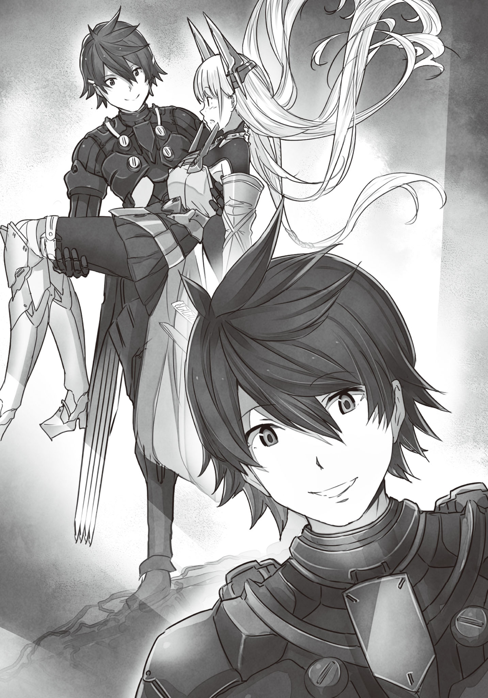
二人は大丈夫だろうか。言い知れない不安が胸中にもたげる。けれどどんなに不安を宿したところで、それを解決する術はない。自分には、彼らとともに戦う力などないのだから。
「......でも！」
弱音を吐いている暇などない。
自分は日輪に言ったのだ。やると。やってみせると。
そして彼女はこう言ったのだ。お任せします、と。
そんなことを思っていると、聞き覚えのある声が届いた。
「す、ず......？」
「霧子！ 良かった、気が付いた！」
そうとも、自分のすべきことは無力を嘆くことではない。
あの二人とともに戦う力はなくても、あの二人が戦っている間。こうして誰かを助けることは自分にもできるのだから。
（私、精一杯頑張るよ。だから、志雄君と日輪も、頑張って────！）
遥かな先で戦う二人に祈りながら、鈴は己の役目を全うすべく、親友の元に駆け出した。
◆◇◆
間に合った。
ありったけの魔力を費やして、全速力で飛び続けたおかげで間に合うことができた。戦殻に刻まれた魔術が発する焼けるような熱さも、今この時ばかりは忘れられた。
「志雄......」
「無事で良かった。随分と無茶したみたいだね」
「恥ずかしながら......志雄の方も傷だらけですね」
「ちょっと予想外の敵と出会ってね」
これまで何年もともに戦ってきた仲だ。志雄も日輪も、一目で互いに大きなダメージを負っている状態だと見て取った。
対する水晶竜──神話級幻獣ヴリトラ。間違いない、こいつこそがアバドンの言っていた主役だ。向こうはほとんど消耗している様子はなく、状況が不利なことは明白だ。撤退すべきだと誰もが考えるだろう。
その上で、志雄の言葉を続けた。
「日輪」
「はい」
「まだやれるね」
日輪は背筋を震わせた。その言葉は彼が自分をパートナーとして捉えている証であり、今この時に日輪が最も求めていたものだ。それだけで弱っていた肉体に活力がみなぎってくる。
「──もちろんです。夫婦の絆の力を、見せつけてやりましょう」
満面の笑みで日輪は頷く。志雄もまた、その微笑みで体に力が宿るのを感じた。
そうだ、証明してみせる。
神話級は強い。一人だけでは勝てないかもしれない。
けれど、二人なら。御霊志雄と御霊日輪なら、きっと倒せると。
「オオオオオオオオオオオオオ！」
水晶羽が飛来した。志雄は日輪を腕の中に収めながら飛翔。追尾する羽に向かって銃から火を放って撃墜し、さらにヴリトラの眼前に炎の帳を放つ。視界を奪われた水晶竜が唸り声をあげた。
その間に、志雄は日輪からヴリトラとの戦いについて手早く説明を受ける。中でも志雄が注目したのはヴリトラの異常なまでの肉体硬度。
日輪の魔術をもってしても歯が立たないとなれば、恐らく自分の魔術でも太刀打ちは難しいだろう。何かしら突破口を開く必要がある。手持ちの手段でそれが可能と考えられるのは──ただ一つ。
「日輪、あれを使おう」
志雄は提げていた金属製のサイドポーチから銀色のシリンダーを取りだした。三の番号が刻まれた、対ヴリトラ用の共鳴魔術だ。
「使いますか、これを」
日輪もまた渡されていたポーチから円筒を取りだす。
「ああ。研究所の皆が遺してくれたこれを僕は信じる」
「でしたら私は信じるという志雄のことを信じましょう」
次の瞬間、炎を振り払ったヴリトラが水晶羽を放った。
飛来するそれを前にして、志雄と日輪は同時に動いた。
「嵐帝領域！」
「獅王戦陣！」
空へと舞い上がる志雄と大地を駆ける日輪。地面に着弾し爆砕する水晶羽を尻目に、二人は共鳴魔術を使うタイミングを計る。魔術の発動には二人が隣接している必要がある。実戦で発動を試みるのはこれが初。まして魔術が一度しか使えない以上、確実に当てられる隙が必要だ。
（だが長期戦は不利。速攻で決着をつける！）
ヴリトラとの戦いで疲弊した日輪はもとより、志雄もアバドンとの戦闘やここまでの飛行で相当な魔力を消費した。短期決戦こそが唯一の勝ち筋だ。そのためには異なる方向から仕掛けて揺さぶりをかけ、強引に隙を作るしかない。
「ゴアアアアアアアアア！」
ヴリトラが空を飛び回る志雄に向かってブレスを吐いた。紙一重で回避。複雑な軌跡を描きながら銃口をヴリトラへと向ける。
「紅蓮戦哮！」
銃から放たれた炎の槍がヴリトラの腕に激突した。だがそれは水晶の肉体に傷一つつけることなく砕け散る。
「オオオオオオオオ！」
さらにヴリトラが吼えると、周辺の空中に突如としていくつもの水晶塊が生成される。何を──志雄がそう思った時、ヴリトラは大きく首を仰け反らせた。するとその頭上に巨大な光球が形成され、次の瞬間、光球から周辺に向かっていくつもの光線が放たれた。
「くっ────!?」
光線が命中した場所は水晶に変貌した。さらにヴリトラの周囲に浮かぶ水晶塊に光線が衝突することで、その角度が四方八方へと変化する。
「厄介な......！」
「志雄！」
地上から日輪の呼び声。交錯する視線。それだけで互いに意図を読み取り、志雄は単身ヴリトラの眼前へと躍り出る。水晶塊が一斉に角度を変えて志雄へと光の雨を降らせた。一筋の光線が戦殻の肩を掠めて水晶に変える。浅い。肉体には届かない。そして──
「轟雷千尾！」
地上から放たれた無数の雷鞭が、空中に浮かぶ水晶塊に叩きこまれた。水晶塊に亀裂が走る──が、壊れない。固い。しかし十分。ひび割れ乱れた照準の中を志雄は搔い潜り、さらに日輪はヴリトラの足元に滑り込んだ。
「──雷霆剣！」
雷剣がヴリトラの足元の地面を粉砕した。意識が上へと向いていたヴリトラの姿勢が大きく崩れる。その隙を突いて志雄は一気に地上へと駆け抜け、そこに飛び込む日輪の姿。
『共鳴詠唱！』
志雄は剣に、日輪は刀にシリンダーを装着。隣り合う中、二人は刃をヴリトラに向ける。その身から燐光が迸り、剣杖が唸りをあげ、円筒が鳴動する。水晶塊が角度を変えて二人を狙った。だが、遅い。
『紫電は竜翼を穿つ────！』
二人の剣杖から放たれた閃光が、ヴリトラを刺し貫いた。
「──ガアアアアアアアアアアア！」
絶叫。二人の攻撃を悉く弾いていたヴリトラが初めてあげる明確な苦痛の声。効いている──志雄がそう思った時、ヴリトラの翼から無数の羽が発射された。
「日輪！」
「わかっています！」
即座に散開した二人に一拍遅れて水晶羽が着弾して爆風を撒き散らす。さらにヴリトラは水晶羽を放つが、ろくな狙いもつけずに周辺一帯を爆破し続ける。その粉塵の中を高速で移動する二人が見るのは、長い首を振り上げながら苦痛にのた打ち回る水晶竜。
（────ダメか!?）
何かしらの効果はあった。だが、倒しきれてはいない。対神話級用魔術を以てしても、致命を与えることができないのか。御霊の研究でこれが限界なのか。そう志雄が思った時、ヴリトラの肉体に変化が生まれた。
水晶細工のごとき半透明の肉体を持つヴリトラ。しかし今、美麗なる体軀が紫色に曇り始めていた。周囲に浮いていた水晶塊も力を失って地に落ち、さらにヴリトラが苦悶に暴れる中、紫に変化した体表が地面と衝突すると、あろうことかその体表が傷ついた。
（そういうことか......！）
──かつて、御霊の血は考えた。
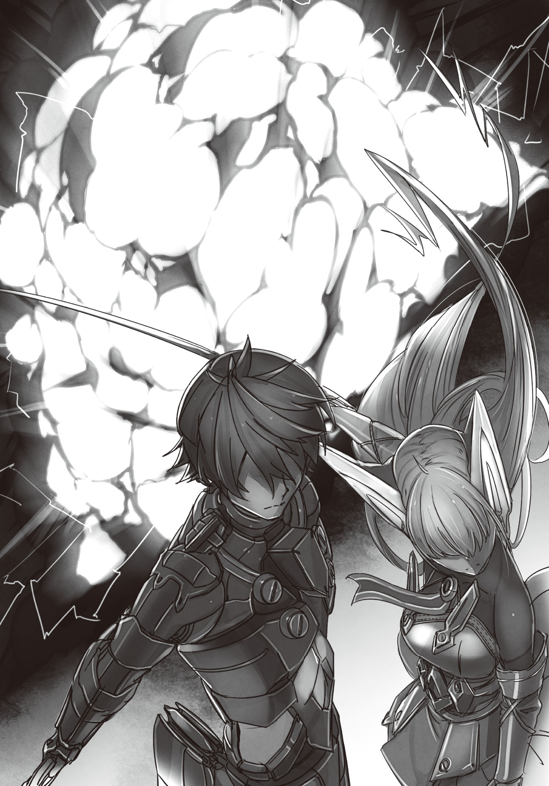
神話級幻獣。天災の化身ともいえるそれを討つためにどうすればよいかを。
人は天には勝てない。いかなる英雄であろうとも、天の前で無力でしかない。
ならば答えは一つのみ。
人が天に勝てぬのならば、天を人の領域へと引き摺り下ろす。
それこそがこの光景。
御霊の叡智は、全てを阻む神の肉体を、ただの硝子細工へと変貌させたのだ。
「志雄！」
「ああ、ここで決める！」
余力は僅か。小細工の猶予は無い。二人は同時に踏み込んだ。
ヴリトラのブレスが放たれる。志雄が炎幕を張って阻むも、それを貫くように水晶羽が飛来。日輪の雷鞭が羽を弾き飛ばす。爆風。衝撃が撒き散らされ。水晶片が志雄の頰を切り裂いた。構わず二人はヴリトラの前へと駆け抜ける。
「轟雷千尾────」
ヴリトラがその剛腕を二人目掛けて叩きつける。砕ける大地。衝撃でひび割れる水晶の腕。だが竜は止まらない。大地を抉りながら両腕を振り回し、そこに日輪は飛びこんだ。
「雷霆剣────！」
大地を割り砕かんばかりの踏み込み。残る全ての力を用いて、日輪はその一撃を放ち──下から振り抜かれた雷剣が、ヴリトラの巨体を虚空へ弾き飛ばした。
そして志雄の上空。隙だらけの体を晒す水晶竜。
日輪が作ったこの勝機。出し惜しみは無い。
「最終詠唱──！」
青の剣から暴風が迸った。最早荒れ狂う災害に等しいそれを両手で握りしめる。そして風が彼自身を呑み込んでなお勢いを増していく中、志雄はヴリトラに向かって飛翔した。
迎え撃つかのように水晶竜の全身から光が生じる。その輝きは喉へと集約し、ひび割れながら開かれた顎の奥から光が漏れる。榛荊砦を半壊させた必殺の光線。だが、志雄は臆することなく空を駆け抜ける。
「災禍の────」
剣先に生じるのは碧色の燐光。それは虚空を両断するかのように研ぎ澄まされ、纏う風を青碧の螺旋へと塗り替える。
「ガアアアアアアアアアア！」
そして甲高い音とともに、ヴリトラの光が臨界を迎え──
「破刃────！」
碧の大嵐が、ヴリトラの口蓋を打ち砕いた。
志雄は嵐の剣とともに今まさに放たれようとしていた光を貫き、そのまま首を砕いて胴体に至り、紫に染まった水晶の半身を一瞬にして吹き飛ばして突き抜けた。
「────」
刹那の空白。半分に削られたヴリトラの頭部。唯一の竜眼が驚愕に染まる最中、制御を失った光の塊が肥大化し──
次の瞬間、炸裂した光の塊が、ヴリトラの肉体ごと天地を吹き飛ばした。
迸る閃光。撒き散らされる衝撃波。爆音と粉塵は彼方まで響き──その全てが収まった時、空より、志雄が大地に降り立った。
「志雄！」
衝撃波を回避していた日輪が志雄に駆け寄る。
その最中、志雄は手のひらを空へ向ける。そこに零れ落ちるのは水晶の欠片。
「......神話級幻獣、ヴリトラ」
志雄は、己のを握り固めた。
「討ち取ったぞ......！」
──かくして、ヴリトラの討伐を境に、この事件は終息へ向かった。
砦級拠点の半壊、及び数千人もの死傷者と被害は甚大であり、各地に多くの影響を与えることなる。
しかし一部の関係者は知っていた。本来ならば、もっと大きな被害があってもおかしくなかったことを。とある二人の戦技魔装士の尽力があってこそ、今の結果があるのだと──
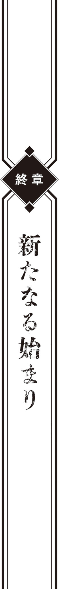
「また派手に壊したものだ」
机の上に並べられた剣杖と戦殻を前に、恋歌は苦笑混じりのため息を吐いた。
「剣の方は内部機構が融解。戦殻も全体に損傷がある上に刻印されている魔術も焼き切れ寸前。銃の方は......こちらもひどい。よく魔術が暴発しなかったな。日輪君のも同様か。乱暴に扱いすぎだ、二人とも」
「仕方ない状況だったんですよ」
答えるのは机を挟んだ前に座る志雄。
二人がいるのは恋歌の研究室だ。志雄の戦殻は恋歌が専用に作成した特注品であり、剣杖の方も何度も整備を頼んだことがある。そして彼女の卓越した技術力を踏まえれば、修繕を依頼するのに恋歌以上に適した人間はいないだろう。
「──それで」
剣杖の状態を確認していた恋歌は視線を志雄に向けた。
「良かったのか。神話殺しの手柄を持っていかれて」
「......」
幻獣の大侵攻と、神話級幻獣ヴリトラの出現という未曽有の大事件。
この事件は、ヴリトラが倒れることで収束した。防衛における戦技魔装士の奮闘もあり、結果として大半の砦の被害も少なかった。──ヴリトラの攻撃を受けた榛荊砦を除いて、だが。
だが当然ながら、一週間たった今でも巷ではこの事件の話題で持ちきりだ。特に今回の件に合わせて出現したヴリトラと、それに果敢に挑み討伐した対策局については、誰しもが一度は話にあげている。
そう、神話級幻獣ヴリトラは、対策局が討伐したことになっていた。
「相応の取引はさせてもらいましたから」
肩を竦める志雄に恋歌は笑う。
「名誉はいらないか。枯れているな」
「逆ですよ。これ以上ないほど滾ってます。名誉欲なんて、焼き尽くすほどに。──僕にとってはようやく星を一つ摑めたわけですから」
それは虚勢ではなく本心だ。たったの一つ。されど一つ。己の手が神話に届くと証明されたのだ。名誉など、残る六柱の神話級を倒すためならば些末なことでしかない。
（それに、気になることもある）
世間的には、全てはヴリトラが引き起こしたことと公表された。生態系の変化や幻獣の移動は神話級幻獣から逃げるためのものだった、と。
決して噓ではない。けれど全てではない。大侵攻を行った幻獣の多くが操られていたのだ。もう一体の神話級幻獣アバドン──その分体によって。
志雄が情報を纏めた限りでは、ヴリトラが死亡した後も操られていた幻獣は暴れ続けたが、突然糸が切れたように死んでいったらしい。志雄が分体を討ってから数時間後のことらしいが──討ったためにそうなったのか、元からその程度の時間しか持たない作りなのか、この辺りを確かめるにはまだ調査が必要だろう。
（その辺りも報告はしたけど公表はされなかった......か）
理屈としては解る。高い知性を持ち、幻獣を意のままに操るアバドン。そんなものがいるとなれば、混乱は必至だ。ただでさえヴリトラの被害も冷めやらぬ中でこれ以上民衆を刺激したくないのだろう。
そう、六年前もそうだった。あの時もアバドンの存在は獅子神から中央へと報告されたが、ろくに返事は無かったと聞いている。今回と同じように混乱を恐れたのか、あるいは他に何か──アバドンの存在を公にしたくない理由が中央にはあるのか。
（対策局に借りは作れた......これを足掛かりに、中央についてどこまで探りを入れられるか......）
やるべきことは多い。しかし、方針は明確だ。
そんなことを考えていると、恋歌が苦笑しながら言った。
「まったく、少しは栄華に心を奪われた方が可愛げがあるというのに。まあいい、剣杖と戦殻は半月後に取りに来い」
「半分の期間でお願いします」
「......君と私の仲だ、やっておこう。他に何か用事はあるか？」
「二つあります。まずこれを」
志雄が取り出したのは二本の円筒。焼き切れ、使えなくなったそれを見て、恋歌は興味も露わに手を伸ばした。
「ヴリトラに使った共鳴魔術か。絶対的な防御能力を打ち消したとか」
「ええ。おかげで助かりました。とはいえそれはもう使えませんから、サンプルとして研究に使う予定です。先生にも協力してもらえればと」
「いいだろう。もう一つは？」
「これです」
差し出したのは水晶の破片。
「ほう......ヴリトラのか」
「はい、爆発で残ってたのを回収したものです。もっと大きな物も今度持ってきますから、よければこれを研究材料として活用してください」
「ヴリトラの死骸は対策局が持っていったと聞いたが」
「名誉の代価です」
「そうきたか。他の神話級の情報については引きだせたか？」
志雄は頭を振った。その辺りにも探りを入れたが、予想以上にガードが固かったのだ。
「ふむ、まあいずれ解ることか。ともあれ、その素材は受け取ろう。面白い結果が出れば、剣杖や戦殻を改良できないか試してみるのもいいな」
「お願いします」
一礼すると志雄は立ち上がった。
「それじゃ僕はこれで。外で日輪も待ってますから」
「彼女も頑固だな。せめて自分の装備を受け取る時は顔を出せと伝えておけ」
「そうします」
手を振って、志雄は部屋を出て行った。
その背中を見送った恋歌は、背もたれに体重を預けて天井を仰いだ。
「あんなに小さかった赤ん坊が、今やあの通り、か」
彼が生まれたばかりの頃、恋歌は志雄と会っていた。もちろん志雄の記憶に残っているはずもなく、また恋歌自身も語るつもりはない。全ては過去のことだ。
「理緒......紫雨......あの子は、どこまで行くんだろうな」
今は亡き二人の友人の名を口にする声は、誰にも届くことなく空中に溶けて消えていった。
◆◇◆
研究棟の外に、日輪は立っていた。
穏やかな風に金の髪をたなびかせながら、空の彼方に向けられた眼差しには、しかし何も映っていない。日輪の意識は今、別のことに向けられていた。
（ようやく星一つ）
神話級幻獣ヴリトラを倒した、その功績こそ対策局に持っていかれたが、何も問題はない。名誉など二の次。むしろこれでグッと対策局からの注目度は上がっただろう。
そして次の神話級も倒せば、対策局も放ってはおけまい。彼らが持ちえる神話級のデータを開示させられるはずだ。そうすれば、志雄の目的が一気に近くなる。
けれど。
（無様と言う他にありません......！）
日輪は内心、忸怩たる思いで一杯だった。
後から聞いてみれば、志雄は神話級幻獣アバドンの分体と接触し、それを見事に倒したという。もちろん本体の能力とは比べるべくもないのだろうが──自分はヴリトラに単独では手も足も出なかったのだ。
志雄と合流することで結果としては倒せたが、それでも、口惜しいという思いは強い。
（もっと腕を磨く必要がありますね）
ヴリトラと戦うことで、神話級が想像以上の強さであることが骨身に染みた。侮れない。これ以上ないほど強敵だ。精進を重ねなくてはいけない。自分は、志雄の隣にいると誓ったのだから。
「日輪」
「ひあっ」
呼び声に全身が震えた。振り向けば数歩後ろに志雄の姿。なんて間抜け。精進しなくてはと言った傍から、これほどまでに接近されてまるで気づかなかったとは。
「......日輪、急に自分の頰を引っ張ってどうしたの？」
「気になさらないでください。少々一人で反省会を実施しているだけです。──それで、お話は終わりましたか？」
「ああ、やっぱり剣杖と戦殻の修理にはしばらくかかるみたいでね。代用のを引っ張り出さなきゃいけないな」
「そうですね。とはいえどちらにせよ、しばらく体を休めなくてはいけません」
「お互いに無茶したからね」
志雄の服の下には包帯が巻かれ、頰には絆膏が張られている。日輪も外傷こそないものの、体の内側にはダメージが残っていた。
「それでこの後ですが、どうしますか？ 確か鈴さんたちのお見舞いに行くとか」
「うん。でもその前に日輪......話があるんだ」
何だろうか。首を傾げる日輪の前で志雄は口を開いた。
「アバドンと戦って、痛感した。僕が思っているよりずっと神話級は強い。けれど同時に、僕ら二人ならヴリトラにも勝てた」
志雄は続ける。
「僕は神話級を追う。あいつらを倒すという使命は捨てられない。でも、やっぱり僕一人じゃ無理だ。だから──」
一息。
「改めて、言わせてほしい。どうか、僕と一緒にきてくれ、日輪」
真っ直ぐに日輪を見据えて、志雄はそう口にした。
それに対して日輪の反応は──
「はあ」
気のない返事だった。
「えーっと......その反応はどういうことなのかな日輪」
「どうも何も......そんな今更なことを改めて言われましても」
「そりゃ今更かもしれないけどさ！ でもこういうのって大事だと思うんだよ！」
「確かに一理ありますが、状況的に考えればむしろ、やっぱり一緒だと危ないから、なんて別れ話でもされるのかと思いましたよ」
「......してたらどうしてた？」
「夫婦喧嘩でしょうね。なに、些か度が過ぎてもこの学校が崩壊するぐらいですみますよ」
実はそういう話にすべきかとも少しだけ思っていた志雄は、その事実を一生伏せておくことを心に決めた。
そんな志雄の頰に、包み込むようにして日輪の両手が触れる。顔をあげると、眼があった。日輪の碧色の瞳が、輝いて見えた。
「志雄、不安に思うことはありません。今までも、これからも、私がともに幸いを得たいと願うのは貴方だけです。私は貴方の片翼として、常にともにあり続けます」
「......ああ。ありがとう」
ゆっくりと紡がれる言葉は、かつて泉の畔で聞いた時のように。
「僕も隣に居てほしいと願うのは──日輪、君だけだ」
そう言って、志雄は穏やかな微笑を浮かべた。
日輪はくすぐったそうにしながら、それでは、と志雄に手を差し伸べる。
「はい。──この御霊日輪が、貴方の横に並び立ちましょう」
二人は手を繫いで歩き出した。
神話殺しの戦技魔装士。
二人の長い長い旅路が、始まろうとしていた。
あとがき
初めまして、あるいはお久しぶりになります、鳥羽徹です。
この度は幻葬神話のドレッドノートを手に取って頂きありがとうございます。
本編の方はいかがでしたでしょうか。先に後書きを読まれている方もいるかもしれませんので、詳しく語ることは避けますが、面白いと感じて頂けたのならば幸いです。
今作は自分にとって数年ぶりの作品になります。
年に三冊や四冊出るのが当たり前のラノベ業界において、数年間も本を出さずに何をしていたのかといえば、恥ずかしながらゲーム三昧でサボっていました！ ......などというのは冗談で、悪戦苦闘しながら原稿を書いておりました。
そう、世界観を考えるのに頭を捻りながらモンハンをやったり、キャラ設定に苦慮しながらテラリアをやったり、細かな言い回しを詰めながらコールオブデューティをやったり......あれおかしいな、ゲームの記憶が次々と出てくるぞ。
まあともあれそんな日々を送りつつも、無事に出版まで漕ぎつけることが出来ました。
また数年空くなんてことがないように、バリバリ作品を書いて頑張ろうと思います。
ではここからは謝辞を。
担当のＫさん。根気よく原稿の改稿に付き合ってくださってありがとうございます。
真っ赤になって返ってくる原稿を見る度に、終わりの見えない登山に挑んでいる気持ちになりましたが、その容赦のない指摘があってこそ無事に原稿を完成させられたと思います。これからもどうぞよろしくお願いします。
イラストを担当してくださった赤井てらさん。
剣杖や戦殻のカッコよさにびっくりしました。デザインも細部まで詰められていて感動しきりです。キャラクターの方も素晴らしい出来栄えで、特に日輪は凛々しさと可憐さが両立していて、自分の中にあった漠然としたイメージが見事にあてはまりました。本当にありがとうございます。
アドバイスをくれた友人達にも感謝を。作品を書いていると何かにつけて視点が偏りがちになりますが、頂いた意見のおかげで違う角度から作品を捉えることができました。何かあればまた相談をさせてください。
そして最後に、この本を読んでくれた読者の皆さんもありがとうございます。
これからも面白い作品を書くことを追い求めますので、応援よろしくお願いします。
それではまた、次の物語でお会いしましょう。
著者
鳥羽 徹（とば とおる）
復活しました
今後も頑張ります

イラスト
赤井てら（あかい てら）
宮城県出身のイラストレーター。
黒タイツと革製品をこよなく愛する。
ファンレター、作品の感想をお待ちしています
＜アンケートページはこちら＞
https://emob.jp/m/fi.php?a=gabunko&d=6&i=6524
（このページのスクリーンショットを撮って、ＱＲコードリーダーアプリで読み取ればアンケートページにアクセスできます）
〈あて先〉
〒１０６－００３２
東京都港区六本木２－４－５
SBクリエイティブ（株）
ＧＡ文庫編集部 気付
「鳥羽 徹先生」係
「赤井てら先生」係
http://ga.sbcr.jp/
ＧＡ文庫
幻葬神話のドレッドノート
鳥羽 徹
発行人 小川 淳
発行所 SBクリエイティブ株式会社
〒１０６－００３２
東京都港区六本木２－４－５
装 丁 AFTERGLOW（山崎剛／西野英樹）
印刷・製本 中央精版印刷株式会社
２０１５年８月３１日 初版第一刷発行
２０１５年８月１日 電子第一版発行
©Toru Toba ISBN 978-4-7973-8468-0